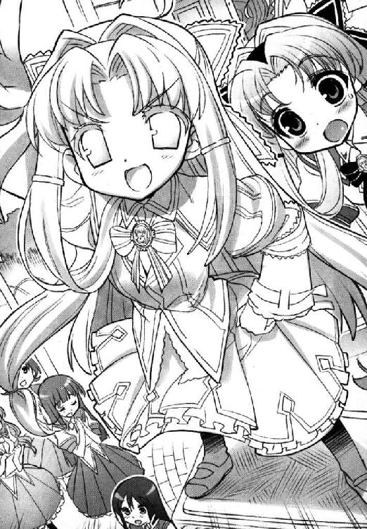

| SH@PPLE-しゃっぷる-(5) (富士見ファンタジア文庫) | |
| 竹岡 葉月 & よう太 | |
| 富士見書房 (2011) | |

本作品の全部または一部を無断で複製、転載、配信、送信したり、ホームページ上に転載することを禁止します。また、本作品の内容を無断で改変、改ざん等を行うことも禁止します。
本作品購入時にご承諾いただいた規約により、有償・無償にかかわらず本作品を第三者に譲渡することはできません。
本作品を示すサムネイルなどのイメージ画像は、再ダウンロード時に予告なく変更される場合があります。
本作品は縦書きでレイアウトされています。
また、ご覧になるリーディングシステムにより、表示の差が認められることがあります。
口絵・本文イラスト よう太
ＣＯＮＴＥＮＴＳ
序章
足かけ十四人を殺害した連続殺人鬼は、主人公が手にしたナイフによって、華々しく絶命した。
「──しかし、川に落ちた遺体を発見したものは、誰一人いなかったという......まる。かん......」
淡谷菜穂子は、書きためた原稿用紙の末尾に『完』の文字を書き付けると、ふうとため息をついた。
「......ふっ。終わったよ......」
そのまま編集部に原稿を取りに来るよう連絡を入れ、二日ぶりの睡眠を取るべく寝室のふすまを開けた。
彼女の肩書きはミステリ作家だ。ペンネームは淡谷猶彦。現在時刻は朝日もまぶしい午前七時五十分。すでに還暦を過ぎた老体に徹夜仕事はこたえるが、こうして無事に布団へもぐれるというなら感無量なのだ。
「......さあもう寝るよ。寝るからね......ひひひひ......」
まばゆくさしこむ日差しをカーテンできっちり遮断し、寝間着に着替えてさあさあ寝るぞと電気を消した瞬間、
「ち、こ、く、だ────────────────────────っ！」
こんな叫びで脳味噌を揺らされるのだからたまらない。
「舞ちゃーん！ 舞ちゃん早く早く早く！ 遅刻だってばほら！」
「まってよユキグニ。ご飯は？」
「作ってるヒマなんてないよ。バス間に合わないし！」
「だったら遅刻するよボクは。ユキグニ先に行きな？」
「なにその無茶な理由！ なら自転車使っていいの？」
「だめ」
「わけわかんないって！」
弟が泣きそうな声で怒り、姉が淡々と受け流す。そろって同い年の双子の姉弟だが、声と足音だけですぐにわかる。菜穂子は「チッ」と舌打ちし、布団から這い出てふすまを開けた。
「こおら雪国っ！ あんたが自転車こいで送ってやりゃいいんだから、ぐだぐだ言わずにつきあっておやり──」
「わっ、ごめんおばあちゃん！ そこいたの!?」
菜穂子はぽかんとしてしまう。
叫んで叱ったはいいが、てっきり弟の方だと思っていた気弱な声の主が、青美女学院のスカートをはいていた。
長い髪をなびかせ、ぺこぺこ謝りながら廊下の角を曲がっていくのだ。
「............あたしもボケがきたのかねえ」
菜穂子はかすむ目をこすり、今度こそ布団で眠ることにした。
彼女はミステリ作家で、赤いちゃんちゃんこな還暦もとうに過ぎ、なによりとてもとても眠かったのだ。
＊＊＊
けっきょく舞姫に食パンをかじらせてから、自転車に乗って駅を目指すことになった。
「お腹減っれらら、力出ないひね」
「舞ちゃん。食べながら喋るとパン落とすよ」
「む」
舞姫が、口にくわえたままの食パンを、器用に口だけで咀嚼して飲み込んでいる。
二人乗りのママチャリは、そのままニュータウンの一軒家を走り出し、駅へと続く坂道を下っていった。
パンをくわえてハンドルを握っているのは、空舟五中の制服を着ている舞姫の方だ。雪国は後ろの荷台で、フレアスカートの裾をおさえている。
舞姫がついにパンを食べきったらしく、
「──来週からさー、うちの学校、衣替えだって」
「ああ、僕んとこもだよ舞ちゃん。タンスの奥から出しとかないとね」
「まだ暑いのにね」
それでも曇りの朝や日が沈んでからの数時間、おどろくほど肌寒くなる日が増えてきているのを雪国は知っていた。
──あの日。
市内の学校を巻き込んだ人力リバーフェスタが幕をおろし、ためこんでいた宿題を片づけると、すぐに新学期がやってきた。雪国たちは、当初の相談通りに、お互いの制服を交換して、女子校と共学の学校に通いはじめている。
「いろいろあったよね......一学期の間だけでもさ」
「だね」
舞姫も背中を向けたままうなずいている。
「いつ頃だっけ。ユキグニのこと好きな女の子が押し掛けてきたのって──」
「あれは舞ちゃんが原因じゃないか」
「そうだっけ？」
自転車は走り続ける。すでに遅刻寸前だろうが、締め切り明けの祖母にののしられようが、そして好きな女の子にふられようが。なに一つ関係なくぶっちぎって、二人が学校生活を送っている、二つの校門を目指してスピードを上げた。
「行くよ！」
──思い出すのは、あの騒々しい夏の日々。
第１章 月光スキップ YUKIGUNI SIDE
淡谷雪国が学校から帰宅すると、家の前で自分が告白されていた。
「──あの、好き。好きなの雪国君のこと！」
ほら、雪国君だって。
びっくり啞然とする雪国を置いて、その女の子は一生懸命訴えている。
空舟五中の制服を着ていた。肩までの髪を、高く二つに縛っていた。両手で鞄を抱え、力説のたびにツインテールがふるふる揺れて、ちょっとたれ目気味の顔も真っ赤で、決死のウサギという言葉がぴったりくる。
「好きって言われても、困るよ」
そっけなく答えているのは、やはり自分と同じ顔をした人間だった。
五中の開襟シャツと学生服を着ていた。中三男子と言うには小柄で華奢っぽかった。
しかし女の子を見下ろす目つきや姿勢は、かなりクールな感じが漂っている。
『雪国君』、たずねる。
「本気なの？」
「本当なの。あたしは、雪国君が好きで、ほんとにほんとに好きで、だからあきらめられないの。本気なの」
「でも、困る」
ウサギテールは、動かない。
「......一回。一度だけでいいから......」
そうしてだんまりを決めこんでしまう女の子に、『雪国君』が、かすかなため息をもらす。そして、ひそめた眉はそのままに、女の子のふっくらとした頰に左手を添えた。
え、え、え。するの？ するの？ やっちゃうの？
うろたえる雪国を置いて、女の子が目を閉じる。唇と唇が近づいていく。うわあやっぱりこれは本番ちゅーですか。
「──もしもしっ？」
雪国は、たまらず声をかけてしまったのだ。
女の子が、きゃあと叫んで逃げていく。
後に残されたのは、そんな女の子を追おうともしない、『雪国君』。
「あ、ユキグニ。おかえり」
おかえりじゃないってば。平然とこっち見てる場合じゃないってば。
「......舞ちゃん。あのさ君、僕のかっこでなにけしからんことしてるわけ？」
「そういうユキグニだって、ボクのかっこで好きなことしてる」
「そんな」
言われて雪国は、あらためて自分の格好を見直す。
袖の膨らんだ真っ白いブラウスに、膝まで届くフレアスカート。
ぴかぴかの革靴と腰まであるロングヘアで、襟元を飾るは校章付きのリボンタイ。しゃなりしゃなりと進むたび、スカートの下のシュミーズが肌に貼りついて。
そう。今の雪国は、ヅラをかぶって女子校へ通う『淡谷舞姫』さんなのである。
＊＊＊
淡谷雪国と淡谷舞姫は、身長、体重、外見ともにそっくりさんの双子さんである。
お互いにやりたいことや逃げたいことがいろいろあったため、雪国が通う市立空舟第五中学と、舞姫が通う私立青美女学院中等科を交換したのがいつだったろう。
制服の下にはジョーゼットのシュミーズ着用。目をつぶりたくなるような体育の着替えの時間。男の自分が女の子に化けるおどろきは、嫌と言うほど味わったつもりだが、はじめた時はまさか、こんなトンチキな事態までセットで待ち受けているとは思わなかった。
「とにかく舞ちゃんっ、僕が五中に復帰できなくなるような酒池肉林行為はダメ！ 禁止！」
「禁止って言われても......」
「何人こませば気が済むんだよ！」
「こましてもないし」
二階の部屋の片隅で、雪国は訴える。
本棚と二段ベッドで、簡単に仕切っただけの子供部屋なので、障子紙より声が通る。まったくもうとぼやきながら青美の制服を脱ぎ、カツラも取って『リアル雪国』に戻ると、やっと息がつけるような気がした。
「でもねユキグニ。ボクは自分から声かけたことなんて、一度もない」
理由にならないっての。
二段ベッドの向こう側で、舞姫もまた着替えているようだ。閉まりきらないカーテンの先、ワイシャツが放られ、スラックスが放られ、一瞬目がさめるようなむきだしの白い身体にＴシャツがすぽりとかぶさった。
（なんかなあ）
そうしてＴシャツとスパッツの部屋着スタイルになると、腰から太ももにかけての丸いラインは女の子らしいし、薄いなりにも胸があるのがちゃんとわかるのだが、五中のそっけない学生服だとそれもわからなくなってしまうのだ。
「ユキグニ、髪ちょうだい」
「はいはいはい」
ぽーんと二段ベッドの上をヅラが飛ぶ。
雪国は、頭痛をこらえながらベッドの下段に腰を下ろした。
「......だいたいね、なんで舞ちゃんの時ばっかりなんだよ。ちゅーちゅーちゅーちゅー、僕が五中にいた時はそんなのぜんぜんなかったのに......」
「さあ。人間性？」
「僕の魂は非モテでできてるっての!?」
「じゃなくて。ボクが女の子につきまとわれるの」
あきらめたようにつぶやいている。その憂いやらなんやらが、女子を惹きつけてやまないのだなと、なんとなくわかるが理解したくない。
とにかく舞姫は、もてる。見た目が男になろうが女になろうが、関係なしに『女子』からモテモテである。
もはやお母さんのお腹の中で、女子との縁を根こそぎ奪って生まれてきたのが舞姫じゃないかと悲観したくなるぐらいだ。残りがいわゆる僕ユキグニ。
「もう僕はごめんだよ。男子軍に討ち入りくらったり修羅場にまきこまれるの......」
「ボクだってごめんだよ」
「今回の子は、なに？ うちのクラスの子じゃないよね」
「さあ。Ｃ組の脇坂かの子さんだって。ユキグニ知ってる？」
脇坂かの子──言われても、特にめぼしい思い出などない。
五中の三年Ｅ組にいた頃の雪国は、本当に平凡地味なクラス委員だったのだ。
取り柄といえば勉強ぐらいで、対する脇坂かの子といえば、特に派手なグループにいるわけでも、委員会でたびたび一緒になるような優等生タイプでもなかった。
つまり雪国のような勉強一筋のクラス委員とは、まず接点など持ちようがなかった女の子だ。
（だってのに）
落とすか淡谷舞姫。おそるべし。
「......そうだユキグニ。最近見たい映画とかある？」
「はい？ 映画？」
「うん。なんかあっちこっちから渡されてさ」
舞姫も学生鞄を抱えて、雪国のベッドまでやってくる。すると中から出てくる出てくる、ラブレターに調理実習のお菓子に手編みのマフラー。
この赤地に白く編み込まれたＹ・Ａって、もしかしてユキグニ・アワヤの略ですか。
「どうするのこれ......？」
「まいてほしいんじゃないの？」
「シーズンオフって毛糸も安いの......？」
我慢大会だ。都市伝説だと思っていたのに。イニシャル入りマフラー。
映画のペアチケットなど、わざわざ布団の上に数種類並べて、ポーカーのように組み合わせて、
「ほら。恋愛・恋愛・恋愛・ホラー・ホラーでフルハウス」
くそう。神様は不公平だ！
「そりゃあお前さんねえ、もともと舞姫は性別の自覚が薄い子だったよ。赤ん坊の頃から」
ショッキングなことを言ってくれたのは、同居している祖母の菜穂子だった。
海外赴任中の両親にかわり、淡谷家の家長で保護者が彼女である。
木造平屋の離れを仕事場にしている彼女にとって、庭で作業中の雪国は格好の話し相手のようだ。先ほどから詳細は伏せて、『舞ちゃんは女の子にもてすぎる』とぼやいてみたことへの返答がそれである。
「どういうこと？」
雪国は、あらためて窓辺に見える祖母の着物姿を振り仰ぐが。
「まあね、覚えてないのも無理ないさね。一緒に生まれてきたお前さんが未熟児だったろう。はじめは健常者の余裕ってなやつかねえ、四六時中一緒にいてお前さんの面倒ばかりみてたんだよ。そのうち自分とお前さんの区別もつかなくなって、欲しがる玩具は男もんのトラック、『雪国くん』と呼べば『はーい』なんて返事するようになった」
「うあー」
「こりゃいかん、と。息子たちは舞姫だけでも女子校に入れてやろうと思ったわけさね......ほいこれで一人死亡」
包んで捨てろみたいな口調である。
「......あのさおばあちゃん。参考までに聞きたいんだけど、今度のお話では何人お亡くなりになる予定？」
「予定は未定だよ。今んとこ三人しか死んどらんし」
「しか......」
「まだまだ行くよ。うしししし」
そう言って黄色い歯を見せて笑う姿は、作家というより八つ墓村、横溝正史の小説に出てくる怪しい老婆そっくりだ。
淡谷菜穂子。ペンネーム淡谷猶彦。一応知る人ぞ知るミステリ作家、らしい。
こうしてかいま見る仕事場の梁には、執筆の資料か等身大の全裸マネキンがロープで逆さ吊りにしてあって、そこには『デッドラインは来月一日！』『樟脳の毒はけいれんを誘発す』などと編集者との打ち合わせメモが歪んだ筆致で貼り付けてあってかなり怖い。
「せめてその人形おろそうよ......家ん中にレクター博士がいるみたいでやだよ......」
「そうかい？ 恐がりの腰抜けだね。しばらく吊しとこうと思ったのに」
「ご近所の人にみつかって悲鳴あげられるのが先だと思うよ」
淡谷さん家でとうとう首つりが！
主婦の悲鳴と犬が鳴く声、パトカーの回転するランプの光まで想像してしまった。
雪国の指摘に、菜穂子はしぶしぶ全裸マネキンを下ろしはじめる。一応、ご近所の人に猟奇認定されるのは怖いらしい。
途中で笑顔のマネキンと目が合って、どさりと床に落ちる音までホンモノらしくてかなり嫌だ。
「で、ぼやくあんたはそこでチンタラなにしてんのかね？」
「う──」
庭の雪国、中腰の姿勢でぎくりと固まる。
たしか自分の左手には園芸バサミ。足もとには大事な薔薇の鉢植えがずらり。
この時期は梅雨の長雨にそなえ黒点病やカイガラムシに用心し、枝に負担をかけないよう咲ききった花はこまめに剪定してやるのが大切というかなんというか。
「......は、花の......世話を少し......」
悪いか。趣味なのだ庭いじり！
「あっひゃっひゃ、あんたらもうガッコ交換したら！ うまくやってけるよ！」
してるさ！ あなたには言ってないけどね！
不平は言いつつ、しっかり舞姫からチケットはもらってしまった雪国である。だってこれはこれで正当な報酬なのだと言い訳しつつ、私立青美女学院へと登校する。
空舟駅からスクールバスで二十分。開校明治十八年。周りを深い緑に囲まれたこの学院は、お嬢様エクスプレスの終着地とも言われていた。
「おはようございます」
「ごきげんよう」
「ごきげんよう、みなさま」
見たまえ、このさわやかな朝の風景を。
バス停から正門までの細い小道を、同じブルーの夏服を着た少女たちが歩いていく。何度見ても荘厳な光景だ。
お嬢様学校だけあって、スカートの下にジャージをはいてチャリ通する生徒も、歩きながら化粧の乗りをチェックするギャルも、もちろん一人もいない。
だってここは青美女学院。県下の男女のあこがれの園。お嬢様エクスプレスの終着地。
そうしてそんな学院で、雪国の立ち位置がどんなものかと言えば。
「おはようございます、舞姫さま！」
「あ、おはよう」
とたんにあがる甲高い悲鳴。
「──わ、若光の君が。私にご挨拶を......！」
「泣かないで眞里子さん。この喜びは教室で。ゆっくり語りあいましょう。ね？」
「日記に書きます。絶対、絶対に！」
二人は感激しきり。ひしと寄り添って涙腺を決壊させてしまっている。
正門をくぐったとたんにこれである。
なにか縁起物の仏像（タワシで磨くと御利益あり）にでもなった気分だが──さすがは中等科生徒会長、淡谷『若光の君』様なのだろう。
生徒会選挙で圧倒的勝利をおさめたという舞姫の人気は、ここに来てかげることもない。当の舞姫自身は、その人気がうっとうしいと思っていたようだが、みんなとてもいい子たちなのだ。
声をかけてきたのは、見も知らぬ下級生二人だった。一応下とわかるのは、学年によってリボンタイのカラーが違うからである。
せめてこの信頼は大切にしてあげなければいけないのだろう。
だから雪国は、ハンカチを握りしめる少女の頭をなでた。
「ね、ほんとに泣かないでよ」
「私、私......」
「困ったことない？ なにかあったら本館の生徒会室に来てよ」
にっこり。
そうやって順当に生徒会長していると、前方でまた悲鳴があがるのだ。
「みなさま、ロワイヤルメンバーよ」
「胡蝶の宮もいらっしゃるわ！」
そわそわとしたざわめきが、雪国たちのもとまで伝わってくる。泣いていた女の子たちも顔を見合わせ、そろってあとを追いたいそぶりを見せるから、こちらも一緒についていくと、場所は校舎脇のテニスコートだった。
金網の向こうで、白いテニスウエアとボールが躍っている。
──本日の行事は早朝テニスですか。
雪国はひとりごちた。
あそこにいる彼女たちは、べつに試合が近いわけでも、テニス部に所属しているわけでもない。その証拠に、ボールを追う動作はひどくゆったりとしたもので、ベンチサイドにはお茶やお菓子まで用意してある。
「縁子さん、ナイスプレイ！」
「お見事ですわ」
社交ソロリティ。
それは正規の部活動とは別に黙認された、学院独自の交流サークルのことである。
中でも屈指の歴史と伝統を誇り、セレブ中のセレブのみが入会を認められるのが『ローズロワイヤル』だ。ここに入れる生徒は、時にロワイヤルメンバーとも呼ばれ、学院中の憧憬を集める立場にある。
現在ゲームをしているのは、全員がそのロワイヤルメンバーだった。
ぽーんとボールが跳ねるたび、ベンチに控える少女たちの、優雅な拍手がわき起こる。目的は社交だからこそ、見苦しい試合運びなど見せはしない。選手どちらにもあたたかな声援が送られ、どこまでも優雅。ハイソかつハイクオリティ。そこだけ清里と軽井沢の風が吹いている気がする。
「ほら蜜、次はあなたのサーブでしてよ」
「はい、お姉様！」
その涼やかな声に、雪国の心臓は射貫かれそうになるのだ。
新しくコートへ躍り出たのは、雪国があこがれてやまない一人の少女だった。
ふわふわの淡い髪と、すんなりと伸びた華奢な手足が朝陽に映える。くりっと大きな瞳がフランス人形のようだ。
いつもは長いスカートに守られて見えない脚が、今日にかぎってはテニスウエアでばっちり見えた。ひゃっほうと叫びたくなるほどだ。少女らしく肉付きの薄い太ももも、形のいい膝頭も、今さっきおろしたてのように白く輝いている。
ラケットでボールを打ち返すたび、スカートの下に仕込んだアンダースコートまで覗いてくれて、頭の中で幸せの鐘が鳴った。
「......舞姫さま？」
「あ、いやいや」
思わず屈んだ姿勢になってしまったらしく、側にいた下級生に不思議な顔をされてしまった。
雪国が女装してまでこの学院にやってきたのは、ひとえに彼女、一駿河蜜に会いたかったからなのだ。
ソロリティの歌姫としてメンバーに可愛がられる蜜だが、どうやら球技もそこそこらしい。持ち前の運動神経でボールに追いついては、えいとばかりに打ち返す。
（あっと）
ちょっと真っ正直に打ちすぎるきらいもあるかもしれない。ほら、きわどいコースに返され──いや粘る。追いつく追いつく。すごい粘りだ一駿河さん。
「一駿河さん、がんばれ！」
ぱぁっこーん、と。
まるでなにかのタガが外れたように、高く高くボールが打ちあがった。ああ大きい、大きいぞ。ボールは相手選手のはるか頭上を越え、柵を越え──入ったあああ、特大校舎越えホームラン！
「あらあ......」
「まああ......」
おもいっきりアウトなのだが、なぜかぱらぱらと拍手がわき起こった。
みながボールの行方に思いをはせる中、バッターボックス（？）の蜜が、猛然とこちらを振り返る。
（や。おはよう）
他の観衆に混じって雪国が手を振ると、彼女は顔を真っ赤にさせた。ぱぱっと胸の前で指を動かしている。
──放課後。
──いつもの場所で。
どうやら蜜のメッセージのようだ。
おっけー一駿河さん。雪国は笑って親指をたてるが、彼女は気づかない。黙って試合へ戻っていく。
ぽーん。ぽーん。ボールがぽーん。
うん。いいなあ──ミニスカ。
＊＊＊
そうして放課後になると、雪国は言われた場所へ行ったのだ。
学院の外れにある庭園は、綺麗に手入れされている割に人気は少なく、その日も噴水脇のベンチは、雪国と蜜の貸し切りだった。
「──いったい」
蜜のお箸が、ばすっとタッパーの中へと突き刺さる。
「なに考えて」
あむっと一口。咀嚼するまでコンマ三秒。
「声援なんて送ってんですか先輩は──────────────っ！」
それで食べかすが出ないからすごいのだ蜜は。
「おいしい？」
「聞いてますか先輩は！」
膝に乗っけた弁当の味を聞きたかったのだが、蜜はそれどころではないらしい。
「ほんっとに、信じられない！」
「......べつに、応援ぐらいかまわないと思うけどな」
「ちっともよくありませんよ！ 蜜はソロリティのロワイヤルメンバーです。先輩は生徒会のトップです。あ、あんな人のいっぱいいるところでへらへら笑って、なにかあったらどうするんですか！」
「気づかないよ誰も」
「そう思ってるのは先輩だけです！」
頰を上気させ、蜜は早口に訴える。
──たしかに、蜜の心配もわからないでもない。
実務と実績の生徒会と、伝統と格式のソロリティ。この青美女学院の二大勢力は、国会と皇室のような関係で今日まで拮抗してきたのだ。
現実のそれと違うのは、生徒会とソロリティ、どちらも学院の顔は自分たちだと信じて疑わず、ものすごく仲が悪いこと。
だが、本当に険悪だった時期は過ぎたと思うのだ。
今は多少わだかまりが残ろうと、生徒会とローズロワイヤルは、ともに手を取り合って仲良くなるべきなのだろう。だからほら、雪国と蜜だってこんなに仲良く親密に。
「ほんと先輩って脳天気っていうかお人好しすぎますよね」
うわ、全否定きちゃったよ。
「蜜たちはですね、いつでも学院の誉れとなるべくがんばってますよ。早朝朗読会は週三回、今月の特集はリルケとハイネとランボーです。来週の室内楽コンサートの打ち合わせで、今日のお昼はお姉様と一緒にカフェテリアでフレンチのハーフコースを」
ふんふんふん。
「じゃ、すごいもの出たんじゃないの？」
「ええもう。メインはバルバリー種の鴨。アプリコットとアーモンドのオレンジソースがけ」
「おいしかった？」
「最っ高です！」
蜜、魂の叫び。
「鴨はなんだか知らないけど薄っぺらくて半生で、肉よりも付け合わせの野菜がどっちゃり多くてソースはひかえめ、もったいぶったみたいにお皿だけ大きくて時間もかかって、塩気もパンチも足りないけどトンカツソースでは味わえない至福の時間がそこにあるんです──────っ!!」
言いながら彼女がぱくつくのは、オタフクソースがたっぷりかかったタコヤキである。
「苦手なら無理はしない方がいいと思うんだけどなあ......」
「うるさいですね先輩は。弱点は克服するためにあるんです。はふ」
お嬢様のくせにＢ級嗜好、高級品を受け付けない貧乏舌な彼女のため、雪国がこっそり持ってきているのである。
今のところ、彼女の道は険しそうだ。認める気はまったくなさそうだが、タッパーのタコヤキをつつく蜜の横顔は幸せそのものである。
焦げ茶のソースがつかないようにすぼめられた唇は、つやつや赤くてとてもキュート。にきび一つない頰は桜色に染まり、口いっぱいにタコヤキを頰ばった瞬間の、こらえていてもこみあげる笑顔ときたら。
わざわざ家庭科室のレンジであたためなおし、カツオブシとマヨネーズは後からトッピングという手間をかけただけのことはあるというか、ぱくっと蜜ごと食べてしまいたくなる。
（やっぱり映画、誘ってみようかな）
うずうずとした欲求。舞姫から押収したチケットは沢山あるのだ。
そう考えると、次に決めておきたいのは演目だった。雪国はちらりと蜜を見る。手持ちの札は、恋愛・恋愛・恋愛・ホラー・ホラーでフルハウス。
「一駿河さんさ、たとえばなんだけど、怖いのと甘いのどっちが好き？」
「それは......やっぱり甘いのでしょうか？」
「なるほどね」
ホラーは却下。
「甘いのでもせつないのとハッピーなのは？」
「ハッピー......でしょうか」
悲劇も却下。
「ハリウッド超大作とフランス単館上映系は？」
「眠たくなるのはちょっと......」
エンタメ万歳。
「現代物と時代物は？ 特定の翻訳者が訳した字幕は許せないとか特殊なポリシーはない？」
「映画の話なんですか？」
「うんそう」
これでだいぶ絞れそうだ。
ふと気づくと、蜜がこちらを見ていた。静かに、そしてなぜか冷ややかに。
「......行かれるんですか？ どなたかと」
なに。なにその底冷えしそうな真冬の目つきは。
「先輩、ときどき無神経って言われません？」
「まって。それどういうこと」
「決まってるじゃないですか。人をだしに使って考えるのはやめてくださいってことです。相手は生徒会の方ですか？ それとも今朝一緒にいたさくら組の子？ 先輩のファンですものねあの子たち。べたべたくっつきながらコートまで来たの知ってますよ。ふん」
なんでそうなるのだ。
「あ、あのね一駿河さん。僕が行きたいのは一──」
「どうせ蜜の趣味なんてへんてこりんなんですから、参考にしたってムダですムダ！ 外して泣き見ても知りませんから！」
タッパーがベンチへ戻され、立ち上がる勢いで踵が甲を通過する。うあっと雪国は一瞬息がつまり、悶絶しているうちに走り出されてしまう。
（まって）
誤解だ。誤解だ。誤解だと言っているのに小道の途中で立ち止まり、涙目で振り返った蜜は、
「先輩なんて大っきらい！」
とどめをくらわせてきた。
──だいっきらいだいっきらいだいっきらいだいっきらいだいっきらい......。
この世には、なんて胸えぐる言葉があるものだろう。
風穴の空いた胸をおさえ、よろめきながら家へ帰る。今の自分の心をなぐさめてくれるのは、届いたばかりの園芸カタログぐらいだ。
（菊ー椿ーサツキに薔薇ー）
女になってもこの体たらく。男になったらどうなるか。だめだ雪国。今だけは考えるな。
自宅玄関の靴脱ぎには、すでに舞姫のスニーカーが置いてあった。
制服のままリビングに顔を出すと、彼女も五中の制服を着たまま電話中だった。こちらだけ着替えるわけにも行かず、仕方がないから鞄だけ二階に置いて一階へ戻ると、舞姫はまだ話し込んでいた。
ソファに埋もれて秋咲き用の園芸カタログをめくりはじめるが、やはりどうにも集中できない。
かわりに頭を回るのは、今日の言動と悪かったタイミングについて。
頭の中の大本営では、まだ訂正はきくという徹底抗戦派と、もうあきらめろという撤退派が、激しい議論を続けているのだ。艦砲射撃。補給はない。へいシット、武器も弾薬もないのにどうやって戦えばいいんだ。
どちらにしても、青美オトモダチ戦線の行方は厳しいようだ。
「──だから、困るんだ」
いきなり強い口調が飛び出して、雪国は顔をあげた。電話に向かった舞姫だった。
「もう二度と電話しないで。うちの番号まで調べてくれたみたいだけどね、迷惑なんだ。こういうの」
そのまま一気に受話器を置いてしまう。たぶん、相手の反論すら許さなかっただろう勢いで。
「......ま、舞ちゃん？」
「大丈夫。ちゃんと断ったから」
受話器をみつめて小さく付け足す。やはり、あの脇坂かの子からだったらしい。
舞姫は、制服の長い脚をたたんで、カーペットの上に膝を抱えた。そのまま黙って、テレビのザッピングをはじめている。さすがは舞姫。クールな横顔に、変わりは──ない？
時計の針を見ると、ちょうど六時になるところだった。
＊＊＊
棚のコンポにつないだヘッドホンからは、深夜のＦＭラジオが流れている。
悲しい中三受験生としては、潜入先の青美女学院の勉強の他にも、一応『受験勉強』なるものもしておかなければならないのだ。
さっきからＤＪは十年ぐらい前の洋楽を、早口の英語と一緒に放送している。こちらが数学の基礎問題を解き終え顔を上げると、夜の十二時を少し越えた頃だった。
（おなかへったな......）
ここで親切なお母さんがいるご家庭なら、ノックの一つもしながらほかほかの夜食が出てくるのかもしれないが、あいにく両親ともに海外赴任中の淡谷家である。
同居中の祖母は、雪国以上に体の空かない作家業だ。今日は家の風呂場で怪しい密室トリックの実験をしていたあと、離れの仕事場にこもって夕飯すら食べに出てこなかった。タイルの血糊はふいてくれただろうか。
部屋の反対側の舞姫は──もう寝ているようだ。考えるだけ野暮、である。
せめて空気だけでも、新鮮なものを仕入れたかった。
やれやれやれ。じじむさく肩をたたいて窓を開けた雪国は、そのまま固まってしまう。
──女の子だ。
家の門の前に立っている。
（本気なの？）
サイドで結んだウサギのような髪型は、街灯の明かりも少ない暗がりでもしっかりわかった。脇坂かの子だろう。
あれだけ舞姫に言われたのに、まだあきらめていないのだ。
雪国は、あきれるを通り越して感動しかけた。押しが強いにもほどがあると言うか、いったいいつからあそこにいるのだろう。
机に戻ってシャーペンを手に持っても、すぐに集中というわけにはいかなかった。
記憶の中の脇坂かの子は、おぼろげと言っても良かった。一度でも同じクラスになったことがあるだろうか。特に目立つグループにいるわけでも、委員会でよく一緒になる優等生系でもない。雪国との接点などないに等しい、普通の子。
それでも、好きになってしまったのだ。
普通が普通でなくなってしまうぐらい、好きになってしまったのだ。『ニセ雪国』のことを。
あきらめが悪いというのなら、雪国だって一緒だ。蜜に一目惚れして、女装までして学校に乗り込んだ。意欲と打算と心残りと。結果は頓挫しかかっている。今あそこで一人立ちつくしている女の子と、雪国になんの違いがあるのだろう。
舞姫に断れ、冷たくしろと言い続けることは、つまるところあの思いを共有しろと言っているようなものなのだ。
痛くてさみしくて、怖くてたまらないあの思いを、あの子も一緒に味わえばいいと。
（いいのか、雪国）
（ほんとに、それでいいのか？）
雪国は、部屋着の自分を見下ろした。カツラもスカートもつけていない、『リアル雪国』の自分。
舞姫を起こすことはできないけれど──顔を出すことぐらいは、自分でもできるかもしれない。
「あの、脇坂さん」
雪国は、門の内側から、おずおずと声をかけた。
ウサギの耳がはねあがる。
「うそ......」
脇坂かの子は、目を丸くして両手を口にあてた。腰高の門を開けて目の前に立った雪国が、幽霊にでも見えているようだった。
「......信じられない。絶対むりだと思ってたのに......」
真っ白い五分袖のパーカーと、薄いミニスカートの私服姿。ハイソックスとスカートの間の地肌が、この時間では寒そうだ。
「風邪、ひくよ。そんなとこいると」
「か、関係ない！ うれしい、ほんとに聞いてくれたんだ」
脇坂かの子は、いきなり雪国の手をとってきた。初夏とはいえ、夜の気温はまだ低い。ひんやりと、長く外気にさらされてきたのを証明するように冷え切った手触りが、雪国の右手を包みこんだ。
「行こう。コースはもう考えてるの。きっと雪国君も気に入るから！」
ちょっとしくじったかな、という思いは、その笑顔でかき消された。
＊＊＊
「──雪国君、はやくはやく！ 置いてくよっ」
手招きしながら、脇坂かの子が土手をのぼっていく。
ニュータウンのゆるい坂を下り、人力川の河川敷が、彼女の目的地のようだった。ひょこひょこ一秒だってじっとしていない彼女を先行させると、うっかり思いもかけないものが見えてしまってぎょっとする。
「雪国君？」
「あ、いや。ははは」
ここは胸におさめた方がいいだろう。前屈みのミニから見えた下着の柄なんて。
テニスウエアのアンダースコートではなく、日常仕様の日常パンツだった。ふりかえれば頼りない布一枚のカーブの具合まで想像できる有様で、そうしている間もちらちらちらちらスカートがめくれたりひるがえったり転んで丸見えになったりするものだから、雪国はずっと下を向いて土手を上がるはめになった。
上まで来ると、軽い登山でもした気分になった。
（ふう）
川面から吹き付ける風が、汗ばむ頰をなでていく。
暗い、と思っていたはずの河川敷が、思いがけない明るさに輝いていておどろいた。
「満月だもん」
一面の青草の原と、さざなみに光る人力川と、空の月。
隣にいる雪国を見返し、ほんの少しだけ得意げに、けれどはにかんだように微笑む脇坂かの子は、本当に、こんなに可愛いんだとおどろくぐらいにきらきらしていた。
「あたしね、家にいるのやんなったら散歩するの。こことかずーっとね、一緒にこれたらいいなって思ってたの」
恋をして変わるって本当なんだ──そんな風に思ってしまって、さすがにそれはくさすぎるなと赤くなった。
見る目がないのは自分の方。
学校にいる時は、気づかなかったのか。いつのまにか綺麗になっていたのか。
「知ってるからね。雪国君が、あたしのスカートめくれても黙ってたの」
「いいっ」
「お詫びの品はー、なにがいいかなー。キス？ キスがいいのかなー」
なんだ。なんだなんだその展開は。
脇坂かの子は、ぺろりと舌を出した。
「う、そ。ほんとはわざとだもん」
「な」
「反応してくれるならね、それはそれでうれしいんだー。ちょっとは意識してくれてるってことだもんね」
止める間もなく、彼女はミニスカートをいじりはじめるのだ。
金髪のモンローよろしく、舌っ足らずにＢＧＭを口ずさみ、ちょっと引っ張ってはおろし、持ち上げては押さえ、目線は雪国を誘ったまま、蜜よりほんの少し肉付きのいい太ももの面積が、じりじりと上がって増えていく。
どぅどぅっぴどぅー。
最後は下にはいた水色の布地を、ほんの一ミリのぞかせるかどうかという状態で、
「自分でやりたい？」
「いいかげんにしなよっ」
脇坂かの子が吹き出す。
「ごめん。やりすぎだね」
ほっとするまでもなく、彼女は手をつないできた。
ただの握手ではなく、指と指をからめた、いわゆる恋人握りというやつで。
「いいよね？」
「────」
参ってしまう。
この程度のこと、というか。あまりに屈託がなさすぎて、目くじらたてる自分の方が度量がないのかもしれない。
真夜中の散歩。彼女にとってはデートだろうか。
現に脇坂かの子は、とても楽しそうだった。雪国と手をつなぎながら、足もとの草むらになにかを見つければ、はしゃいだ声をあげて体ごと身を寄せてくる。
「ねえ。みてみて。こっち見て雪国君！」
やわらかい、女の子の髪の匂いが空気にまじる。
口を開けて笑うと、ただでさえ下がり気味のたれ目がなくなりそうになった。大げさな身振り。はしゃいだ声。満月に照らされた影が二つ、地面に長くのびているのさえ彼女は笑ってみせた。サイドで結んだ自分の髪型が、ホンモノのウサギみたいと指をさすのだ。
「雪国君、王子様ね。月の国の王子様。かっこいー」
「ね、脇坂さん。聞いていいかな」
「なに？」
「僕のどこがよかったの？」
脇坂かの子の笑いが、一瞬ひっこんだ。
いくらなんでも、あからさまだったかなと、後から思った。自分のどこが好きかなんて、なんのナルシー発言だ。
「......い、言わなくていいよべつに」
「あは。うん、そういえば言ったことなかったかなー。言ったような気がしたんだけど」
きっかけは、去年の体育祭だったという。
「あそこで？」
「そう。雪国君さ、一人で居残って看板作ってたよね。誰もいないのかって、手伝ってあげようと思ったけど恥ずかしかったの。あの頃あたし、すっごい地味だったからね」
「いや、地味なんて......」
「逃げたままだったからさー、罪悪感？ そういうのがあって、気にしてたのかもしれない」
なんだろう。それはけっきょくのところ、はじまりは雪国が五中にいた頃からあったのだ。
誰も残ってくれなくて、段取りの悪さに泣きたくなって、一人でぼやきながら金槌をふるっていた背中を彼女は見ていてくれたのだ。
うれしい。でもそれを深めて『恋』と自覚させたのは舞姫で。
おかしな交換生活ではじまった彼女の恋は、どこに行ってしまうのだろう。
「なんかこのまま飛べそうだよねー」
脇坂かの子が、つないだ手を振りながら、ついでのように明るい空をふり仰いだ。
川風に、夏草の海がざわりと揺れる。風にのって体が浮けば、きっと月まで一直線。
土手沿いの遊歩道を遠回りして帰って、彼女の熱や手触りをつないだ右手越しに感じて、ほんの少しだけ蜜のことを考えて。もし蜜と一緒だったらどうするかも想像して。でもそれ以上に空の月と跳ねるウサギのイメージがまぶしくてまぶしくてまぶしくて。
たぶん、雪国だって楽しかったのだ。
＊＊＊
「──さあっ、最後の直線に入りました。現在一馬身のリードはグレートカノコハッピー、続いてアワヤユキグニが追い上げを見せます」
「なんだよそれ！」
「あはは、いっちゃーく！ グレートカノコハッピー、逃げ切りました！ 逃げ切りました！」
ぺしっと脇坂かの子が門柱をたたく。
雪国の家の前まで戻ってきて、このまま家に引っ込むのはあんまりだとさすがに思った。
断るにしてもなんにしても、ちゃんとしなければ。
「あっついー。もう上着とか着てらんない」
「あの。脇坂さんの家さ、どこだっけ。送ってくから」
するとパーカーを脱ぎかけていた脇坂かの子は、小さく首を振った。
「いいよお。ここでさよならしよ」
「でも」
「送ると月まで行くことになるよ？」
彼女の声は冗談まじりで、けれど、目だけが真剣だった。笑っていなかった。
「たぶん、もう会わない。会えない、よ。学校にも行かないから」
「脇坂さん......？」
「わかってたんでしょ。だから会ってくれたんだよね」
親の事情で、転校すること。
夜が明ければ、町を離れること。
知らなかった。
知るわけなかった。
なびくウサギテール。戸惑う雪国に、さがり気味の目を伏せる。その意味。
今この瞬間まで笑い続けてきた女の子が、本当にどんな思いでここに立っていたかなんて。
「三十秒──」
「え？」
「十秒まってて！」
雪国は、答えを待たずに走り出した。玄関で靴を脱ぐのももどかしく、二階へ駆け上がって子供部屋のドアを開ける。
押収したチケットは、恋愛・恋愛・恋愛・ホラー・ホラーでフルハウス。どれもムダになんてできない。すべてかき集めて、蜜と行けるかもと思ったぶんもすべてつぎこんで、それできっと神様は笑ってくれる。
信じたい。頼むからそう信じたい。
玄関前にまた戻って、立ちつくす女の子の手に、持ってきたチケット全部を押しつけた。
「──向こうで、友達つくって。いっぱい、つくって。きっかけなんて、きっといっぱいあるから」
息が切れて、言葉につまって、呼吸を整えながら地面を見つめ、かろうじてそれだけ言った。
くしゃくしゃに折れ曲がって押しつけられた映画のチケットその他を、脇坂かの子は、どんな目で見ていただろう。
雪国にわかったのは、不器用につないだままの指の上に、ぱたぱたと涙の滴が落ちたこと。そして、ありがとう、とかすれた吐息が漏れたことぐらい。
「あたし、いつも普通で。人と違うことなんてできないって、いつも思ってたけど。でも良かった。雪国君のこと、好きになれて良かった......」
顔をあげた。そこに彼女の顔がかさなった。
後になって思うけれど、やっぱり最後まで、彼女の本当の顔はわからなかったのだと思う。
普通の子。
そう思っていた。
ずっと──なにも知らない女の子だった。
部屋に戻ると、物音がした。
「お人好し」
真っ暗な中に、舞姫の声。
「......起きてたの？」
「うるさすぎるし」
カーテンをひいたベッドの上段から、そう言われた。まさか、『下』でのやりとりを見てないだろうなと思ったけれど、うかつにつつくと本当に恥ずかしい目にあいそうだったので、やめた。
きっとまだ頰だって赤い。
自分のベッドに腰掛けた。
「──ごめんね」
「ユキグニがいいなら、いい」
そっけない返答。
「一分遅かったら、ボクが行ってた」
じわりと、泣きたい思いが胸に広がった。きっと舞姫は、知っていたのだろう。脇坂かの子の転校を。
知っていたなら余計に、冷たくするのはしんどかったと思う。それでも雪国との約束を守らなければならなくて。
ごめんねもありがとうも、言葉にならなかった。
照明を落とした室内に、月の光が淡く届く。
今も彼女は、この月明かりの下を歩いているだろう。
ゆるやかなニュータウンの下り坂。高く結んだ髪をゆらゆら揺らして、とんと靴のつま先が地面を蹴れば、その小さな体は月の船へ。
そんな夢想も、雪国の心を慰めるだけなのかもしれない。
だけど、その時だけは思いたかった。誰に見送られることもなく、ひっそりと町を去る女の子のことを。
──どうか幸せに。
──幸せに。
──元気で──。
＊＊＊
スクールバスで二十分。降りた先は別世界。
制服のスカートと長い髪をわずかに揺らし、雪国はバスのタラップを降りた。
青美女学院へと続く小道を、清楚な夏服に身を包んだ少女たちが歩いていく。
「おはようございます」
「ごきげんよう」
「ごきげんよう、みなさま」
なごやかな朝のあいさつが響く中に、雪国もまじって笑みを浮かべた。
「おはよう」
「おはようございます、舞姫さま！」
はしゃいだ笑顔が、空の青さが、ほんの少しだけ胸に痛かった。
脇坂かの子は、うまくやれるだろうか。こんな風に、綺麗な景色の中にいられるだろうか。
「あの」
心配する背中に、誰かが触れた。
「せ、せせせ、先日の非礼を、お詫び、申し上げたく」
本当に、肌に触れるか触れないか。指の先でブラウスの裾を、軽くつまむように。
振り返っては、いけないような気がした。だって肩越しに感じる彼女の気配は、本当に目を合わせれば壊れてしまいそうなほど緊張しているのだ。
「昨日は、蜜が悪かったです。ごめんなさい。いきなり、怒るのは、よくない、ことでした」
「......一駿河さんは、そう思うんだ」
「はい。あの、実はまた、ローズロワイヤルで集まりがありまして」
小さな、小さな、ささやき声。
同時に胸が、熱くなる。
「お姉様たちが、また昼食会を開くそうなんです。空舟グランホテルの京懐石弁当だそうです。素敵ですけど、蜜はまた体調がすぐれなくなって、いつものように食欲がわかなくて、きっとなんにも食べられないんです」
「ふうん？」
「だから先輩、よろしければ、お、お弁当を、蜜に、わけていただけ、ないかと、その」
雪国は、たまらず吹き出した。
「先輩！」
「ごめん」
蜜は怒るけれど、やはり雪国は笑いたくてたまらなかったのだ。振り返って目の前にいる彼女の顔を見て、怒られたくてたまらなかったのだ。
大丈夫。心配いらないよ。
ねえ脇坂さん。
夜の月は明るいけど、朝はもっと明るいんだ。
明日も明後日も、きっといい天気だよ。
笑おうよ。
その後の話♯１
『淡谷舞姫先輩』がわけてくれたお弁当は、とても刺激的なものだった。
一駿河蜜は回想する。メインのおかずは小ぶりのハンバーグだった。付け合わせはバター風味のコーンとインゲン。どれも市販の冷凍モノを、茹でたりレンジでチンしたものだという。ご飯には『のりたま』がかかっていた。
生徒会の若光の君め──『ちゃんとしたお弁当なんて作れないし』と謙遜していたが、いつもあんな珍しいご飯を持ち込んでいるのか。
「レンジでチン......」
チン。チン。チン──蜜は家に帰ってからも、夢見心地に呟いてしまう。
「......ねえ、清野......」
「なんです、お嬢様？」
「ハンバーグが食べたいわ......今度作ってみてくれない？」
「あら。召し上がってらっしゃるじゃないですか。今日の主菜はお豆腐と鶏挽肉の和風ハンバーグでございますよ」
「違うの！ こういうのじゃないの！ ぜんぜん違うの！」
思わず椅子から立ち上がってしまう。ぽっきり一人分の食卓に用意されている、お上品きわまりない小鉢や茶碗の群は、ぜんぜんまったく違うのだ。
「こんな豆腐とか鶏の挽肉とか白っぽいもので水増ししてなくて！ もっとがっつりお肉っぽくて！ でもちょっと安くてタマネギいっぱいで！ ソースはあんかけじゃなくて生協のケチャップで！ 付け合わせはみんな同じ形のインゲンとかコーンとかサトイモなの！ ごはんはのりたま！ お弁当のフタを開けると裏にのりがピロピロはりついちゃってたりするの────────っ！」
力いっぱい説明してから、はたと我にかえる。
しまった。喋りすぎたか。
語られた清野の顔つきが渋茶のようだ。
「......あ、あのね。清野。べつに、ちょっと言ってみただけっていうか......」
「そうですか......お嬢様は清野の手料理より、そのような出来合いの食べ物を召し上がりたいとおっしゃるのですか......」
「清野。清野」
「たしかに清野の料理は若向けではございませんが！ 蜜お嬢様の健康を考え最大限の努力と配慮をしていると申しますのにお嬢様は......！」
「清野、蜜が悪かったから落ち着いて！」
ああ、やっぱりこうなるのね。
前掛けで「よよ」と目尻を拭いはじめるものだから、蜜はすごすごと椅子に座り直すしかなかった。
年配の家政婦の清野が作る食事は、たしかに蜜の体のことを考えているらしく、いつも薄味で淡泊な和食だ。栄養のバランスには気をつかっていても、蜜の舌にだけは馴染まない。
そして、先輩から貰ったご飯は、とてもおいしかったのだ。
『おいしい？ 一駿河さん』
『よかった。いっぱい食べてね』
『気に入ってくれたならうれしいよ』
思い出すだけで、蜜の気持ちは落ち着かなくなる。
こちらが食べている横で、とてもうれしそうに笑っていた若光の君。また違うのを持ってくるねと、のりたまののりを唇に付けたままの蜜に約束してくれたのだ。意地悪な同級生から助けてくれた時のように。タッパー入りのタコヤキを差し入れしてくれた時のように。
こうしてひとりぼっちで清野の煮物をつついている時より、ああして冷めた冷凍ハンバーグを食べていた時の方が、ずっとあたたかくてお箸が進んだのだから不思議だった。
「......ね、ねえ清野。たしかお客様からお菓子をいただいたわよね？ ブランデーケーキとマロングラッセの詰め合わせ。あした学校に持っていってもいい？」
「ええ。べつによろしゅうございますけど......ソロリティの会合でもございますの？」
「ち、ちょっとね」
こんなに先輩のことばかり考えてドキドキしてしまうのは、きっとレンジでチンのハンバーグがおいしすぎたからだ。
そうに違いない。
（え、餌付けされてるとか、そういうのじゃないんだからね）
いっこうにおさまらない頰の火照りを冷ますため、蜜は必死になって言い聞かせた。
第２章 放課後天下無双！ MAIHIME SIDE
──負けた。
それは圧倒的な火力で焼き尽くされたあと、消し炭の廃墟にたたずみ味わう絶望感に近かった。
燃えた。燃え尽きた。
もう自分にはなにもない。
目の前にいる男たちは、こちらの想定した事態のあらゆる上を行って、自分の高慢を叩き潰してくれた。もうあとは見守るしかない。彼らがどこに行くのか。どの高みにまでのぼりつめるのか。
「──最終ラウンド、参ります」
これは、己の美意識と本能に突き動かされた、熱き戦士たちの戦いの記録である──。
＊＊＊
「淡谷せんぱい、これもらってください！」
青美女学院に通っていた頃。校門をくぐるのがちょっと怖かったことがある。
なにせ淡谷舞姫は一年から中等科の生徒会に所属していて、その頃からちょっと浮き気味というか、周囲に取り巻きも多い方だった。しかし会長選挙に当選してしまったのを皮切りに、そりゃもうネズミ算式にファンが増えてしまったのである。
「チョコクッキーです。一生懸命作りました！」
「......どうも」
「わたくしはフルーツケーキです！ 会長当選おめでとうございます！」
「......ああ、そう」
「手紙、読んでください！」
そうですか。
背後にひかえる生徒会執行部の久我原さゆねが、黙ってポリ袋を差し出してくる。すでに袋の中には似たようなプレゼントやらお手紙が無造作に放り込まれていて、八割方が埋まっていた。
「人気ですね」
「やめてよ」
『凛々しくクールな若光の君へ』──ラッピングシールに書き込まれた、キラキラ蛍光ペンの文句に苦笑も出ない。そんな気力もなくなっていたあの頃。
クッキー。ケーキ。ゼリーにチョコレート。
『女の子』たちがくれた甘い甘いお菓子と好意の象徴。
嫌いではなかった。うれしいと思いたかった。でもしばらくは甘いものと聞くだけで胸焼けがして、ニキビが吹き出そうになったのも本当だ。おまけにまかり間違っても「甘いの飽きた。せんべいが欲しい」なんてつぶやいてはならないわけで、言ってしまったが最後、差し入れの数が倍増したあげくオール醬油せんべいと和物グッズにすげ変わる可能性が出てくるのだ。
でも本当は言いたかった。言えるもんなら言ってやりたかった。
「キミたちいったいボクをなんだと思ってるんだ──────────────っ！」
ためしに声に出してみたら、後ろでゴオンとものすごい音がした。
「......ユキグニ？」
舞姫は大きく上半身を倒し、白い素足の間から呼びかけた。
「............び、び、びっくりしたじゃないか舞ちゃん......」
二段ベッドの下段に、双子の弟、雪国がうずくまって丸まっている。ふるふる肩を震わせ、またベッドの梁に頭をぶつけたらしい。
おっとりしている割に、変にそそっかしくて慌て者なところがあるのだ。
「だいじょぶ？」
「......あのね舞ちゃん、パジャマ脱ぐか柔軟するか叫んで近所迷惑になるかどれかにしようよ......女の子なんだからさ」
「む」
せっかく心配してあげたのに、可愛くないことを言う。
舞姫はわざと前屈姿勢のままカニ歩きをし、右足にだけひっかかっていたパジャマのズボンを放り出すと、自分の側の洋ダンスを開けた。そしてまたげっそりしてしまうのだ。
（また服が増えてる......）
自分の趣味な洋服に加えて、なぜか可愛らしいピンクとレースのワンピースが。
お母さんたちだな、と思う。海外赴任中の両親は、舞姫がおとなしく暮らしているか心配でしょうがないのだ。
できることなら蝶のように花のように。
そんな願いの一端を担うお目付役の祖母は、昨日から東京に出張中だ。周りを気にせず着替えられるのはありがたく、増えたワンピースをよけて制服をひっぱりだした。
なにせ青美で着ていた、お嬢様ぜんとしたロングスカートとブラウスではなかった。
本日のお召し物は、シンプルな開襟シャツと黒のズボン。本当なら弟が通う公立中学、空舟五中の制服だ。外見、体型、ともにさしたる違いがないおかげで、ボタンもはまるしズボンもはける。髪も入れ替わりの時にバッサリ切ったおかげで、どこからどう見ても男子生徒に早変わりだ。
かわりに雪国は、舞姫の制服を着こんでいるだろう。一時は長いカツラにびびって、ブラウスの下に着るシュミーズ一つできゃあきゃあ言っていたが、今は実に静かなもの。人間成長（？）するものである。
「......僕がいる」
「うん。ボクがいるね」
お互いの変身後の格好を、不思議に思うのもいつものことだ。
こうして雪国はニセ舞姫として青美女学院へ行き、舞姫はニセ雪国として空舟五中へ通うのである。
親がくれるお嬢様養成ギプスのようなワンピースも、舞姫にとってはポリ袋からあふれかえったチョコケーキとかわりない。好意と善意、しかし舞姫の意思が入る隙間がどこにもないという点においては一緒なのだ。
さらば、女だらけの女子校ライフ。今度は弟『淡谷雪国』として、さっぱり平和でのんきな暮らしを送るのだ。送るのだったら送るのだ！
（そう──思ってたんだけどさ）
現実はまあ、あまりのんきとは言えそうにない。
自転車を走らせ五中までやってくると、自転車置き場に自転車のない女の子が立ちふさがっていた。全部で三人。そのまま通り過ぎようとすると、
「......ちょっと淡谷くん。無視しないでよ」
「なに？」
五中の女子は、青美と違って下にスリップもシュミーズも身につけない子が多いからびっくりする。
「なにじゃないわよ。どうして昨日きてくれなかったの？ 四時にカラオケボックスの前って約束したじゃない」
おかんむりらしいお嬢さんたち。
ついこの間、脇坂かの子を見送ったと思ったら次はこれか──。
発育のいい胸を、シャツ越しに透けるブラごと押し上げるように腕を組み、太ももの半ばまで折り込んで引き上げた改造ボックスプリーツスカートでバーンと仁王立ち。
この思い詰めた表情と、さりげに水も漏らさぬつるし上げフォーメーションは、なにかあるなとカンが告げていた。
「......そんな約束した？」
「したかどうかは問題じゃないの！ あたしたちずっと待ってたんだよ？」
女の子の理屈は、時に『一＋一』を三にも四にもし、あらゆる理論と整合性をすっ飛ばすのだ。
この場合大事なのは、彼女たちがカラオケボックスで待ちぼうけをくらって傷ついたという事実だけである。なにより恥をかかせた淡谷くんに「ごめんなさい」を言わせて埋め合わせをさせないかぎり、彼女たちの機嫌はまず直らないのだ。
しかしまあ。
「べつに困らないし」
そのへんもわかっているだけに、つきあう義理はまったくない。
あまりにそっけない言い分に、お嬢さんたちの体が大きく傾いた。角度にして三十度。おかげでつるし上げフォーメーションが乱れ、自転車を入れる隙間ができる。すかさずママチャリを突っ込んでスタンドを立てる舞姫。ＯＫ。もう用はすんだ。
「い、いやあ！ やっぱ別れるなんて嫌！ やり直そう淡谷君！」
「クールすぎ！」
「でもそこがいいのー！」
そもそもひっついた覚えがないのである。
勝手に泣き出し復縁を迫るクラスメイトを置いて歩きながら、自分は女難の相でも出ているのではないかと思うのだ。
女の子ってほんとに面倒。舞姫は、時に思わずにいられない。
だからなおさら、不思議でもあった。この世には、その女の子が好きで好きでたまらなくて、そのために日々活動している集団もちゃんといるのである。
放課後になり、舞姫はいつものように旧校舎の『部室』へ顔を出しに行った。
梅雨時のうす暗い廊下を、鼻歌交じりに歩いていると、その部室のドアから見慣れない男子生徒たちが出てきた。
「──んじゃ、どうぞよろしく！」
「あとで回収に来ますねー」
彼らはそう言って引き戸を閉め、廊下の真ん中に突っ立つ舞姫にも、愛想よく笑って去っていくのだ。
（だれ？）
この部室棟からも追い出された不毛地帯に、お客が訪れるなど珍しい。
いれかわりに中に入ると、教室の一角──畳を敷いたお座敷コーナーに、豆坂と大道寺の二人があぐらをかいて座っていた。
この二人に舞姫、そしてもう一人を加えればフルメンバーだ。
大きな背中と小さな背中をそれぞれ丸めて、じっとちゃぶ台の上を睨み続けている。
「......どーかした？」
「あ、兄貴」
まずはじめに、小さい方の大道寺が気がついた。
空舟エンジョイ委員会、あるいは秘密の相談サイト《魔法使いの卵》の管理人たち。
この空き教室を部室と言い張る集団の名称である。
前身は写真部。今は空舟市内の美少女を、つかず離れず犯罪にならない距離感で見守ろうというけったいな活動目標を掲げている彼らと、舞姫はなぜか一緒につるんで活動することが多くなった。文化祭の騒動を経て、中身が女だとばれているにもかかわらず、いまだ舞姫のあだ名は『ＳＥＣ名誉兄貴』だ。
「あいつら、新聞部の記者っすよ」
「新聞部？」
「取材っすよ取材」
なんでも空舟五中にも、新聞部と名のつく団体は存在しているのだそうだ。活動内容は主に昇降口に掲示する壁新聞を、半年に一度制作するというローカロリーなもの。しかし昨今の校内活動の盛り上がり具合にあせりを感じたのか、いっちょ臨時で特別号でも作ろうという話になったらしい。
「で、ボクらに取材？」
「......まあ、はた迷惑な話っすけどね」
「なんでメイワクなの。出世したじゃないかＳＥＣも」
五中のお荷物、歩く粗大ゴミと思われていた頃が噓のようだ。
しかし、相変わらず大道寺たちの顔色は暗いというかぱっとしないのだ。無理難題を押しつけられて困っているようにも見える。
「いきなりこんなこと聞かれても困るっすよ」
大道寺が、ちゃぶ台の上に置かれたコピー用紙を見せてきた。
新聞部が置いていったものらしい。ざっと見てみるが──『空舟エンジョイ委員会のみなさまへ』と、丁寧にパソコンで作成したアンケート用紙のようだ。
中身もＳＥＣ結成の経緯から、日頃の活動内容、今後の展望についてまで、細々とした質問が並んでいて、すでに簡単な回答も鉛筆で書き込んである。
ただ、最後の一つだけが空欄だ。
「......みなさんに質問です。空舟市内で一番の美少女は誰だと思いますか？」
ここだけ、なぜか回答がない。
真っ白なまま。
「......まさかこれで困ってるとか？」
「困らないんすか兄貴は！」
ちゃぶ台を叩かれた。舞姫はなおさらびっくりしてしまう。
だってＳＥＣは、空舟エンジョイ委員会は美少女研究会だろう。空舟市内のお嬢さんのため、時に人助けや人生相談までしてきたのが彼らのはずである。
「Ａ組の関茂さんはダメなの？」
「だめだめ。話にならないっすよ」
「うちのクラスの川上さんは？ スタイルいいし可愛いし」
「兄貴。あんたともあろうお人が、そんな素人みたいなヌルいチョイス口にしないでほしいっすよ」
──なんだろう。この『わかってないヒト』を見るかのような冷たいまなざしは。
踏んではいけない地雷を踏んだのか。子供料金サイズの大道寺が、まるで百戦錬磨の古兵だ。思わず息を飲んでしまう。
「オレたちはね、本当の美少女ってのを探すために、血反吐はいて血反吐はいてここまで来たんすよ。培ってきた土台の厚みがね、兄貴なんかとは違うんす」
「む」
「そんな温室育ちのお嬢さんみたいに生ヌルい選定眼じゃ、校内美少女コンテストだって勝ち抜けないっすよ？」
さすがにそこまで言われると、実際にお嬢様学校育ちの舞姫としては、ちょっとカチンとくると言いますか。
「......あのね。ボクだって一応、青美女学院で会長やってたんだよ？」
「それがなんと。オレのコレクションは市内全域カバーしてるっす」
「外から見てただけでしょ？」
「そ、それのどこがいけないっすか！」
「ケ、ケンカいけない」
普段は寡黙な豆坂が、あわてて止めに入ったほどだった。大道寺が『引っ込んでろこのド素人め』とばかりに睨みつける。
「おーい喜べ皆の衆ー」
引き戸がカラリと開いたのは、座敷の上で三すくみになった視線が、ぶつかりすぎて燃え上がりそうになったその瞬間だった。
やって来たのは、背が高いというより『長い』と言いたくなるような、ひょろりとした背格好の少年である。
「おや？ どうかしたかね大道寺構成員。豆坂構成員。淡谷兄貴も」
芝目夏彦。一応、このＳＥＣ会長でリーダーだ。
その会長は、本日はやけにご機嫌が良いようだった。口許はゆるんで笑いっぱなしで、目はプール上がりのように真っ赤。ふらふら千鳥足で座敷まで歩いてきて、そのままダイブ。徹夜明けのナチュラルハイにしか思えない。
「かいちょー。なんすかまーた徹ゲーっすかー」
「ふはっ。ふはははー。そんな非生産的な遊戯にいつまでもうつつを抜かす俺ではないわ。聞くがいい。ついに積年の研究開発が実を結んだのだよ」
なんだそれは。
「これを見よ。瞠目せよ。日頃の論争も一発解決になること請け合いの一品だ」
プラケース入りのＤＶＤロムを、芝目は指の間に挟んで見せびらかす。
舞姫は顔を近づけた。そのプラケース内のＤＶＤロムには、油性マジックで『美少女数値化プログラム1.0』とだけ書いてあった。
「「「えっ、えっ、えええええー！」」」
「おどろくがいい。写真一枚さえあれば、たちどころに女性の容姿を解析し、数値化する画期的なソフトなのだよ！ どうだね諸君。テストプレイに参加してみないかね」
一同のおどろきように、芝目会長はますます気をよくしたようだった。
「──つまり、あれっすか？」
大道寺が、座敷の上で立ち上がる。
小柄な体からにじみ出るのは、舞姫への憐憫と、底なしのプライドだ。
「空気を読まねえうちの会長が、こんなソフトを開発しちまったばっかりに、兄貴は現実を知ってしまうと」
「え、そう？」
舞姫が、それを正面から受け冷ややかに笑む。
間で豆坂が、鎮火のマッスルポーズを取り続けているのにも気づかない。
「あんまりね、ボクを本気にさせてもいいことないよ？ 泣かすのとか好きじゃないし」
「やるか!?」
「やるとも！」
「やったるか！」
徹夜明けの芝目だけが、にこにこと無意味に笑い続けていた。
「いやあ、結構けっこう。みんなやる気みたいだなあ！」
なにが温室育ちだ。ヌルいド素人だ。
「ユキグニ！ ボクのアルバムどこ置いたか知らない!?」
帰ってきてから、速攻で家捜しをはじめた。
すでにカツラを取って部屋着でたるんでいた雪国は、なにごとかとばかりに顔を出してきた。
「アルバムって......学校で撮った写真とか？」
「そうそれ！」
「入りきらないからって一階の押し入れに入れちゃったじゃないか」
「ありがとう！」
さすが淡谷家の現役主夫。舞姫は礼を言って階段を駆け下りる。
和室の押し入れを開けると、大量のアルバムと写真入りの封筒が、整理もしきれず下段に押し込まれていた。これだこれなのだ。舞姫は、そのまま両手で引きずり出してまた階段をあがる。
（初等科から一枚も捨ててないし！ 校外交流会で撮った写真もいっぱいあるし！）
勢いよく絨毯に座り込んだ。置いてあった自分のロングカツラをかぶり直す。蒸れて暑苦しい男子の制服を脱ぐのももどかしく、下のズボンだけ脱いで靴下も放り出した。そうしてヌイグルミのクマを抱き、一緒に開けば出てくる出てくる、クラスメイトや生徒会の活動で知り合って撮った大量の写真。これでも女の子にツーショットを迫られた女子中学生のランキングなら、確実に上位に行ける自信がある。
「そうだよ。こんなにいっぱいあるじゃん」
「舞ちゃん？ どうかしたの？」
「これとかこれとかね、普通に可愛いし」
「あのさ舞ちゃん、できればズボンとか制服はね、脱いだらハンガーにかけないとシワに......」
ワイシャツも脱いで雪国の方に投げた。
「六歳から女の子に囲まれて、三六五日オンナ漬けだったニンゲンをなめるなあ──────っ！」
「......六月、某日。天気、雨。舞ちゃんが、今日も壊れて......いきます......」
＊＊＊
翌日の放課後、舞姫たちは視聴覚室を部で借り切ることにした。
外はしとしとと締まりの悪い蛇口のような梅雨空で、表で練習できない運動部が、あわただしく廊下を駆けていく。息をそろえたかけ声に、ときおりキュッとバッシュがこすれる高い音が混じる。
「......だいいっかい、そらふねびしょうじょせんしゅけんばとる......」
「ビーワングランプリ、イン、ソラフネ」
──『第一回空舟美少女選手権バトル、Ｂ－１グランプリin SORAFUNE』。
どうやらそう書いてあるらしい。
移動式の黒板に、わざわざ白の模造紙で作った横断幕がマグネットで留めてある。また凝った真似をするものだ。
「作ったの誰？」
「会長っすね」
その会長は豆坂を引き連れ、やはりへらへらしながら机をどかし暗幕のカーテンを引きにかかっている。睡眠時間は大丈夫なのか心配になるほどだ。
「とりあえず、負けないから」
「そりゃこっちのセリフっすよ」
しばし大道寺とにらみ合い、そのままフンと顔をそむける。
芝目が大きく手を叩いた。
「諸君、ルールを説明するから集まってくれたまえ！」
行ってみると、向こうは持ち込んだ紙袋を逆さまにした。袋の中から出てきたのは、人数ぶんの分厚いスキーグローブだ。
「なにこれ」
なにより妙なのは、甲の部分にカードリーダーのようなスリットが付いていることだ。そのリーダーからのびたケーブルは、そのまま足もとのゲーム機っぽい中継器を経由して、芝目のノートパソコンに接続できるようになっているらしい。
「まずはこれが読み取り用パーツである。このグローブをはめて各自のコレクションを挿入。『接続！』と叫ぶと読み取りをはじめてくれる」
「芝目会長......ほんとに寝てるの？」
「なに些細なことだ。ためしにこの一枚をリーダーに通すとしよう......接続！」
グローブのスリットに突っ込んだ写真は、たしか隣のクラスの英語教師。
芝目が大きく腕を回して合い言葉を叫ぶと、たしかに中継器の接続ランプがチカチカ光りだした。今度はパソコン経由で、視聴覚室のプロジェクターが動きだす。
軽快な音楽が鳴り響き、投影されたスクリーン上をコミカルに回りはじめたのは、とんがり帽子のふとっちょネズミだ。
『美少女数値化プログラム1.0──ご利用ありがとうひーほー！』
《魔法使いの卵》でおなじみのひーほーネズミである。
舞姫たちは、思わず目頭をおさえそうになった。
「......会長......どこまで睡眠時間を無駄にすれば......」
「つーか英語教師に点がつくことがびっくりっすよ」
ぼやく合間にプログラムは動く。スクリーン上のネズミも動く。
『ひーほー！』
ぽんとタクトの先から煙があがって、画面上に愛らしい丸文字が現れた。
──総合よんじゅうにてーん！
遅れて、読み込んだ写真が大映しに。職員室で備蓄のわかめスープをすする木村みわこ三十二歳の微妙な横顔。
「勝負は五セットマッチ。各回の計測の得点と順位をポイント化して、上位に来た人間をＢ－１グランプリ初代王者とする。いかがかな？」
芝目の充血した赤い目が、挑戦的に輝く。舞姫たちは息を飲む。
一度の勝負でケリはつかない。つまりこれは、相当の消耗戦になるということだ──。
しかし各自すでに、腹の中の覚悟は決まっていた。舞姫も積み重なったグローブを引き寄せ、左手に装着する。そのまま目を閉じた。
（倒れるまで戦ってやる）
外は雨。放課後の視聴覚室を訪れる者はいない。
最後に勝負のお守りとばかりに、部室から持ってきたガンダムホルスタインを中継器の上に置いた。
ときの声。
「Ｂ－１グランプリ、スタート！」
戦いは、予想通りの混戦をきわめた。
「えんとりーなんばー三番！ 我らがＳＥＣのワイルドカード！ 女子校育ちのモテキング、淡谷名誉兄貴参戦！」
「あ、接続！」
鳴り響くアップテンポのＢＧＭ。舞姫はグローブのスリットにエントリー写真を差し込む。そのまま光る接続ランプ。スクリーンでネズミが踊る。頼む、今度こそ行ってくれ。
願ったのに。
──総合よんじゅういってーん！
「うっそおおおおおお！」
場内大爆笑。舞姫は床に膝をついて悔しがるしかない。
「どうした青美の生徒会長！ ＳＥＣの名誉兄貴！」
「なんで！ なんで木村先生より下なの！」
「や、そりゃ当然じゃないの？」
「これじゃなあ」
スクリーンに映し出された舞姫のエントリー写真を、メンバーは哀れむような半笑いで見上げている。
「......堅城紀和子さまはね、青美女学院の創設者でね、生まれは江戸末期の呉服問屋でね、語学に明るく伯爵夫人で鹿鳴館の華って呼ばれててね......そりゃあ美しく麗しく可憐だったと......」
「でも婆さんじゃん」
「モノクロ写真がダメだっていうからカラーの写真はそれしかなかったんだよ！ 八十二歳にしてこの肌つやは驚異的だってわかんないの？ なんなら若い頃の写真も見せるよほら！」
「銅像じゃねえか......」
「お年を召してたら美人じゃないっての？ 謝れ！ 吉永さゆりに謝れー！」
「次いこうか『美少女』選手権バトルだし」
がんがん抗議したところで、次の測定に移ってしまう。
芝目がグローブのリーダーに写真を通す。めでたく総合八十二点を叩きだした空舟商業の水泳部員。スイミングキャップを外したばかりの濡れ髪に、健康的な競泳水着のハイレグがなんともまぶしい。
──あんな小娘に、たとえ八十二歳とはいえ、青美の理想の紀和子さまが劣るというのか。
「む。こんなものか......」
「柴田夏穂──去年の新人戦のやつっすか。ちょっと渋めに狙いすぎたんじゃないすか？」
「そうかね」
「オレならね、素直に副部長もってきて勝負するっすよ。最終兵器Ｆカップ」
「そんな下品な真似ができるか！」
「精神論じゃ腹はふくれねっす。実弾すよ実弾」
愕然とするしかなかった。
そもそも舞姫が自信をもって持ち込んだ写真は、ことごとく受けが悪く低空飛行なものばかりなのだ。
「なんで......？」
「......理由が知りたいっすか？」
さかしげにたずねてくる大道寺が、舞姫は憎くてたまらない。
「兄貴が持ってくるのはね、ずばりマニアックすぎるんすよ！」
「芸術性にかたよりすぎなのだな」
「..................みんな美人だ綺麗だって言ってたもん」
いじけたくもなるというものだ。
──はじめて知る。いわゆる同性が指す『あの子美人』と、異性の指す『あの子美人』は、微妙に、しかし明確な差があるのだ。
（みんな綺麗ねいい子だねって言ってたのに！）
舞姫が持ってきたスーパーモデルのように個性的な顔立ちの少女たちは、故人で老婆な初代理事長をはじめ、プログラムを通すとさんざんな評価になってしまった。
まわりの評判と個人的な評価で五枚ぶんを決めてきたのだが、一部はおそらく『性格はいいのよ？ 性格は』の性格美人も含まれていたのかもしれない。はめられていたのは舞姫だったのだ。
「そんなマニア狙いのキワモノ人選しなくても、普通に美少女な生徒いたじゃないすか。蝶間林のお嬢さんとか」
「ボクにソロリティの肩持てって言うの？」
「つまり情が邪魔して美に徹せなかったってことっすよね」
「────」
落ちるところに落とされた気分だった。
敗北。
可愛らしいマスコットと丸文字が告げる数字に、視聴覚室の美少女戦士たちは腹の底から雄叫びをあげ、勝利と敗北の二文字に染めわけられていく。
──総合ななじゅうはってーん！ 阿鼻叫喚。
──総合はちじゅうろくてーん！ 阿鼻叫喚。
──総合よんじゅうろくてーん！ 阿鼻叫喚。
「う、うおおおおおーん！」
次に泣き伏したのは豆坂だった。よっぽどお気に入りの一枚を否定されたらしい。
本来、序列とは残酷なものなのだ。
永年培ってきた審美眼が、魂の中の大事な部分が、数字という明確な基準でもって優劣を決められ、解体されていく恐怖。それは残酷だった。それは凄惨な遊戯だった。まさにはじめる前には気づかない落とし穴に人をはめていくのだ。
「......ふ。どいつもこいつもド素人っすよ。ここらで一つ、本物のすごさを味わわせてやろうじゃないすか......」
大道寺が、計測用グローブをはめ直しニヤリと笑う。このときすでに、彼自身の心もいくつかの傷を負っていたかもしれない。ワイシャツの胸ポケットから、真新しい写真を引き抜きスリットへ。
「抜けるもんなら抜いてみやがれ！ いざ尋常に勝負！ スリーサイズ98・56・89の金髪ツインテール小学生『水原ノリカ・ラングストーン』！」
「なんだってえええええ！」
一同スクリーンに釘付け。ここでそこまでハイスペックな機体を温存されていたとなると、大道寺の言うとおり抜ける者など誰もいなくなるかもしれない。
ひーほーひーほー、ネズミが踊って計測をする時間が、とてつもなく長く感じられた。
だめか。だめなのか。願いの果て、ぽっと煙があがり。
──総合けいそくふのーう！
「あっははははははは！ どうだついにやってやったぜ！ 愚民ども！ 成層圏突破！ 地球の重力を振り切った！」
「............いや、普通に０点だぞ大道寺構成員」
なんだって。大道寺が口を開けたまま固まった。
スクリーン上には、たしかに小学校高学年ぐらいとおぼしき金髪ハーフの女の子が、豊満な双丘をもてあますように姿勢を低くし、キャミソール一枚で牝豹のポーズを取っている。上目遣いのあどけない顔と、プラスチックの飾りがついた二つわけの金髪。さらにはぷるんとはちきれんばかりの肉体の成熟具合のアンバランスさは、どうしようもなく扇情的だ。理屈よりも脳幹に響く感じがする。
しかし芝目が、その糸目をさらに細めて、言った。
「どう見ても切り貼りだよな、これ......」
「首と顔の色、ちがう」
「とゆーかちょっとバランス悪いと思う。乳だけイエローキャブしちゃうのは......」
舞姫たちは、まだ口を開けて凍りついたままの大道寺を、黙ってまっすぐ見返した。
大道寺が、一歩ひく。
「いやでも、オレの美の女神......水原、ノリカ、ラングストーンたん......」
「噓はいけないと思うんだ」
「噓じゃなくて。ちょっとこうだったらいいなって。思っただけっていうか。ちょっと」
「かわいこぶってもだめ」
一歩。また一歩。大道寺が壁際に追い詰められていく。
「大道寺、この回０点」
淡々と記録をとる豆坂の声に、戦犯が悲鳴のような笑い声をあげてぶっ倒れた。
策士、策に溺れる。もはやそんなことも言っていられなくなったのかもしれない。
最終ラウンド。五回目の計測の開始。この時点で勝負の行方は、芝目と豆坂の一騎打ちの様相を呈してきた。
なにせ初回から低調な舞姫と、前回の記録０が響く大道寺は、すでに戦線から離脱したと言っていいのだ。壁際で一人ぴよぴよヒヨコの亡霊とお話ししている大道寺は、最後の計測に向かう気力もないのかもしれない。
「......豆坂構成員。ここからは、我々だけの戦場だ。わかっているな？」
そう言うのは、腐ってもＳＥＣ会長。いぶし銀の鑑定眼で大崩れだけはしないアベレージヒッター、芝目コレクション。
対するは空振りも多いが光る一品も多いパワーヒッター、豆坂コレクション。
こくり。豆坂が、グローブをはめたまま静かにうなずく。
その呼吸が乱れ、額に汗が浮かんでいるのは、決してクーラーが使えず蒸し暑い室温のせいだけではないだろう。
寡黙な彼は今、己に、そして己の師に爪をたてようとしているも同然なのだ。
「思えばＳＥＣ結成から、君には多くのことを教えてきたと思う。全寮制の聖マリエン女子に潜入して、寮母のばあさまに地獄の果てまで追いかけられたのも懐かしい思い出だな。空舟二中の制服がセーラー服からブレザーに変わってしまった時は、ともにうまい棒とファンタで夜明けまで飲み明かしたな。あんな悲しい飲み会はもう二度と開くまい。俺は今でもそう思っているんだ。豆坂構成員──」
芝目が、グローブを握りなおす。悲しげに目を伏せ、しかし懐からは、リーダーに読み込ませる写真を取り出し──。
「だがしかし、むざむざと初代王者の玉座をくれてやるほど老いぼれてはおらん！ まずはこの壁を越えてみろ馬鹿弟子よ！」
背中に見えない荒波と白虎を背負い、芝目は吠えた。
「いでよ、空舟最強の美少女！ 接続！」
──ガン！
一瞬、グローブからのびるケーブルが大きく膨らんだような錯覚を覚えた。まるで大蛇が捕食の瞬間、飲み込みきれない巨大ななにかを丸呑みしたように。躍動。大きくうねり、中継器を経由してパソコンにもぐりこむ画像記録。ただ０と１の情報に置換されたはずのその塊が、複雑に中で渦を巻いているのが手に取るように解った。
『ひーほーひーほー、ひひひ、ほーひーほーひひひひ、ひ』
ネズミの動画が、甲高いしゃべり声が、細切れに止まってまた動く。そこまで複雑な処理がはじまっているのか。いったいなにを読ませたのだ。
ついに完全に停止したかと思ったその瞬間、ネズミのタクトから煙があがった。
──総合──
ごくり。息を飲むギャラリー。そして豆坂。
──ひゃくじゅういってええええん！
「きたあああああ！」
思わず舞姫は叫んでいた。九十点どころか、百の壁さえ越えてきた。
気になるのは現物だった。スクリーンの画面が切り替わる。
食い入るように見つめる。三桁級の美少女、ついに降臨──。
（..................うわ）
たしかにそこにいたのは、一人の美しい少女だった。可憐、という言葉を使った方がいいかもしれない。
空舟駅前についたばかりのスクールバスから、そっと降りる少女を切り取るフレームワークも見事なもの。風になびくセミロングの黒髪からは、レモンライムのさわやかなコロンが匂い立つかのようだった。
日焼けを知らない白い肌。空を見上げる横顔の、繊細にして優美な透明感ときたら。あの夏服は青美女学院だ。こんなシャンプーのＣＭに出られそうな女の子が青美女学院に、いや空舟市内にまだいたのか。
「中等科三年、大河内由梨嬢だ」
「うそお！」
舞姫はなおさら衝撃を受けた。彼女の名前なら舞姫も知っている。
「だ、だって。大河内さんって、もっとこうモッサリモッサリ、ふくよかな感じで──病気とかもしてたって」
「兄貴の情報網はハエがとまりそうであるな。大河内由梨嬢は、入院と手術で激瘦せして戻ってきたのだ。つい先日のことだがな──」
舞姫は、自分の次元の低さを今度こそ知ることになった。わかるわけない。なにせ最近はもう交換通学にかかりきりで、古巣の情報はほとんど更新していなかったのだから。しかもつい昨日のことなんて。この全身からあふれるような生気とみずみずしさは、長い入院生活からの解放と喜びも含まれているに違いない。
「だてに《魔法使いの卵》の運営管理はしとらんよ。全快の報告にもしやと思って確認に行ってみればズバリ。どうやら諸君も感づいていなかったようだな──」
恐ろしいのは、それを察知する芝目のカンとフットワークである。
見えないメガネを押し上げるように、グローブのない右手でこめかみをおさえる芝目。はじめてこの糸目が怖いと舞姫は思った。
「さあ。どうする豆坂構成員。この壁を越えるのは、正直かなり難しいと思うぞ──」
そこにいたのは、美少女に賭ける本物の虎。虎だ。豆坂の足はすでに震えはじめていた。
無理もない。いや無理だ。舞姫は言ってやろうと思った。キミは悪くない豆坂。勝負ははじめからついており、立ち向かった相手が悪かったのだと。
「豆坂くん──」
「............おれ、負けない」
豆坂がつぶやいた。
芝目が、口許に裂けるような笑みを浮かべた。
「ほう。ならば来い！ 豆坂構成員よ！」
「おれ、負けないいいいい！」
豆坂は言うと、つたないながらも写真を取り出しグローブにそれを読み取らせた。
それは無謀な特攻に思えた。荒い息を吐く豆坂の前で、中継ランプが光り、スクリーンでネズミが踊りはじめる。
なだめる芝目の顔が、一瞬でひきつった。
「な──」
──総合、ひゃくにじゅうはってーん！
なんの冗談かと思ったほどだ。でもたしかに越えている。
「おいおい待て待て！ あれ越えるのなんてそういくつも──」
そしてスクリーン上にあらわれたのは、なぜか東京ドームのステージで歌って踊る、人気絶頂美少女アイドルの公式ブロマイドだった。その名も相川品子。証拠に事務所のロゴが、写真のすみに印刷されて映っている。舞姫も以前に見せてもらったことがある。
「相川、品子......？ アイドル......？」
「こら豆坂構成員！ いくらなんでも芸能人は反則だろう芸能人は──」
「ぜんぜん反則じゃない！」
豆坂が、仁王立ちで吠えた。
「しなぼんは、五歳まで空舟市民だった！」
「は──？」
「五歳まで空舟市民だった！」
芝目たちが絶句しても、まだ豆坂は主張し続けた。相川品子こと『しなぼん』の住民票は、まだこの空舟市にあるかもしれない。だから間違っていない。反則じゃない。
「まめさかくん......」
「おれが一番！」
「──そこまで、勝ちたいの──」
鼻息だけはあらく、豆坂はうなずいていた。
なんてことだろう。寡黙でおとなしい顔をして、本物の勝負の虎はこんなところに眠っていたのか。
「待て。いや待て。それでも俺は、納得しないぞ。こ、こんな結果──」
「おれが一番！」
苦悩し頭を抱えはじめる芝目と、勝利のマッスルポーズを取りはじめる豆坂。
だがそのとき、大映しになっていた相坂品子のブロマイドが、ふいとかき消えた。
（接続？）
スクリーンの上で、ヒーホーネズミが再び踊りはじめる。豆坂たちもあわてて画面をふりかえる。
そして出た。
──総合、にひゃくごじゅってーん！
化け物級の数字。豆坂が凍りついた。尋常でない記録が映っている。
息をつく間もなく、映し出された少女。それは──。
「..................ボクじゃん」
拍子抜けするというか、訳がわからない。
去年の冬頃の写真だろう。青美のグラウンドで、体育の授業をしていた遠景を、望遠レンズかなにかでむりやり撮影したのかもしれない。『淡谷舞姫』は、体操着にブルマといういつもの授業スタイルだった。科目は陸上。周囲の女子の声援を受け、えいとばかりに高跳びのバーを越えている。
バーの方は越えられそうだが、かすかにのぞいたお腹がちょっと寒そうだ。思わず自分の腹をおさえてしまった。
「......ふっ、やっぱりそうか。そういうことっすか......」
後ろで、大道寺が笑っていた。壁際で撃沈していたはずの切り貼りヒヨコ男が、気力だけでグローブを引き寄せ、倒れたまま笑っていた。
「キミがやったの、これ......」
「なんかね、変だと思ったんすよ。美少女数値とか言っときながら、やけに巨乳に点が辛いし。顔はフェロモン系より中性的な顔の方が高得点になるし。つまりこれって美の基準が兄貴──」
「わ──────────────────────っ！」
芝目が、なぜか顔を真っ赤にして絶叫した。
大道寺が、匍匐前進でにじりよる。
「なにが画期的なプログラムっすか」
芝目、気圧されるように後退。
「や、ま、待て大道寺構成員。誤解だ。他意はない。まったくの偶然だ。誤解だ」
「けっきょくは会長の趣味ってことっすよね。俺もだまされたもんっすよ畜生──」
「た、たしかに抽出の条件にかたよりがなかったと言えば噓になるが。しかしそれはあくまで開発者の無意識の自我が反映されてしまったにすぎないというか。ちょっと待って豆坂構成員。君も。武器にパイプ椅子は反則だ──！」
──総合、ごひゃくよんじゅうはってーん。
さらなる甲高い声と効果音に、ＳＥＣメンバーは止まる。がくがく涙目で後退していた芝目も、その芝目を追い詰めて詰問していた大道寺と豆坂も、呆気にとられてスクリーンを見上げた。
まただ。
そこには、また『淡谷舞姫』の写真が映し出されていた。
今度は自宅の一室で写したらしいスナップ写真だった。なんと着替えの途中を激写したらしく、ブラウスを脱いでスカートのホックに手をかけたところでこちらを振り返っている構図だ。日頃のクールさはなりをひそめ、シュミーズの肩紐をずらして真っ赤になってあわてふためいている姿は可愛らしいというかなんというか。思わず見てはいけないものを見てしまった気になって、こちらの顔まで熱くなる寸法である。
リーダーにそんな写真を読み込ませたのは、最後の計測を残した舞姫自身だった。
床に落ちたままのグローブの前で、開襟シャツの背中を丸め、自分が通した写真と結果を、神妙に見比べてしまう。
「ご、五百......？」
大道寺が、床に起き上がってつぶやいた。それ以上におどろいたのは、開発者の芝目夏彦だった。あわてて起動中のノートパソコンに駆け寄っていく。
「そ、そんな馬鹿な。同じ人物で点数が違うなんて。プログラムのバグか──？」
「ううん、違うよ」
舞姫は、率直に否定した。
スクリーン上の『淡谷舞姫』を指さし。
「これ、女装したユキグニ」
乾いた時間が、放課後の視聴覚室内を流れていく。こちこち、こちこち、時計の針の音まで聞こえてくるかのようだった。
「......ふうん。開発者の無意識の自我、ね」
「出ちゃったんじゃ、まあしょうがないよね。無意識だし」
「仕方ない」
「無意識だし」
「願望だし。五四八点」
「あ、あ、あ......」
舞姫たちは、また黙って芝目を見つめた。静かに、そして生ぬるく哀れむように。
「──俺は、ホモじゃないいいいいい！」
芝目の悲痛な叫びが、五中の片隅にこだました。
聞いてくれる人は、当然ひとっこ一人いなかったが。
＊＊＊
「ただいま......」
家に帰ると、すでに祖母が帰宅していたらしく、青美の制服を着たままの雪国が、舞姫のことを出迎えてくれた。
「じゃ、舞ちゃん。早いとこ入れ替わっちゃおっか上で」
「うん──」
言われるままに舞姫は、一緒に二階の子供部屋へあがる。
「そういえば舞ちゃんさ、三年すおう組の大河内さんって知ってる？ なんかよく知らないんだけど、みんな退院して綺麗になったって大騒ぎしてるんだ」
「ああ、そう......」
もはや声でしか笑えない。
ベッドを挟んだ向こう側では、弟がカツラを取って素の男の子に戻っているだろう。舞姫もまた、制服を脱いで女の子に戻るのが普通だった。
自分の洋ダンスを開ける。あふれかえる服の山をじっと見つめる。
（ボクは──）
「......あれ？ 舞ちゃん。珍しいねそれ」
再び一階に降りていくと、雪国は夕飯の支度をはじめていた。ダイニングテーブルの上には、ほかほかのご飯とお味噌汁が乗りはじめている。
「そういう服、ふだんはあんまり着ないと思ってた」
「うん。そうなんだけどね......」
「いいなあ。かわいいよかわいい。似合うよとっても」
舞姫が着ていたのは、朝にげっそり戻したばかりのお嬢様ワンピースだった。髪のリボンもちょっとだけよそ行きにして、リップクリームも新作の光るものに変えてある。
そんな舞姫を見て、素直にかわいいかわいいと喜ばれてしまうのも複雑な気分だった。
「......なんかね、ちょっと、悔しかったから」
「は？」
ポリ袋いっぱいのプレゼントは甘すぎて、タンスからあふれかえるレースのワンピースも重荷すぎて、でも弟に負けたと思うと認めたくなくて。
まったくもう。
「......女の子ってほんとに面倒」
舞姫はお箸を食卓に並べながら、こそっとつぶやきたくなるのだ。
この気持ちに名前をつけられる人は、たぶん、まだいない。
その後のお話♯２
そのまま部室内に放置された美少女数値化プログラムは、しばらくの間、舞姫のオモチャとしていじくり回されることになった。
「......兄貴。そこでなにをしているのだ？」
芝目が不思議そうにたずねる。そのとき舞姫は、例のカードリーダー付きのグローブを芝目のノートパソコンに接続し、慣れない手つきで手持ちの写真を読み込ませていた。
「実験してる」
「実験？」
「会長の好みを探ろうと思って」
言って、とっかえひっかえ手持ちの写真をスリットに滑らせては、得点を隅に書き込んでいく。その真剣なまなざしに、なぜか芝目の顔がパッと輝いた。
「そ、それはあれか？ 俺の好みを気にしてくれているのか？ し、心配せんでも俺はじゅうぶん兄貴で──」
「うん。とりあえずユキグニが一番っぽいのは不動なんだけどね」
「へ？」
舞姫は、今までの実験結果を教えてあげることにした。
「ほら見て。一位がね、ユキグニ。二位が三組の田村くん。三位が一年の小柴くんて子で、四位が理科の中根先生と音楽の最上先生でタイなんだ」
「なんでその......野郎限定なのだ......？」
「体育の先生とか校長先生も読み込ませてみたんだけど、やっぱり年上とマッチョはいまいち点がのびないねえ......」
芝目はようやく気づいたようだった。舞姫が実験と称して使用している写真は、どれもこれも『男子』の生写真ばかり。
「俺は、俺は......！」
「えい。これならどうだ」
おみごと総合五四八点を叩き出した『ニセ舞姫』以外にも、校内で可愛いと噂されている美少年の写真がずらりと並び、筋肉質な学年主任のスナップ写真に、『四十七点』と意外な（？）高得点が書き込まれているのを目撃した日には、その場にくずおれることしかできなかった。
「ほんとに会長って、カワイイ男の子が好きなんだね」
「違うぞそれは──────────っ！」
芝目は号泣し、はたで見ていた大道寺と豆坂は、「なんてむごい真似を......」と絶句したという。
肝心の舞姫だけが腑に落ちない顔で、
「......でも、なんでユキグニが一番なんだろ？」
自分とそっくりの女装写真をながめていた。
第３章 召しませ、御用絵師 YUKIGUNI SIDE
YUKIGUNI SIDE
開校明治十八年。
そんな私立青美女学院で一番古い本館最上階の長画廊には、代々の生徒会長を描いた肖像画が飾られている。
初代生徒会長、二条子爵家の末娘、二条雅子。
初の平民会長として新風を送り込んだ三十一代会長、滝田ハナは後に政界入りしたと言われている。
右から左に歩き続ければ、それはそのまま青美女学院の歴史でもあった。
そして現代。
第一一八代生徒会長、『若光の君』こと淡谷舞姫の肖像画は、いまだ飾られていない。
これは百年以上の伝統を誇る青美の歴史の中でも、かなり希有な事態ではあった。
その理由は──。
＊＊＊
「あっつい......」
淡谷雪国は、ひとりトイレの個室でうめいていた。
グラウンド脇のそのトイレは、ふだんは教師も生徒も利用することが少なく、たてこもるには最適だ。
だらだらと、額から汗がつたっていく。暑いからだ。気温摂氏三十二度。梅雨の谷間の真夏日で、そんな日にかぎって体育の授業はグラウンドでソフトボールなんて日干しにされそうな競技をやらされてしまった。キャッチボールで組んだ女の子がとんでもなくノーコンだったり、組み分けで入ったチームがとんでもなく弱かったせいで、必要以上に走らされた気もする。
ともかく。
一度は気力をふりしぼって脱いだ体操着。しかし汗ばむ背中にふたたび布をまとう気力がない。いっそこのまま裸で授業を受けてしまいたい誘惑にもかられるが、そういうわけにはいかないのだ。たとえ自分の性別がまごうことなき男子であるとしても。
「シュミーズ......」
ここは開校明治十八年。
「ブラウス......」
お嬢様エクスプレスの終着地。
「スカート......」
私立青美女学院。
「リボン......」
うわごとのようにつぶやきながら、鞄にしまった制服を身につけていく。
ふくらんだ袖のブラウスも、膝丈のフレアスカートも、県下の男女の憧れの象徴だ。
そして最後、雪国が蒸れ蒸れに蒸れたロングのカツラを再びかぶり直せば、そこにいるのは少年の自分ではない。
「......淡谷雪国、変身完了......」
双子の姉、淡谷舞姫。中等科の生徒会長、凛々しくクールな『若光の君』さま。それがここでの役割なのだ。
体育の後はかならず吹いておけと厳命された汗どめスプレーを吹き付けると、雪国は個室から踏み出した。とたんにカッと差し込む熱波と陽光が、めげるぐらいにまぶしかった。
学校内を歩いているだけで、人にいちいち注目される環境なんて、姉と学校を交換するまで知らなかった。
「──こんにちは、若光の君！」
「あ、こんにちは」
「お先に失礼いたします！ 会長！」
「気をつけて帰ってねー」
うっきゃあああ。
ぱたぱたこちらで手を振ると、一年の女子生徒たちは悲鳴にも似た歓声をあげて走り去っていく。一応、廊下を走っちゃいけないよと注意するべきなのだろうが、それにしたって生徒会長のご威光はすさまじい。
プレゼントを渡されるたび、にこにこ笑って挨拶をされるたび、うれしくなるのは本当で。『まったく舞ちゃんてばこんなおいしい場所をなんでイヤなんて言うかな』と思わなくもないが、そこはそれ。舞姫なりに思うところはあるのだろう。
しかしそうこうしているうちにも、目の前で大量の紙が舞った。
「危ない！」
だぶだぶの白衣を着ていた女の子は、スケッチブックを何冊も抱えていたせいで、前が見えなかったようだ。放課後の廊下いっぱいに挟んでいた画用紙が散乱して、その中心で転んだ彼女が膝をおさえている。
「......あの、大丈夫？」
雪国は、思わず会長さんモードで手を出してしまった。
予想していた反応は、「大丈夫です！」と照れ笑いしてもらうあたり。けれど。
「淡谷......若光の君？」
「うん。手、かして。まずは立とっか」
「さ、触らないでくださいっ」
ぱしっと。
「あなたさえいなかったら、わたしたちは......！」
「え？」
いきなり手は振り払われ、感謝されるどころかスケッチブックの中身をかき集めて走りさられてしまった。
あれ？ としか言いようがない。いったいなにがいけなかったのか。
「......ええ？ あれ？ あれれ......？」
さっぱり訳がわからない。
一、二枚拾いきれずにひらひらと、固まる雪国の足もとにも白紙が舞い散ってきた。石膏デッサンのようだ。
「......なにをしてらっしゃるんですか」
「あ、久我原さん」
思わずばっさばっさと自前の鞄を逆さまにしていると、呆れた声をかけられた。
彼女──生徒会の会計、久我原さゆねは、学院内で唯一入れ替わりの全容を知っているクールビューティーだ。いつも賢そうな顔をしているくせに、『淡谷舞姫のシノビ』なんてものも名乗ってしまう、ちょっと変わった上忍のお嬢さんでもある。
「僕ってさ、『うっわ汗くせー』とか思ったりする？」
「いえまったく」
「そう？ でもさ、今おもいっきり避けられちゃってさ。どこしまったかなあの汗どめスプレー......」
「なんでも結構ですから。早く生徒会室にいらしてください。執務がたまっております」
「あー、はいはいはい......」
やりますよ。会長さんですからね。
「──それで、今日はなにをすればいいの？」
「リストがございます。お好きなものからどうぞ」
「よりどりみどりだあ」
うわーい嬉しいなあと棒読みでつぶやく雪国と、まったく笑わず受け流す久我原さゆね。これもたぶん、生徒会室の中では風物詩になってしまっている。
どこぞのお屋敷の広間のごとき生徒会室。会長の雪国は、窓際の社長椅子にうずもれながらリストのファイルを見るのが日常だ。
ブラウスの下にはジョーゼットのシュミーズ着用、なんてけったいな校則が残っているわりに、青美女学院は生徒の自治権がかなり強い。良くも悪くも、自分たちのことは自分たちでという意識がしっかり根付いている気がする。もちろんそのぶん、毎日の仕事量は膨大だし、生徒会とソロリティが縄張り争いで大ゲンカ、なんてことも起きてしまうわけだけど。
「......ん？」
雪国は、リストを黙読しながら、つい声を出してしまった。
「ねえ久我原さん。この最後の仕事ってなに？ 『肖像画の督促』って......」
「ああ、それですか」
自分の仕事にとりかかっていた久我原さゆねが顔をあげる。
「──読んで字のごとしです。美術部に行って、舞姫さまの絵の督促をしなければなりません」
「は？ 舞ちゃんの？」
「この建物の長画廊に、歴代会長の肖像画が飾ってあるのはご存じですか？」
雪国は押し黙る。
なんでも歴代の生徒会の会長は、秋の就任と同時に学院の美術部に肖像画の制作を依頼。翌年の春には完成して本館の長画廊に飾られるのがならわしだというのに、まだ納品が行われていないらしい。
「......すごい話だなあ......」
「まったくです。このままでは夏休みになってしまいます」
「いやすごいのはそっちじゃなくて」
ヒゲの生えた明治の首相しか許されないと思っていた。肖像画。
久我原さゆねの口振りから考えるに、とても大事な絵なのだろう。
「──会長のお手を煩わせるほどのことではないのでしょうが。せめて督促の文書にサインをしていただきたいのです」
「いいよそれぐらい。僕が直接行ってくる」
雪国は、気軽に言って立ち上がった。
「よろしいのですか？」
「美術部なんでしょう？」
さっき逃げていった女の子も、たぶん、美術部の子だろうから。
「こんにちはあ！」
特別教室の集まる白百合館。そこで『美術室』のプレートを見つけてドアを開けると、制服に白衣やエプロンでイーゼルに向かう女子生徒が大勢振り返った。
──しいん。
視線の一斉放射に息がつまる。ものすごい勢いで見つめられている。
（......ええと、美術部、さんですよね？）
頼む。そうだと言ってくれ。
誰か。発言を。ウーでもヤーでもターでもいいから。
一番手前の三つ編みの少女が、たまりかねたように立ち上がった。
「ご覧なさいよ。とうとうこの日が来てしまったじゃない！」
「鞠子さん！」
「柳派も東山派も勝手にして！ 審判の日は近いわ。そのうち部ごとお取りつぶしにあっても知らないんだから！」
「鞠子さん。落ち着いて！ そんな言い方はないじゃない」
「わたしは静かに絵が描きたいだけ！ それだけなのよ！」
わあんと泣き出すお嬢さんに、駆け寄る生徒がいれば遠巻きに見つめる者もいる。さらには露骨な敵意を向ける者まで。少し前まで一緒に同じモチーフの絵を描いていたはずなのに、まるでガラスを隔てたような温度差ができていた。
「あの、もし、僕がなにかして......」
「──静かにしろ！」
「柳さま！」
少女たちが反応する。見れば脇の準備室から、一人の少女が出てきたところだった。
一瞬、生徒ではなく教師かと思ったほどだ。定規のようにのびた背筋と、バレッタ一つでまとめたまっすぐな黒髪。青美の制服をスカート丈まで一ミリの狂いなく着こなして、そうでなければ同い年には見えなかっただろう。
「そんな神経で対象に向き合えると思っているのか？ 秋の文展まで時間がない自覚がないと見える。各自石膏デッサン二十枚追加。いいと言うまで席をたつな。いいな？」
「「「はい！」」」
「作業はじめ！」
「「「お願いします！」」」
彼女は号令一つで部員を黙らせると、最後に理知的なまなざしを雪国へ向けた。薄く整った唇を引き上げ、一言。
「......ようこそ、淡谷会長殿。ご訪問を歓迎いたします。部長の柳です」
取り乱した部員らに、さらに素描の課題を言いつけると、柳瑠加は準備室の中へ雪国を案内した。
なんだろう。この語尾のいちいちに「サー、イエッサー」と付けたくなる厳粛な雰囲気は。
乱雑に生徒作品やイーゼルが積まれた美術準備室の、奥の一角だけ丁寧に掃除をしたスペースがあって、そこが彼女の城のようだった。彼女はきびきびとした手つきでドリップ式のコーヒーを煎れ、カップボードに並ぶマグカップコレクションの中から一つ選んで雪国に注いでくれた。柄はゴッホの自画像。柳自身はダ・ヴィンチ氏のカップがお気に入りのようだ。
「準備室でしか飲めません。作業中は夢中になって絵筆を洗いかねないので」
「はあ......」
「カドミウム系の絵の具は劇薬です。人体に影響が出ます」
ネタなのだろうか。本気なのだろうか。絵心などない雪国には判断がつかない。
「......おっしゃりたいことはわかりますよ、会長殿。肖像画の件でいらっしゃったのでしょう」
「そうなんですがね......」
それより雪国は、今さっき部員たちの間にあった、はりつめた空気のようなものが気になって仕方がなかった。
ドアの向こうのこちらへ向ける、敵意と恨み節が混じったようなあの目線も。
「同じです。現在わが美術部は、その肖像画を描く『御用絵師』の座をめぐって、分裂状態にあると言っていいのです」
「分裂？」
「御用絵師の任を受けるのは、代々美術部の部長クラスと相場が決まっておりました。しかし一部の部員から、それに異を唱える者が出てきているのです。無視できない熱烈な勢力です──」
きっかけは去年の冬。当時まだ一年生だった美術部員、東山玲於奈が並み居る先輩を押しのけて、県の展覧会で特選をかっさらってしまったことだった。
「一年で......」
「天才、ですね。たしかに」
淡々と事実を話す柳に、雪国はただ感嘆の声をあげるしかない。
「長画廊の肖像画の一群に、会長の名と自分の名を残す栄誉は、歴代の美術部員にとってなによりの誉れです。東山に言わせれば、名誉職の部長などより、本当に実力がある人間が御用絵師につくべきだそうですよ。つまり自分のことらしいですが」
「いったいどんな人なんですか、東山さんって......」
あきれ気味の雪国に、終始固い口調を続けていた柳瑠加は、はじめて目力を強くした気がした。
「たぶん、会えばわかりますよ」
会えばわかるということは、会いにいかないとわからないということだ。
説明する柳に連れられて、雪国は階段を昇り続けていた。
「とにかく協調性がないというか......美術室で他の部員にまじって絵を描くのはうるさくて集中できないと言い張るんです」
「それでこんなところですか......」
日によって変わるんですよ、と柳が言った。なんでも本日は図書館棟の屋根裏。生徒どころか教師もろくに近寄らない場所だろう。機械室へ出る扉の手前で道具を広げているという話だった。
「......それであの、淡谷会長殿。たとえ東山がそこでどんなことをしていても、あまり腹をたてずにいてほしいのです」
「はい？」
なんだその理屈は。
おかしな前置きをはじめる柳だったが、雪国はすぐその意味を知る。
（──ひっ）
ばくん、と心臓が鳴った。
「東山玲於奈！ ところかまわず服を脱ぐな！ なんど言ったらわかる！」
階段を昇りきった先でイーゼルを出している少女は、制服を着ていなかった。
ブラウスもスカートも脱ぎ捨てて、薄手のシュミーズ一枚で簡易椅子に腰掛けている。
赤、青、黄色。
まだ起伏の少ない未成熟な細身の体を、とろりとやわらかな薄布が覆い、同じぐらいに細い太ももから先は、磨りガラスの明かりごしにすらりと放り出している。つま先が明るく光って見えた。手元のパレットの絵の具を、戯れに塗りつけているのだと遅れてわかった。鮮やかな原色が爪を覆う。
幼さの残る短い髪と、コケティッシュなセミヌードの対比。出会い頭に見せられるには刺激が強すぎる。
「なんだ。部長だ。どーかしましたか？」
「いいから服を着ろ」
「やですよ。制服汚れるし」
「そのために白衣やエプロンが支給されているだろう」
「そんなの着てらんないです。暑いしだっさい」
ため息をつかれるのも構わずに、東山は背を向け絵筆を取り直す。
それにしても妙に色気のある背中やうなじに、ニセ舞姫の自覚も忘れて生唾を飲み込みそうになるが。
「見ろ。会長殿まで部の心配をされていらっしゃるんだぞ」
雪国は、あわてて背筋をのばした。追い出せ脳裏のうなじ。無理っぽいけど。
「......へえ。会長さんだぁ。こんな近くで顔見るのはじめて。ね、この人アタマ固くて大変ですよね」
「東山！」
落ちてくる肩紐を戻しながら、東山玲於奈は首をかたむける。
「今度の県コン、アタシも出すんですよ。柳部長。次も勝ったら二勝ですか？」
「勝ち負けにこだわるな。まず作品の完成度を考えろ。昨日の自分に負けたら誰に勝っても意味がない」
「負けた時のいいわけですか？」
「──戻りましょう会長殿。これがどういう人間かはわかったでしょう」
「でもあの」
柳瑠加はきびすを返し階段をおりていく。脇目もふらずにまっすぐに。雪国もついていきそうになって、直前で踏みとどまった。
冷静になって考えれば、上下関係の厳しい青美で、東山の態度は暴挙を通り越して英断かもしれない。少なくとも雪国は見たことがない。空舟五中でもあっただろうか。
振り仰げば、まだ東山はこちらを見下ろしていた。肌もあらわに、つま先や頰を彩る原色の絵の具。その瞳はあくまで幼子のように素直で遠慮がない。
「......君は、部長のことが嫌いなの？」
「嫌いっていうか......おっかしいと思いません？ ただ上にいるってだけであんないっしょけんめいお説教して」
舌足らずに言って、絵筆を回してもてあそんでいる。
「部長に恨みはないけど。もう自分が一番じゃないっていうのは、ちゃんと認めた方がいいと思うから。ほら」
背に負ったキャンバスの絵が、あふれんばかりの色彩が、なによりの証拠とばかりに。
──これは、強烈だ。
天才の自負というのを、自分ははじめて目の当たりにしているのかもしれない。
「あと一年待って自分が部長になる......それじゃ東山的にはつまらないらしいですね」
一緒に美術室へ戻りながら、柳瑠加は淡々と語った。
「描く絵、そっくりの奴ですよ。破天荒で常識知らずで。気に入る人間がまた甘やかすから、ますますつけあがる」
「柳さん......」
「ご安心を会長殿。部を今のまま放置するつもりはありません。肖像画は必ず完成させます。私が、この手で」
しかしそれでは、東山をかつぐグループが黙っていないのではないだろうか。
「問題ありません。向こうがあくまでコンクールでの成果を気にするなら、同じ土俵で勝負するまでです」
「まさか......」
「そのまさかでしょう」
同じコンクールに出品して、彼女を打ち負かすつもりだろうか。
美術室のドアの前で柳は立ち止まり、軽く顎を引いた。イエスのサインだった。
「東山のシンパが、私のことをなんと言っているかご存じですか。私はモーツアルトに嫉妬するサリエリなのだそうですよ」
かつて。宮廷音楽家としてたしかな地位を持ちながら、年下の天才への嫉妬を隠せなかったサリエリ。
痛烈な皮肉に言葉をなくす雪国の前で、柳瑠加は目だけで嗤ってみせる。馬鹿馬鹿しいたとえ話だとばかりに。
「私は、青美の美術部長ですから。才におごって研鑽も努力もしない下級生に、負けるつもりはありません」
＊＊＊
家に帰ってからも、背中のあたりがいつまでも重かった。
「......ありゃあ、根深いぞぉ......」
子供部屋の二段ベッドに突っ伏し、雪国はうめかずにいられない。ようやくカツラも外せて部屋着に戻れたものの、先行きは不安だ。
長く部長として部をまとめあげ、実力も安定している柳と、絵の腕だけは抜群だが協調性にかけ若い東山。ここで選べと言われても無理だ。そもそも柳は勝てるつもりなのだろうか。県特選の赤い彗星に。
「どっかした？ ユキグニ」
「んー、舞ちゃん......」
ベッドの上段から、舞姫が逆さまに顔を出した。
雪国と入れ替わりに、男装して空舟五中に通う双子の姉。彼女もはじめはうまくロングのカツラが頭におさまっていたものの、逆さまは逆さまだ。ヅラは万有引力に従いぽとりと落ちる。ありゃ落ちたとつぶやいてはいるが、取りに下りる気はなさそうだ。
「柳さんと東山さんて、知ってる？ 美術部にいる」
「......なに。あの二人まだケンカしてる？」
「やっぱ知ってるんだ」
そりゃそうだよ、と舞姫は逆さまショートカットのまま言った。どうやら本来の生徒会長さまは、思ったよりも見識があるようだ。
「東山が入部してきた時はね、有望な新人が入ってきたって周りに吹聴するぐらいかわいがってたみたいだよ。東山も東山で、エースの柳のことは一目置いていろいろ教えてもらってたみたいだし。いつも一緒でさ、ヒヨコが親鳥にくっついてるみたいだったって」
「そうなんだ......」
それは、今の冷戦状態からは想像もつかない光景である。
「もう戻らないのかな」
「戻らないっていうか、たぶん今でもあの二人......」
舞姫が、ふいにシリアスなまま顔をおさえた。
「む......はなぢ......逆さまになりすぎたかも......？」
「しっかり舞ちゃん！」
タオルを取ったりティッシュを取ったり、話は一時中断になってしまった。
「......なんでもいいけど。気をつけなよね、ユキグニ」
「ん？」
「こじれさせるのも治すのも、きっとキミしだいだよ」
やがて。形のいい鼻に栓をした舞姫が、床にあぐらをかいて忠告するのだ。
まるで予言のような姉の言葉。
「どうする？ 手に負えないようならボク戻ろうか？」
「......なんか、それって......」
おいしいところだけ取っていく感じで、してはいけないこと、のような気がした。
たしかにその方が都合はいいだろうけど。
楽ができるのはそっちだろうけど。
お互いの思惑が一致してはじめた学校交換。舞姫のかわりに青美の会長でいるということは、あの女の子の園の真ん中にいるということは、ただへらへら笑って社長の椅子に埋もれていることではないのだろう。たぶん。
＊＊＊
それから風の噂に聞くところでは、柳瑠加と東山玲於奈は、それぞれ一言も口をきくことなく出品を終え、やがてくる結果発表の日を待っているのだという。
だから偶然その日、職員室前の廊下で柳と東山の二人を見かけた時、雪国は思わず目を疑ってしまったのだ。
口火を切ったのは、後輩の東山。
「......うっさい。さわんな偽善者」
「な」
さしのべた柳の手を、東山がはっきりと振り払った。柳の顔が、驚きに固まる。
「きたない！ きたなすぎ！ そこまで汚い手つかうと思わなかった！」
「東山」
「あなたのお祖父様、美大の教授じゃないか！ お母様は教育委員会の人だし。審査員に手ぇ回してまで勝ちたかった？ 最低だよ！」
あまりの剣幕に、周りにいた生徒まで騒ぎに気づいて集まってくる。それもかまわず東山は柳を責めたてた。
「でなきゃ、どうしてあたしが落ちるの。部長だけ佳作で。ひどい。あんまりだ......」
「──言いたいことは、それだけか東山玲於奈」
「え」
一瞬の空白。次の瞬間、柳が絶叫した。
「ふざけんなあああああ！」
だめだった。止められなかった。溜めなしの拳パンチが東山の頰にめりこんだ。
「誰が、なにをしたって？ 私がいつおまえの前で卑怯な真似をした？ 言ってみろこの非常識！」
「その偉そうな口調がむかつくの！」
きゃあと周囲で悲鳴があがる。
すかさず食ってかかる東山が、立ち上がりぎわ柳の体に体当たりをかけたのだ。雪国も割り込もうとするが焼け石に水だ。そのまま東山の特攻をくらった柳が壁に頭をぶつけてまた悲鳴があがった。
「部長が何様だよ。いつも偉そうに口出ししかしないならセンセーか批評家になればいいんだ！」
「お前は二年だろう！」
「でもあたしの方がうまい！」
「まだ言うか！」
青美のフレアスカートが二つ、そのままもつれて重なるように廊下を転がった。上に下に、簡単に二人の体が入れ替わる。馬乗りの柳が襟を締め上げる。東山の右手が、もがきながら柳の髪のバレッタをつかんで引きちぎる。根本の髪を二十本ほど巻き込んで跳ねるバレッタ。黒髪が広がり胸へと落ちる。なにかを叫びあおうとする、その二人の間に。
「ふり────────────────────ず！」
今度こそ雪国は、ダイビングで飛び込んでいた。
「と、止めないでください会長殿！」
「そうだよあたしだって！」
「へえ。逆らうっての？ 青美の生徒会に」
柳と東山が、ぼろぼろに乱れた制服のまま、ぎくりと口をつぐむ。
「校内での争いごとは、なにがあろうが禁止。どうしてもやめないって言うなら、会長権限で決めてあげるよ。君たちのうち、どっちが御用絵師にふさわしいか」
文句はないね。
止めに入ろうとするたび叩かれ蹴られ肘鉄をくらった雪国は、立ち上がりぎわ低く半眼でたずねていた。鼻血付きでも優雅な物腰に、逆らえる人間は誰もいなかったらしい。
「ねえねえみなさん。お聞きになりまして？」
「ええ、もちろんですわ蝶子さん。美術部と御用絵師のお話でしょう？」
「若光の君がご仲裁にお入りになったと」
「柳部長と東山さん、どちらが栄光の額縁を得るにふさわしいか。これから審査をなさるそうよ」
「美術室でしたかしら」
「定員オーバーで小ホールに変更ですって」
「参りましょう」
「参りましょう」
＊＊＊
かくして満員御礼の白百合館、第二音楽ホール。
ひそひそ話をやめない野次馬の少女たちが壁際を埋め尽くす中、雪国はひとり備え付けのソファに腰掛けていた。まるで臣下の謁見を待つ女王様のように。気分的には王様な感じで。
「──柳瑠加。東山玲於奈。両名参りました」
脇にひかえる久我原さゆねが、事務的に伝える。
「通して」
一声。
シノビの少女が視界から消えた。あわせて入り口の戸が開く。進行を管理しているのはすべて生徒会執行部だ。すでにこの審査は、生徒会全体の公式行事とされている。
モーゼの十戒のように人垣が割れ、内側から問題の二人があらわれた。
乙女というより人としてまずい勢いで乱闘を繰り広げた面影は既にない。二人とも体育館のシャワールームで血や埃を落とし、予備の制服に着替えている。また一本の乱れもない調子で結い上げた柳の黒髪と、無造作に流した東山のショートカットの対比が印象的だ。
ソファの雪国の前にたどりついて、柳がまず一礼した。
「遅れて申し訳ありません」
「頭の中までさっぱりしたって感じじゃなさそうだね」
「ええ。残念ながら」
ちらりと横目に東山を見やる柳。黒い。あまりに黒すぎる。そろって皮肉げな敵意を隠す様子もなく、もはや外面を取り繕う気もなさそうだ。
雪国は、あくまで微笑みながらうなずいた。
「──じゃあ、はじめさせてもらうよ。そこにうちの執行部の子たちが座ってるでしょう」
さし示す先には、制服で椅子に腰掛ける執行部員が五名ほど。うなずく両名。それぞれ向かい合うような形で、空席の椅子も五脚置いてあり、両端の椅子にはスケッチブックと素描用の画材が置いてある。
「彼女たちでデッサンを取ってみて。できるだけ早く正確に。全員描けたら挙手。いい？」
「わかりました」
「りょーかい、です」
一直線に並んだ椅子の、右と左にわかれて止まると、錐のように尖った４Ｂ鉛筆を握って背筋をのばす。
「せっかくだから、僕も一緒に混ぜてもらおうかな。いいよね？」
どうぞご勝手に、という風情。
それならいい。
はじめての一言で、少女たちはいっせいに腕を動かしはじめた。
「──さあっ。青美に集う清き乙女のみなさま。ここからは生徒会より特命を受け、実況放送部アナウンス隊、解説は美術ソロリティ『ぱれっと』代表、紅緒坂カヲルさんでお送りいたします。よろしくお願いいたします紅緒坂さん」
「紅緒坂です。以後よろしくお願いいたします」
「紅緒坂さんは社交の一環として絵画制作をたしなむ道を選択されているわけですが、どうですか今回の一件は」
「そうですね......難しい問題だと思っております。御用絵師の歴史は美術部の歴史、ひいては青美の歴史そのものと言っても過言ではございません。百二十年の伝統にのっとり部長の柳瑠加さんを絵師に選ぶか。革新をもって東山玲於奈さんを選ぶか」
「注目の一戦であることには変わりない、ということですね。では紅緒坂さん。こうして今も両候補はしのぎを削っているわけですが、紅緒坂さんはお二人の実力をどう判断されておりますか？」
「そうですね。前提として個々の能力は非常に高いとうかがっていたのですが......ここで試されるのは基礎も基礎。個人的には、東山さんの基礎的な部分が意外にしっかりしているのがおどろきですね。やや描き飛ばすきらいはあるようですが、ご覧くださいあの力強いタッチを。奔放ながらも対象をねじ伏せとらえようとする姿勢は失われていません。積み重ねの過程を重視し、理論や静物デッサンの時間を多く取っていた柳部長の方針に反する存在が東山さんのはずだったのです」
「天性の目の良さですか」
「天恵......とも言えるでしょうね」
「柳部長は」
「言わずもがな、です。ああ、なんて正確無比の黄金率......」
「紅緒坂さん、泣いております」
一人、また一人と描き終えるごとにスケッチブックを新しくめくり、隣の椅子へ移っていく。中盤、お互いの体が交差するところで、猛然と睨みあうが──睨むだけ。たまった感情は紙にぶつけろとばかりに手を動かす。
「──あがり！」
「できました！」
重なるように声があがった。
執行部の生徒によって、スケッチブックが回収される。久我原さゆねの手を経て、審判席の雪国のもとへとそれは渡った。
描き上がりの時間はほぼ一緒だ。ぱらぱらと、雪国はスケッチブックをめくっていく。
「すごいなあ。僕こんなに描けないよ」
「──いえ会長殿。物をそれらしく描くのは大前提と申しますか」
「だってほら。僕なんて一人しか描けなかったし。難しいよね人物画って」
「え？」
スケッチブックを広げて見せるのだが、なぜか双方複雑な顔をされてしまった。一応、ヒト科ヒト目を目指して描いてみたのだけれど。見えないだろうか。
「うんうん。二人ともこんなに上手に描けるんだから、ちょっとの差なんて見てもあんまり意味ないよ」
「は？」
雪国は、にこりと微笑んだ。
「じゃ、次の課題いこっか」
＊＊＊
「お次は──」
「学力試験が来ましたか」
「学力」
「学生の本分を忘れてはならないということでしょうね」
「なるほど。しかし東山玲於奈が机で泣いております。かなり腐っております。あまりに柳部長側に有利......いえ、東山側に酷な課題なのではないでしょうか紅緒坂さん」
「そうですね。柳さんのお成績は学年でも常に上位とうかがっております。対する東山さんは──」
「ああ、いま準備会から資料が回って来ました。来ましたが──ああ──率直に申し上げてひどいとしか。まさに天才とウンウンは紙一重を体現しております」
「柳さんが席を立ちました。東山さんも続きましたね。会長が後に続いているのはともかく......東山さん、勝負を投げましたか？」
──タイムアップ。
汗一つかかず涼しげな柳部長の後ろで、東山玲於奈が唇を嚙んでいる。いわゆる前者が勝ち組の風格。後者が負け組の鬱屈か。東山の腐りぶりときたらない。視線だけで人を殺せるなら、目の前で柳の頭が爆発しているかもしれない睨み具合だ。
「ふんふんふん......さすがに柳さん、ミスがないねえ」
「恐縮です」
「東山さんは......ちょっと困った感じかな？」
「............なんでおベンキョがカンケーあるの」
ぶすっとそっぽを向いてしまう。
「うん。だいたいの感じはつかめたかな」
「それでは御用絵師は──」
「でも僕の方が上ー」
ぴらりと自分の答案を見せてやる。
「......ま、満点......？ そんな......」
「じゃ、次の課題いこっか」
＊＊＊
「信じられません。柳部長、切り身の魚をタワシで洗おうとしております。皮がもげます。肉ももげます。死んだ魚と目が合わせられないのでしょうか。おもむろにピーナツバターとケチャップを取り出し......作ろうとしているのはブリの照り焼きのはずなのですが」
「それに対して東山さんは安定していますね」
「わかりますか」
「ええ。実のところ今回の課題である料理とは、視覚、聴覚、嗅覚、味覚、触覚といった人の五感をフルに使った総合芸術でもあるのです。東山さんの場合、技術的に高度なのに加えて、さりげなく菊や木の芽を散らすなどと言った色彩的センスがまことに鮮やかです」
「まさか照り焼き一つでここまで差が出るとは......」
「東山さんは市内の割烹『わかば』の一人娘ですからね。ご両親の仕込みのたまものでしょうか。そう、そこで刻みショウガを入れるとよりいっそう風味が増して──」
「匂いからして食欲をそそります。一方柳部長の方は──」
「ああ！」
「柳隊のブリ照り、大破！ いや発火！ 発火したあああ！ フランベのつもりでなにを投入したか。そもそも和食のブリの照り焼きにフランベは必要ありませんが、激しい勢いで炎上しております」
「さすがに会長もフォローに回りましたね」
「淡谷会長、炎上するフライパンを部長から奪い取り、なにか消すものを要求していますが、柳部長が差し出したのは──ジーザス！ 消しゴム！ 練り消しです！ 火事場のお茶目にしてもひどすぎます。消火隊。消火隊の出動が待たれます」
「いいから逃げましょう！」
「以上、現場から放送部がお送りしました！」
回るスプリンクラー。あがる悲鳴。
場所を移して家庭科準備室の審判席に持ち込まれた柳瑠加の料理は、もはや得体の知れない炭素とタンパク質の塊と化していた。
対する東山の作品は、水没から逃れたブリの照り焼きとほうれん草のおひたしが、さんぜんと光り輝いている。色、香り、照りの具合ひとつにつけても文句のつけようがない。
消沈する柳の隣で、東山が薄い胸をはる。
「えへん」
「......会長殿。ご無理はなさらなくて結構です。どう見てもこれは、食べ物以前の代物......」
「だめだよそんなもったいない」
雪国はどちらも同じ顔で口に入れて飲み込むと、にこりと微笑んだ。
「じゃ、次の課題いこっか」
＊＊＊
「............」
「............」
「............」
「............」
「──えー、気づけばこんなところにやってきてしまいました。みなさまごきげんよう。いかがお過ごしでしょうか。こちらは放送部実況席。現在中継は体育棟の温水プール内で行われております」
「塩素の匂いが非常に新鮮です」
「若光の君が裁決をくだす御用絵師問題。数々の試練と課題と火災を乗り越え、両名の勝負は水泳という地上を離れた場所で行われることになった模様です。しかし......解説の紅緒坂さん。浅学な私などではもはやプールと美術の因果関係がまったくわからなくなってきているのですが、どういうことなのでしょうかこれは」
「そうですね......非常に高度な......高度な......高度な......」
「スタート前の会話をマイクで拾ってみようと思います」
雪国は、飛び込み台の前に並ぶ二人の前で、レースのルールを説明していた。
「いい？ 複雑なことはなにもないよ。普通の四〇〇メートル自由形。どんな形でもいいから、泳いで早く戻ってきた方が勝ち。わかった？」
水泳気分を盛り上げるため、わざわざパレオ付き水着にまで着替えて力説してみた。
「今度はね、僕も応援するだけだから。しっかりガチンコ対決でがんばろう！」
──返事は、ない。
そんな雪国の目の前では、柳瑠加と東山玲於奈が、学校指定のスイミングウエアで準備を整えている。小柄で細身の東山は、スクール水着だとさらに凹凸の少なさが強調されるが、すっとのびた手足はなかなか俊敏そうだ。
対する柳は、これがなかなか脱いだらすごいんですなメリハリ体型で嬉しい誤算。雪国としては、硬い表情の下で弾ける、肉付きのいい太ももや胸まわりを、目で追わないようにするだけでかなりの苦労を必要とする感じだ。まあそれはがんばるからいいとして。
「......あたし、平泳ぎしかできないのにな......」
「もう負けたときの言い訳か」
「そ、そんな言い方しなくてもいいじゃないか！」
「お前が言ったことだぞ。東山玲於奈」
ぴしゃりと言って、飛び込み台の上に立つ柳。
「どんな時でも全力をつくす。結果はおのずとついてくるものだ」
東山の顔が、怒りで真っ赤になった。
「ああっ、そういうこと言うんだ。いーねできる人はヨユーがあって」
「棄権する道もあるぞ」
「しないし！ ほんとむかつくな！」
怒りながらスタートの位置につく。雪国が競技用のピストルを鳴らすと、やけくそのように飛び込んでいった。ぱっしゃあん！ 派手な水しぶきがあがる。どう見ても腹打ちだ。
（ん？）
あぶくとともに浮かび上がってきた東山が、ぎこちなく平泳ぎで進みはじめたのはともかく。
柳の方が──。
「......解説の紅緒坂さん。目の錯覚でしょうか」
「いえ、違うと思います」
「バタ足ですね」
「ええ、そのようですね」
「クロールですらないですね」
「純粋な蹴伸びとキックの組み合わせですね」
「進んではいますが......」
「遅いですね」
ばしゃばしゃ。ばしゃばしゃ。青美女学院美術部長が、天下の御用絵師候補が、バタ足で温水プールを進んでいく。進んでいく。ひたすらひたすら進んでいく。
うまく息継ぎができないのか、顔をあげるたびにバタ足も止まる不器用さで、それでも懸命に進んでいく。
「......信じ......らんない」
東山は、バタ足な部長を目撃し、思わずコースの途中で足をついてしまったようだ。
「信じられない。なにそれ。ださっ。ださすぎ！」
「それがなんだ東山玲於奈！」
顔から水の滴を散らして、柳が怒鳴る。
「泳げなかろうがなんだろうが、私は絶対にあきらめんぞ。一秒だって先に進んでやる！」
そう言って、本当に東山の脇をバタ足で通り過ぎていったから、彼女も本気にならざるをえないようだった。
「そんなに、あたしのこと、嫌いだっての!?」
バタ足のしぶきだけがあがっていく。東山はさらに泣きそうになった。
「ばか！」
眉をつりあげて水にもぐり、おぼつかない平泳ぎで前へ前へ。
バタ足と平泳ぎ。スローながらも白熱したレースが続く。続く。続く──。
やがてスタンドの野次馬たちからは、ぱらぱらと、プール内の熱が伝播するように、あたたかい声援と拍手がわきあがるようになった。
＊＊＊
「......雪国さま。雪国さま」
「なに？ みんなに聞かれるから小さい声でね」
「申し訳ありません。ですが少しだけ」
スタンドの特等席で、雪国はレースの行方を見守っている。その気合いの入りまくった観戦姿勢に隠れるよう、背後にひかえているらしい久我原さゆねは、ただ声だけでたずねてくるのだ。
がんばって、とあちこちから声援が飛ぶ中で。
「この勝負、実のところかなり無意味ですよね」
「ばれたか。その通りだったりして」
心の中で舌を出し、顔ではかすかに苦笑する。
彼女の目まではごまかせないようだ。
こんな方法で絵の腕が試せるとは思わないし、そのつもりもまったくない。
「どうしてこんな真似を？」
「どうしてって。そうだなあ──」
眼下の五十メートルプールでは、東山が水を飲んでおぼれそうになっている。その脇をバタ足の柳が追い抜かそうとして、必死にまた泳ぎはじめる。
そこには、なんのためらいも計算もなかった。ただ目の前にあるのは、お互いの存在。存在への思い。ただそれだけ。
「強すぎる気持ちって、かえって言葉にしづらいんだよね。出すタイミングも見失っちゃってるみたいだから。発散させてあげようと思って」
「意外に体育会系なんですね」
「はじめてきいたなあ、その意見」
とぼけて笑っていたら。
「......天然」
「え？」
「まあ、そういう雪国さまだからこそ、ワタクシがお仕えする甲斐もあるというわけですが」
頰に、なにかが触れた。一瞬。指だったのか唇だったのか。
知っているのは──彼女だけ。
「そろそろ、下へお迎えにあがった方がよろしいと思いますが。淡谷舞姫さま？」
相変わらず、わからないお人だ。
表情ひとつ変えずにスタンドの階段をおりはじめる久我原さゆねのことを、理解できたことは一度もないような気がする。丁寧な物腰。そっけない口調。ただこちらの勝手を受け止めてくれる存在が、雪国にはありがたかった。
この学校の中では、本当に唯一の味方なのだから。
レースは抜きつ抜かれつ、まだ下で続いている。
そして雪国の思惑通り、燃え尽きるまで泳がされた二人は。
「......もうやだ。疲れた、よ」
「限界、だ......」
ぐたりと。プールサイドでへたばっていた。
もはや濡れた体を起こす気力もない。
「最後、勝ったの、どっちだった......？」
「知るか。もう知らん」
仰向けに寝返りをうつのが精一杯。柳はうめく。
「御用絵師もみんな。お前にくれてやる。それでお前は満足だろう」
「そんなの、やだし」
いやだやだと、東山はうわごとのように否定する。
「あたしは、部長に認められなきゃやだ。本当に、心の底から、すごいって思ってもらえなきゃやだ」
「ばかだな」
柳がため息をつく。
「そんなの......会った時からわかってる」
ふっと、東山の方も息を吐いた。肺の奥に残っていたわだかまりを、ようやく絞り出せたかのようだった。
あたりの空気は、しだいにやわらかくなつかしく。
「悔しい、よ。部長の青、あたし今でも出せない。基礎だって、きっとぜんぜん足りないんだ」
「わかってるからあせるんだろう。ここで潰れていい人間なんかじゃないんだ。お前は」
「偉そう」
「たまには素直に聞け」
はじめて会った四月の桜。舞い散る薄紅が綺麗だったこと。その向こうの空がどれだけ青かったか。これからはじまる毎日が、楽しみでたまらなくてうれしかったこと。ただ思いつくまま彼女たちはしゃべりだし、そしてまた、新しい絵が描きたくなるのだ。
「おーいお嬢さんたちー。いちゃつくのもそのへんにしよーねー」
遠く生徒会長の声に、二人は苦笑する。
「......会長殿に、お礼を申し上げねばな」
「だね......」
部長、よろしくねと頼む東山に。柳はまた苦笑。
「馬鹿。言うなら、一緒だろ」
＊＊＊
「へえ。じゃあ仲直りしたんだ。よかったじゃん」
「まあね」
ことの顚末を聞いた舞姫が、五中の制服を着たまま、珍しく手放しで喜んでいたのを思い出す。「やるね」とばかりに口の端を引き上げて。ちょっとは制服を交換しただけの働きができただろうか。
そうしてまた雪国は、今日も舞姫の制服を着て、スクールバスでお嬢様の園へ通うのだ。
ここは青美女学院。お嬢様エクスプレスの終着地。
「雪国さま。柳瑠加と東山玲於奈です」
「えっ」
指定席の社長椅子。ついつい居眠りしかけていたら、久我原さゆねが背後でささやいてきた。雪国は破顔した。
「ひさしぶり！ ああ二人とも。よく来てくれたね。入って入って」
「──恐縮です」
相変わらず実直そうな柳部長と、少しばつの悪そうな天才・東山。
仲良く二人並んでいるところを見ると、雪国は自分のことのようにうれしくなってしまうのだ。
「今日は、私たちの作品を見ていただきたくて」
「作品？」
「会長殿の肖像画です。二人とも、やっと納得のいくものができたんです」
どちらを選んでくれても、今度は異議をとなえる気もないという。
それはそれで、興味深くはあった。
からからと、可動式の展示ボードが生徒会室の中に持ち込まれ、埃よけの布が取り払われる。見上げるようなサイズの一五〇号キャンバスが現れた。
「これを描いたのは東山です。まさしく技術と魂の発露です」
「がんばったんだよ！」
「ああ、がんばった......かもね......うん」
ほとばしりすぎて前衛芸術になっているが。
「目......は、どこにあるのかな。あれ、もしかしてこれ口なのかな？」
「ね、ね、そっくりでしょ？」
「柳さんの方は？ 柳部長はどんなのかな？」
せめて左右の目の大きさが同じで、鼻の下にちゃんと口があるやつを。
「私は、申し訳ありません。この部屋には持ち込めなくて」
「は？」
「こちらです」
そう言って案内されたのは、なぜか生徒会室の窓の外。
「うわあ......こっちもおおきい......すごい......すごいなあ......」
「今回の件で吹っ切れました。私はやはり、平面での表現活動に限界があるようです。会長殿の気高さとリーダーシップをあらわすには、彫塑の道しかないと思いまして──」
あれこれ説明をしてくれる。
高さにして三メートル越え。台座をふくめればもっと。
学院の象徴『紀和子像』の隣に、同じぐらいに巨大な淡谷舞姫がそびえていた。
青美の制服を着たまま、右手は腰に、左手は天へ。自信にあふれた満面の笑顔がどうにもこうにもうさんくさい。物珍しさに近づいた下級生たちが、像をバックに写真をとっている。光るフラッシュ。どうして最後にお布施とお辞儀をしていくんだ。
「どうです、会長殿。どちらになさいますか？」
「まとめて却下」
「「なんで!?」」
──本館最上階の長画廊に、第一一八代生徒会長の肖像画が飾られる日は、遠い。

その後のお話♯３
「──いかがです？ ミスタ・ボナチェフ」
午後の日差しが斜めに差し込むモザイクタイルの上を、三つの影が動いていく。
高い天井。そこには繊細なカメオのブローチを思わせるレリーフが、決して主張することなく頭上を彩っている。しかしこの部屋の主役はレリーフではない。
「この長画廊は、わたくしども青美中等科の歩みそのものですわ。つたなくとも途切れず今日まで続いておりますことを誉れとしておりますの」
「ミスタ・ボナチェフは『素晴らしい。伝統と愛校心が感じられる』と申しております」
「おほほほ。お褒めいただき恐縮ですわ」
学校長の朝倉静子は口許をおさえ、思惑通りに振り返った。
彼女は今年で五十一になる。上品な桜色のスーツに身を包み、その後ろを、ロシアから訪日した教育評論家と、彼の通訳が続いて歩く。
「こちらの絵は、ユキコ・カメイの最初期の作になりますわ」
来賓を案内する際は、必ずこの長画廊を見学コースに組み込むことにしているのだ。そして必ず驚かれる。今もそう──ちょうど目の前にある八十七代会長の肖像画が、海外でも名高い女流画家の作だと告げると、ロシア人教育家は感嘆の声を上げたようだった。
「ミスタ・ボナチェフは、『本当に彼女が？ 信じられない』と申しております」
「驚かれるのも無理のないお話ですわ。この絵を描いたのは、彼女が画壇で評価を得るずいぶんと前──たった十五歳の美術部長だった頃ですもの」
「ミスタ・ボナチェフは、『現在の会長の絵はどこに？』と申しております」
「ええ、少しお待ちくださいねミスター。こちらですわ──」
上機嫌の静子は足取り軽く、ギャラリーの一番端へと客人を連れていった。
第一一六代生徒会長。第一一七代生徒会長。そして現在の生徒会長。第一一八代会長、淡谷舞姫の札を見つけ──。
「ミスタ・ボナチェフは『ミズ・アサクラ。もしやこれも会長画か？』と申しております」
「......え、ええ......その、たとえて言うなら......そのようなもの......でしょうか......？」
もう少しで絶句するところだった。いったいいつの間にこんな真似を？
本来なら油絵が飾られるはずの額縁には、なぜかクレーンで撤去される途中の『淡谷舞姫像』と、その前に集まって抽象画を掲げる現生徒会メンバーの写真がおさまっていた。
全員が苦笑まじりでも笑顔。そして、写真の端にはマジックで一言、『これが今の精一杯』とだけ書き殴ってある。
「も、申し訳ありませんわミスター。きっとなにかの手違いで──」
「ミスタ・ボナチェフは、『この素晴らしい像と絵は今どこに？』と申しております」
「は？」
「『これこそ至高の美。平面と立体の間をつなぐ、乙女たちのインスタントレーション。教育と芸術の融合だ』と申しております」
はらしょーはらしょーはらしょーと、いまにも内なるリズムにのってコサックダンスを踊りはじめそうなロシア人と、眉毛一つ動かさないブロンドの通訳。しかしどこにあるもなにも、あの巨大な像も弾けすぎた抽象画も、撤去したあとはそのままどこぞのゴミ処理場のはずである。
もう一度だけ、額の写真をふり仰ぐ。そこには彼女が愛すべき生徒たち。
（これが今の精一杯ですって？）
今、本館四階の長画廊は、おどろきと歓喜とロシアの風に満ちている──。
第４章 トレジャーハントＧＯ！ＧＯ！ MAIHIME SIDE
取り調べにカツ丼は出なかった。
ただ太く低い警官の喋り声と、仲間達の重苦しい沈黙が、澱のようにコンクリートの床へと沈殿していくのがなんとなくわかる。
「──お前たち、自分が何をやったかわかっているか？」
舞姫は言葉もない。
こうして身につけている開襟シャツと黒のズボン──空舟第五中学の夏服は、そろって汗と泥にまみれていた。みな魂が抜けたような顔をしていた。本当に最後の最後で犯行現場をおさえられてしまったため、今も左右で十指の爪の間は、土と泥が詰まって黒く汚れていた。洗いにいく暇すら許されなかったのだ。
「ほら。なんとか言ってみろ。どうしてあんな真似をした？ え？」
「......だってボクは......」
「ぼくはなんだ？」
ちくしょう、と舞姫は喉を詰まらせる。この警官にはわからないのだ。
はじめはこんな魔道に堕ちるつもりは微塵もなかった。どこかで道を誤ったのだ。そうとしか思えない。
幸せに、なりたかっただけなのに。
「ボクは、ただ......」
「ただ？」
「ただちょっと──部室がくっさいなとか思っただけなんです──」
＊＊＊
私立青美女学院は、下は初等科から上は短期大学部まで、一貫した淑女教育を行うことを売りとするお嬢様学校である。
淡谷舞姫は、そんな箱庭のお嬢様学校に初等科から通い続けて大きくなった。
五科の勉強と同じぐらいに、料理や裁縫、小笠原流のお作法の時間などがカリキュラムに組み込まれていて、授業後の掃除の時間も『善き妻のつとめ』として重要視されていた。わざわざ制服の上から割烹着を着て、すでに清掃業者の手が入ってあらかた磨かれた廊下や階段の手すりをさらに磨いていくのである。
「さあさあみなさん、お掃除のお時間ですよ」──まずは指導教諭の第一声。「そうですよ淡谷さんその調子。心をこめて磨けば、廊下さんは微笑んでくださいます」「みなさんも淡谷さんの手つきを見習って──さんはい！」──こんな不思議なやりとりの果て、学院の四隅はいつだってぴかぴかだったが、一連の作業にどんな意味があったのかはいまだによくわからない舞姫である。
「────だからってね、ここまで汚れてていいとも思わないんだよ！」
舞姫がそう強く言い放つと、部室の面々はぽかんとした顔になった。
「......汚れ、てる？」
「と思うっすか？」
「いや、よくわからん」
みな周りを見回して首をかしげている。この男所帯め。
大道寺と豆坂の二人は、いつものお座敷の定位置で、先日の合宿で買ってきた『銘菓とばやま饅頭』をぱくついている。芝目は芝目で、パソコンのソフトらしいものの梱包を解いて取説の熟読をはじめていた。
ここは古巣の青美女学院ではない。双子の弟、雪国が通う市立空舟第五中学だ。舞姫は雪国と相談の上、女装と男装で互いの学校を入れ替える学校交換をはじめているのだ。
長かった髪をばっさり切り、弟が着ていた五中の制服を着て、見た目はすっかり少年になった舞姫が、日頃世話になっているのがこの旧校舎の面々だった。
空舟エンジョイ委員会、あるいはＳＥＣ。またの名を秘密の相談サイト『魔法使いの卵』の管理人たち。ここ空舟市内に暮らす美少女を、つかず離れず犯罪にならない距離感で見守ろうというけったいな目標を掲げるメンバーたちと、舞姫はひょんなことから仲良くなった。中身が女だとばれているにもかかわらず、いまだに舞姫のあだ名は『名誉兄貴』だ。
しかし、いくら兄貴だなんだと持ち上げられようと、お嬢様時代の名残か、女の子としての最後の一線か、気持ちの方でがまんできない部分が出てきてしまうのである。
「なんで窓枠に飲んだウーロン茶のペットボトルが一列に並んでんの？」
「......な、なんとなく。習慣」
「半端に集めて期限が切れたヤマザキ春のパン祭の点数シール！ 出さないなら畳に貼っとかないで剝がして捨てなよ！」
「......ういーっす。了解っす」
「この机の下にたまりにたまったヤングジャンプのバックナンバーは誰の!?」
「......俺......ので、あるな。たぶん」
豆坂、大道寺、芝目が順番に手をあげた。かくも所在なさげな少年たちの間には、他にも授業のプリントだったり教科書だったり誰かの体操着だったりが適当に放置されていたりするのである。
「なんかこー全体的にくっさいんだよ！ 夏っぽくて酸っぱいんだよ！」
もう七月である。このさき暑くなることはあっても気温がさがることはしばらくないのである。
このうっそうとジャングルめいた男くさい部室をそのまま放置しておけばどうなるか。漢字二字であらわすなら『腐敗・発酵・生育』のどれかであるに違いない。
「そーじしよ」
「まあな。そのうちそのうち」
「......そーじ。するの。今から。ぜったい」
「ちょっと兄貴」
「そーじ」
「ちょ、ちょっと兄貴。待て。待てちょっと」
「そーじしよ────────────────っ！」
舞姫はぐわしと畳のへりをつかんで、上の構成員ごとひっくり返した。
目に付いたゴミを捨てにいくことはあっても、腰を据えて大掃除をしたことなどないという部室の掃除は、まさに大仕事だった。
ＳＥＣが持ち込んだ私物はもちろん、旧校舎に残されていた遺物の数々が、雪崩を打って襲いかかってきたのである。
「ねえこのロッカーに十着ぐらい詰め込んである柔道着は誰の!?」
「ランドセルが！ 赤い幼女のランドセルが段ボールに！」
「それはたぶん演劇部の小道具！」
「あ、『ぷよぷよ』発見。かいちょーこれ会長がもってきたゲームっすか？」
「ぷよぷよ......なんでメガドライブ版がここにあるんだ！」
「宮沢りえの写真集！」
「いつのだ豆坂ああああ！」
埃が猛然と舞い上がる中、舞姫たちは少しずつ歴史の地層を切り崩し掃除を続けた。
「......はあ？ なんすかこれ」
開始から一時間ほどたった頃だろうか。
汗のせいか埃のせいか、目の前はうっすらと白く煙っていた。なぜか背中に赤いランドセルを背負った大道寺は、壁にたてかけたお座敷の畳を凝視していた。
「どうかしたかね大道寺構成員」
芝目や豆坂も、ほっかむりを脱ぎ捨て、荷物をまたいで寄ってくる。
「いや。邪魔だから残りもどかそうと思ったんすけどこのタタミ......」
指さす先は、畳の裏面である。黄ばんだ封筒がセロテープで貼り付けてあるのだ。『極秘資料』などと汚い字まで書いてある。
大した期待があったわけではない。誰ともなく剝がしたその事務用封筒は本当に古くて、畳にとめていたセロテープは月日とともに劣化してただのネバネバと化していた。
中身の方はルーズリーフにまた手書きで、
一九八九年六月。
宴のあと。すべての宝をここにかくした。
焼却炉裏、西に二歩。
三年八組 猪田有二
こんなことが書いてあった。
「......は？」
舞姫は、ルーズリーフの『極秘資料』を握りながら、左右を見た。大道寺も豆坂も微妙な顔だった。これが極秘資料？ そんなまさか。そうつぶやきたくて、声にできない雰囲気である。
......唯一。ＳＥＣ会長の芝目だけが、真剣に顎に手をあて考えこんで、
「ありうるかもしれん」
「「「本気!?」」」
三人の声が重なる。
「だって考えてもみろ。この学校で六月のイベントと言えばなんだ？ そらご祭だろう。今でこそ盛り上がらんのが伝統などとまことしやかに言われているがな、たしか八十年代も後半と言えばバブルも真っ盛りでえらく景気が良かったと聞いているぞ」
「そ、そういや」
大道寺まで手を打った。
「地元企業の協賛取り付けて、クラスの屋台程度でも六桁の黒字を出して余剰金の使い道が問題になったとかならなかったとか──」
「お、おれもそれ、うわさ知ってる」
豆坂まで。
宴。バブル。黒字六桁。にわかに浮き足立つキーワードの前で、芝目はことさら明るく笑い飛ばした。
「ま、まあな！ ダメでもともとと言うことで！ 試しに見に行ってみるぐらいはしても損にはならないのではなかろうか！」
「そ、そうっすね！」
「ダメはダメで！」
わざわざ掃除の途中で見つけたシャベルまで持って、校舎裏の焼却炉まで行ったのである。
「......ここ？」
「いやこのへん？」
問題の焼却炉は、ダイオキシンやゴミの分別収集がうるさく言われるようになった世相を反映してか、ろくに火も入れられず錆びた鉄のオブジェとしてゴミ収集所の隣に鎮座していた。
掃除の時間でもないのに、焼却炉近くに寄り集まってひそひそ話している舞姫たちを、ランニング中のサッカー部員がうさんくさげに眺めていく。
「じゃ、このへんと言うことでひとつ諸君！」
「いけ会長！」
「やっちゃえ！」
まるで建築現場の鍬入れ式だ。
ざっくざっくざっくざっくざっく......かつん。
（かつん？）
シャベルを握る芝目の口許が、派手に引きつった。
「なんかあるぞ」
「うっそおおお」
囲む舞姫たちの輪が、さらに小さくなる。
地面から十五センチも掘っていないところで、いきなり当たりのようだ。
下から出てきたのは、金属製の菓子箱のようだった。すでに錆だらけだったが、気密性を高めるために口をガムテープのようなもので密閉してある。最後の方は舞姫たちも手伝って箱を取り出し、蓋を開けた。
ここから西に五十歩、北に四十歩。
三年八組 猪田有二
またあの字である。
「またか！」
「焦らすなよ！」
「でもこれって信憑性ありってこと!?」
舞姫たちは興奮した。
「そらふねごちゅー、ふぁいおー、ふぁいおー」──サッカー部員が叫んで走っていくそばを、ＳＥＣメンバーが一列になって行進していく。
頭の中は、宝のことで一杯だった。
とにかく一秒でも早く確かめたかったのだ。
「二十八、二十九──あの倉庫の中っすね！」
「行け直進！ お宝ゲット！」
是非もない。舞姫たちお宝発掘隊はまっすぐお宝めざして歩き続け、直線上にあった倉庫の鉄扉を勢いよく開けて進入した。
「がらり！」
すると次の瞬間、舞姫たちが目にしたのは、たしかにめったに見ない秘宝というかブラというかキャミソールというか。めいめい脱ぎかけの制服を抱えて呆然とする、女子生徒の群。群。群。
「......え？ え、あれ？」
なにが起きたかわからない舞姫だが、女子の方が回復が早かった。
「しっ、信じらんないっ」
「最低！」
「いいから出てけこのチカン覗き魔──────────っ！」
秒殺で外へ締め出された。
「......ボク、今までいろいろ修羅場はくぐり抜けてきたつもりだけどさ......」
ブラシやスプレーを投げつけられた頭をおさえて、舞姫はため息をつく。
「......女の子にチカン覗き魔扱いされたのははじめてだよ......」
「しょーがないっすよ兄貴もろ男の制服着ちまってるんすから......」
ああショックだ。嘆く舞姫の前で、芝目や大道寺たちも汗をぬぐっている。
慌てて退散した旧体育倉庫。固く閉ざされた倉庫の鉄扉が、難攻不落の要塞のように見えた。
「なに、あそこって昔から女子が着替えに使ってたの？」
「よく知らんが......気づいたらそういう習慣ができていたみたいであるな」
芝目がつぶやく。
グラウンドで部活動をする体育会系の女子は、校舎端の部室棟よりも、使っていない倉庫の方を着替え場所に使っているらしい。
バブル時代の猪田くんが、舞姫たちを変態の罠へ陥れるつもりがなかったとしたら、旧体育倉庫＝女子更衣室の図式は、この十年内にできあがったことなのだろう。
「どっちにしろ、これじゃもう中しらべられないじゃん......」
「む......確かに......そうだが......」
あの調子でまた足を踏み入れれば最後、五体満足な体で教室の椅子に座ることはできないに違いない。
ブラシにスプレー缶に眉切りバサミに。女の子の鞄には武器がたくさんあるのだ。
「しょーがないか。ダメならダメでとっとと戻って掃除しよ──」
「それはいやだあ！」
叫んだのは豆坂だった。
メンバー一の寡黙な巨漢で。さきほども逃げ遅れて一番女子の攻撃を受けていたはずなのに。なのに彼は、鼻息も荒く訴えてくるのだ。
「ここで逃げたら、駄目！ 駄目！ 退いたら絶対後悔する！」
「ま、豆坂くん......」
「がんばらなきゃ......しなぼんに......アリーナでしなぼんに会うんだあ！」
──まさかこの男。
すでにアイドル相川品子（愛称しなぼん）のコンサート資金に宝を当て込んでいるのか？
「わ、わかる。気持ちはよくわかるぞ豆坂構成員！ 俺とてマシンの増設代につぎ込む気まんまんだ！」
「ドームツアー！ 東京ドームで追加公演！」
「今さらなかったことにできるか夢を！ バブルの遺産！ 黒字六桁のお宝！」
そういう問題なのだろうか。芝目・豆坂の師弟コンビは、ひしと抱き合ってうなずいているのだ。
「──ひっらめいたオレ！」
横でいきなり大道寺が叫んだ。
「？ どうしたのだ大道寺構成員」
「いやなんかオレもう天才じゃね？ 決定？ 考えたんすよオレ。兄貴胸ないすけど一応オンナじゃないすか！」
すこおん。
なぜか芝目が大道寺を殴ってくれた。
「胸がないとか一応などという説明は余計だ大道寺構成員！」
「............ちょっと口滑らせただけじゃないすか」
「たとえ大海原の水平線な胸板でも！ 初心者向けハイキングコースのように起伏がなくとも！ 兄貴はれっきとした女子だ！ 真っ平らでも女子なんだ！ 真っ平らでも！」
舞姫は、黙ってそんな芝目の頭をはたき落とした。
「いいよ？ 続けて大道寺くん？」
なにごともなかったようにうながすと、大道寺は借りてきたネコのようにおとなしい顔になってうなずいた。
「──や。だからっすね。あの倉庫が女子の更衣室に使われてて入れねーなら、兄貴が五中の女子に化けてもぐりこめば万事解決じゃね？ とか思ったんすよ」
五中の──女子に？
（ボクが？）
＊＊＊
さすがＳＥＣのびっくり策士。小賢しい──いや、思いがけないことを考えるものである。
家に帰ってから、舞姫はいろいろと考えた。倉庫の現状。大道寺の提案。はたして今の自分に、そんなことができるのだろうか。
二階の子供部屋のタンスをごそごそとあさっていると、後ろのドアが開いて『自分』が顔を出した。
「......なにやってるの？ 舞ちゃん」
いや、自分ではない。舞姫のかわりに青美女学院に通っている、双子の弟の雪国だ。
ロングなカツラをかぶって膝丈のフレアスカートな制服を着て、見た目だけなら完璧お嬢様な舞姫に化けている。性格的にもおっとり可愛い風味な弟くんだ。ちょうど学校から帰ってきたところらしい。
「おかえり、ユキグニ。ちょっと捜し物中」
「だからなんでそれが僕のタンスの中なわけ？」
不審げな雪国。
そう言われてもである。
「だってさ。ユキグニならもしかして持ってるかもしれないと思って」
「なにを？」
「五中の女子の制服」
ぶえっほげほごほげほ。
雪国が猛烈に咳き込んだ。
「だいじょぶ？ ユキグニ」
「..............................舞ちゃん。世間じゃ中三男子のタンスの中に女の子の制服がしまい込まれてたら、まず間違いなく変態を疑うよ？」
「そう？」
「そうなの！」
「こういうのはあるのに？」
ぴらりと薄いピンクの下着を引っ張り出す。
雪国の顔が、とたんに真っ赤になった。
「だって......青美の校則に書いてあるから仕方ないじゃないか......！」
「うんうん。うるさいよねブラウスの下はジョーゼットのシュミーズ着用って」
「先生に叱られるじゃないか。着ないわけにもいかないじゃないか」
「だから泣かないでいいよ」
「うっうっ、一駿河さん......僕が変態でもつきあってくれますか......？」
弟は苦労性だ。将来ハゲないか心配になってしまう。
（しょーがない。ないならないで、自前でなんとかするか......）
ただ女の子に戻ればいいわけではない。なんとか『五中の女子』に見えるようにならなければならないのだ。
しくしくと体育座りで泣き伏している弟を置いて、舞姫は自分の領域のタンスを開けるため立ち上がった。
＊＊＊
翌日の放課後。舞姫たちはリベンジをしかけた。
「いい？ まだ入らないでよ？」
「わかってるわかってる」
「いいって言ったら入ってよ？」
「信用ないすねおれたちも」
ドアの向こうからメンバーの声。舞姫は部室の外で待っているはずの彼らを置いて着替えはじめる。
「──そーろそろ入って良い頃合いかな兄貴ゃらふぉが」
ぐおん。ドアの上に仕掛けておいたバケツのトラップが、見事芝目へ直撃した。頭からバケツをかぶって芝目が床へ倒れる。「見えない。なんにも見えないぞ大道寺構成員」ともがいている。
後に続いていた大道寺が、『だからやめとけと言ったのに』と言わんばかりに顔を覆った。
「入ってこないでって言ったじゃん」
「......つか兄貴......意外とナイーブっつか、見られる心配とかしてたんすね......」
「よくわかんないけど。ヤな感じとかそういうのはわかる」
「オンナじゃなくて野性のカンすか」
どういう意味だろう。
「だって、ふつーに恥ずかしいじゃん。中途半端な格好見られるのってさ」
幸いすでに、『変身』の方は終わっていた。
大道寺が、豆坂が、そしてバケツを外した芝目が、あらためて息を飲むのがなんとなくわかる。
ここ五中女子の夏服は、白の開襟シャツに紺のボックスプリーツスカートだ。髪は予備のカツラをかぶって長くしているが、本物の制服は手に入らなかったため、舞姫は自前のワードローブをあさって、それに近いものを着こんでみたのだ。
「スカートでここまで短いのって、あんまり持ってなくてさ。だいたいみんなこんぐらいの長さだよね？」
「あ、ああ......」
「にしても足すーすーするよ。ぱんつ見えちゃわないのかなこれ」
裾を引っ張り回ってみる。
ベルトのところで思い切り折り返して短くしたスカートは、太股の白さもまぶしい膝上二十センチで揺れていた。紺のハイソックスは赤いワンポイント入り。シャツの方は大胆に第二ボタンまで外して、形のいい鎖骨と胸元を見せてしまうのが『コツ』らしい。
より『なんちゃって五中女子』感を出すため、リップクリームは色つきにして、頰にパウダーをはたいてみた。これで角度によってはきらきらと光って見えるだろう。
「......すげえ。兄貴がギャルギャルだ......」
「これはこれで......悪く......ない......？」
「見えそで......見えない......」
「生足......時代は生足っすよ」
男子の制服でも青美のお嬢様制服でもお目にかかれないミニスカ女子仕様は、舞姫だけでなくＳＥＣメンバーも戸惑わせてしまっているようだ。
「じゃ、そゆことで。ちょっくら潜入してきます」
「「「御武運をお祈りしておりやす！」」」
舞姫の宣言に、メンバーの敬礼とあいさつが重なった。
さてさて。校舎の角で立ち止まり、サブバッグから鏡を取り出して前髪を直していると、本当に五中女子の一員になったような気がしてきた。
（──よし。いける）
舞姫はあらためて深呼吸をし、『男子禁制』の旧体育倉庫へと踏み出した。
重い鉄の扉を開け、にゅっと頭をつきだす。
中は薄暗かった。旧式のハードルやバレーのネットやサッカーボールの籠が、長く日にさらされることもなく壁の四隅へ積み上がっていた。
傷の浮いた机が四つほど置かれ、ただの倉庫ではないことも伝えてくる。
砂っぽい建物自体の匂いに混じって、かすかに制汗スプレーの甘酸っぱい香りが鼻をついた。たぶん柑橘系の──シトラスかライムレモンだ。人らしい人はいないけれど、ここで女子が着替えていると言われれば、たしかに納得する舞姫である。
「......誰もいないなら、勝手に探しちゃう、ぞ？」
机の上にサブバッグを置くと、舞姫は本格的に家捜しをはじめるべく膝をついた。
その時だ。
「......あーもー、ほんとむかっつくダメ顧問！」
「信じらんないあのヒゲ！ 白衣！」
扉が開いた。勢いよく五中の女子生徒が倉庫内に踏み込んできて、バンと机の上にサブバッグを叩きつける。
「許してやれって何事？ 練習さぼってんのはあいつらでしょ？ 注意できないってなんのための顧問よ」
「嫌われたくないんだよ。人気落ちるの怖いんだって。さいてー」
「役にたたないったら！」
ぶりぶりと怒りながら、勢いよくブラウスを脱いでいくお二人さん。足もとの舞姫に気づいていないのか、片方が水色のブラで、もう片方が水玉のブラだった。べつだん見る気もないが、下にシュミーズもキャミソールも着ていないので丸見えなのだ。
いかにも日頃の練習で焼けた手足と、焼けずに残った腹部や背中の白さの落差がまぶしく、熱心な女子部員さんなことはうかがえた。
「なーにが『あいつらにも悪気はないんだ』っての一遍絞めるぞこら......ん？ なにあんた。そこでなにしてんの？」
Ｔシャツに首を通している途中で、水色ブラさんがこちらを向いた。おう。やはりばれたか。
「一年？ 二年？ 着替えるならさっさと着替えな。集合遅れたら大変でしょ」
「は、はい！」
なにかそういうことになったらしく、舞姫は立ち上がってサブバッグの中をかき回す。
もそもそと着替えの真似事をしてやりすごしていると、まだ二人の視線がこちらにあることに気づいた。
「......え、えっと。なにか？」
やはり不審か？ 不審なのか？
「ねえあんた。ちょっとそのシャツ見せて」
言っていきなり舞姫の袖に手をかけ、無造作に引っ張ってくる。
（ちょっ）
前のボタンが外れていたため、下に着ていたキャミソールの紐ごと肩が丸見えになった。
「いい根性してるわよね。これ、男子用のシャツじゃない。いるけどさうちのクラスにも彼氏の制服借りちゃったーとか言ってる子」
「見ちゃえ見ちゃえ。名前見ちゃえ」
わざわざ舞姫のスカートからシャツの裾を引っ張り出して、タグの名前欄をたしかめはじめたのだ。ちょっと待ってまずいそこは！
「『淡谷』って......もしかして淡谷雪国!? Ｅ組の」
「うそ！」
女子部員さん二人のまなざしが、明らかに本気になった。
まずい。
女子限定のモテ属性を持つ舞姫が、弟のかわりに空舟五中に来たおかげで、『淡谷雪国』の名前は、女子生徒の憧れそのものになってしまっているのだ。
「よく見れば」
「スカートも指定のやつと違うんだ......ふうん、校則違反？」
震える舞姫の肩紐に、彼女たちの指が優しく絡む。
「とりあえずは」
「おしおきが必要なカ・ン・ジ、かな......？」
にやりと笑う口許の、サディスティックかつ淫靡きわまりない雰囲気に、舞姫は心の底から肌を粟立てた。
たすけて。
たすけて。
たすけてユキグニ──！
「──そらふねごちゅうー！」
「ふぁい！」
「おー！」
「ふぁい！」
「おー！」
「ふぁい！」
舞姫は走った。汗が流れるままに走り続けた。
「はいがんばってー！ 残り五周！ ふぁい！」
「おー！」
走ることがすべて。走ればすべてが忘れられる。違反の罰は校庭十五周。部長がそう言ったから。ああ、体育会系。ランナーズハイ。
校庭で練習中の誰にも『こいつ誰？』と思われつつ、特につっこみも入らなかったのは、放課後のグラウンドがなせる魔力なのかもしれない。
「ふぁいと──────────────────っ！」
「ほらアゴ上がってるよ！ 下げて下げて！」
＊＊＊
「......で、そのまま最後まで走りきったと」
「校庭十五周」
「他の部員に混じって？」
そう。そうだとも。
あまりにストレートな走りっぷりに、実は陸上部だったらしい女子部員さんたちも機嫌を良くして「うちに来ない？ 歓迎するから」ともちかけてきたぐらいだ。
「女ってのはよくわからんな......」
「ボクだってよくわかんないよ......」
部室で『ニセ雪国』に戻って、ようやく息がつけた気がした。
疲れすぎて動けない舞姫の目の前で、芝目たちが首をかしげている。
「くっそう。こーなったら、お宝で暴れん坊将軍のＤＶＤ買ってやる......！」
「そう言うからには、なにか手応えはあったのであろうな」
「もちろん。ほら」
舞姫は、サブバッグの中から生徒手帳を取りだした。
外へは持ち出せなかったので、急いで書き写してきたのだ。
「ちょうど四十歩目あたり。床にマジックで書いてあった」
「『屯田病院横。杉の木の下 』か......ついに学校の外か！」
一同は盛り上がりに盛り上がった。
「屯田病院。屯田病院」
「病院すね！」
こうしてはいられない。
一同はさっそくとばかりに旧校舎を飛び出し、自転車置き場のマイ自転車のスタンドを蹴り飛ばした。
屯田病院は、ここ五中から少し坂を登った先にある個人病院である。こいでこいでこいでこぎまくって、屯田病院の看板と白い建物を目指した。
「屯田病院！」
「その隣！」
「杉の木！」
「ないっす！」
ない。
ないだと？
一番先頭を走っていたはずの大道寺が、悲鳴にも似た声をあげた。
「だって！ 見てくださいよどこに木があるんすか！」
舞姫はサドルの上、乱れる呼吸を必死で整える。
屯田病院の隣は──想像の中では青々とした空き地と杉の木がそびえていたはずの風景は、アスファルトの駐車場とスーパーマーケットに取って代わられてしまっていた。
自転車通学をしていない豆坂を後ろに乗せ、遅れて坂を登ってきた芝目が、同じように悲惨な顔をして倒れこんだ。豆坂も自転車もなにもかも巻き込んで。
（バブルめ）
こんなことがあるだろうか。
舞姫もまた、持ち込んだシャベルを抱え、脱力しへたりこむのを止められなかった。
空前の好景気。その崩壊と景気の低迷。そして現在。
いつまでも同じ景色があるわけがないのだ。
比較的のんびりとした流れをくむ空舟市とて、店は潰れるし空き地が駐車場にかわることもある。時の流れと世の移り変わりは、学校の外にこそ色濃く反映されてしまっていたようだ。
「......ボク、なんのために校庭十五周もしたんだよ......」
「よりにもよって思いっきりコンクリで舗装しやがって......どこ掘れってんだよ！」
「しなぼん......アリーナ......うっうっう......」
本日特売の幟があがり、お客さんもにぎわうスーパーの前で、舞姫たちは慟哭した。
一度は手に入ると思ったアリーナチケットや暴れん坊将軍に、また別れを告げるのは辛かった。
「──そこな御仁ら。空舟五中の生徒さんかな？」
いきなり背後から声がかかった。
にじんだ視界をぬぐい顔を上げると、小柄な老人が立っていた。
「......おじーさん、なに......？」
こなれた麻のシャツに灰色のズボンを身につけた、ごく平凡そうなおじいさんだ。
「なに。多くは語らんで良い。わしはな、そこの向かいで駄菓子とタバコ屋を営んどる爺じゃよ。その顔つきを見れば、御仁らがなにを求めてここに来たかよう分かる。宝を、猪田有二が隠した遺産を探しに来た──違うかね？」
息が、つまった。
舞姫はすぐに声を出そうとして、うまくいかなくて、必死に首でうなずいた。
「そ、そうだよ！ そうなんだ。でも、こんな、スーパーとか建っちゃって。どうにもなんなくて」
「ほっほっほ。まったく根性のある学生さんたちじゃのう。今どきそんな面倒な課題に手をつけてやるなんて」
タバコ屋のご老人は、杖の持ち手を握ったり離したり、どこか楽しそうでもあった。
猪田有二のことも、もちろん知っているらしい。
当時中学三年生で、小学校の文集に『将来の夢は正義の味方』と大マジに書いたこともある猪田有二少年は、最後のそらご祭を終えたあと、老人の店をたずねてきたのだそうだ。
いわく、自分の信じる方法で売上金の一部を市内に隠したこと。
いわく、宝探しはロマンであること。
いつの日か必ず、自分たちの後輩が後に続いて箱を開けてくれるに違いないと。夢たっぷりに語ってくれたのだそうだ。
「うちの店の常連じゃったんじゃよ。このあたりで買い食いができる店が、うちの店ぐらいじゃった頃の話じゃがな」
老人はまた、けったいな夢を持ったものだと思ったらしい。どのみち成功するまいとも高をくくっていたそうだ。
しかし時はたち。老人自身もそんなホラ話を聞いたことをすっかり忘れ果てた頃。大人になった猪田青年が、また店をたずねてきたのだという。
「手や膝が泥まみれでな」
「ええ？」
「なんでも『空き地がスーパーと駐車場になるらしいから、回収してきた』とな。わしなら店番をしているうちに挑戦者に気づくじゃろうから、預かっていて欲しいと言われたんじゃよ」
善良な瞳の奥の、意味ありげなまなざし。それが自分たちに向けられているものだと気づいた舞姫は、にわかに胸を高鳴らせた。
「ひ、ひょっとして。おじいさん──」
「ほれ。やっとわしも役目を果たせる。猪田有二からの預かりモノじゃよ」
やったあ！
舞姫たちは万歳三唱で歓喜した。
「アリーナ！」
「暴れん坊将軍！」
「ゴールか通過点かは確かめとらんが、これは御仁らのもんじゃ。好きに扱ってやってくれ」
もちろんだ。老人が渡してきたスーパーのビニール袋を、舞姫たちは抱きしめんばかりに受け取った。
「中。中どうなってんの」
「ちょっと待て。開ける。開けるから」
芝目が代表して、袋の中の菓子缶を開けにかかる。周りを舞姫たちが押しつぶす勢いで囲い込む。
菓子缶は、焼却炉の時と同じように、ガムテープで蓋のまわりを密閉してあった。芝目はガムテープの継ぎ目を発見すると、まるで芸者の帯に手をかける悪代官のように勢いよくテープを引っ張り回した。
ぱかりと蓋が開く。
「──『空舟運動公園。正面花壇の中心 』！」
「おっけーまだ潰れてない！」
「花壇もある！」
記憶も確かな場所を指定され、舞姫たちの心は浮き立った。
「思えばこの数年、つまらんこだわりにつきあわされて迷惑じゃと思っておったが......ほんに老い先短い年寄りにいい夢をみさせてくれたもんじゃよ。達者でな、御仁たち──」
老人のはなむけの言葉に、倒していた自転車を引き起こすメンバーが、そろって親指をたてた。
Boys be ambitious!
若者よ大志を抱け。
杖を持つ老人には、舞姫たちのように思うさま市内を駆け回ることなど難しいだろう。猪田有二から掘り返した缶を受け取ってからこちら、彼は来る日も来る日もスーパーと駐車場の前を通りかかる五中の生徒たちを見続けてきたに違いない。
そして、ついに舞姫たちがやってきたのだ。
宝探しはロマンなのだ。そうはるか昔に語ったという猪田有二君に言ってあげたい。
キミの気持ちはよくわかる。
いま、舞姫の足は疲労でがくがくで、女子生徒にいびりもされて、何を馬鹿なこととも思うけれど、それでも目の前に宝の面影を見れば心は沸き立つのだ。ペダルを漕ぐ足に力もこもるのだ。
公園へ向かって猛スピードで坂を下りる途中、青美の制服を着た弟に出会った。ちょうど学校から帰ってきたところのようだった。
「あれ、舞ちゃんたちどうしたの──」
「おいでユキグニ！」
「はい!?」
走りながらそのブラウスをひっつかむと、引きずられたくない雪国は、あわてて荷台に横座りしてきた。
「ねえ、どっか行くの!?」
「いいとこだよ！」
一瞬かいま見た雪国は、まるで誘拐犯に拉致された子供のような顔をしていた。まったく世間体の悪い。
空舟運動公園は、敷地内に池や芝生の運動場もあるかなり大きな市民公園だ。すでに日も落ちた公園内に人気は少なく、歩道には明かりが灯っていた。
入ってすぐの自転車置き場に自転車を乗り捨てると、もちろん舞姫たちは目の前の花壇へと殺到した。
「スコップ。スコップ」
「中心ってどのへんだ？」
「右！ もっと右だって」
「ねえ。ねえ。なにやってるのみんな！」
おっとりおりこうさんの雪国は、ためらいもなく柵を越えて花壇の中へと踏み込んでいく舞姫たちが理解できないようだった。
「仕方ないんだよユキグニ。宝のためなんだよ」
「仕方ないって」
「兄貴。スコップいっぱいあった」
「でかした豆坂くん！ どこに!?」
「管理事務所。人いなかったけど」
まあこの非常事態だ。きっと広い心で許してくれるだろう。
アリーナなのだ。暴れん坊将軍なのだ。そしてそれ以上の見えざる手に導かれ、舞姫たちは花壇の土を掘り続けた。きっとここで宝を掘り当てれば、石油が噴き出し肩こりは治り、結婚相手にも恵まれましたと雑誌裏の広告欄に載ってしまうぐらいの幸運が訪れるような気がしたのだ。
たぶん、ちょっとしたハイだったのかもしれない。
「この。この。このこのこのこのこのこの──」
「お前ら！」
だからこそ。
「い、いったいそこで何をしている！」
パトロール中らしいお巡りさんに、懐中電灯で現場を照らされた時の衝撃ときたら。
なにかの呪縛が解けたような気がした。
＊＊＊
そして今、あらためて舞姫たちは、前述の通り交番の中にいる。
夏草や。つわものどもが夢のあと──一度夢から覚めてしまえば、すべては砂のように儚いもののように思えた。
「......つまり、なにか？ お前たちは、部室の掃除をしてるうちに、卒業生の妙なラクガキをみつけて。そのまま一攫千金を夢見てその話に乗せられてしまったと。そういうことか？」
「......たぶん、そういうことになると思います。はい」
女装男装のいけない部分だけをはしょって、簡単に事情を説明してはみたが、今となってはすべてがむなしい。
「公共施設の花壇に踏み込んで？」
「はい」
「管理事務所からスコップかっぱらって？」
「はい」
「あげく穴掘りして？」
「はい」
「馬鹿かお前らは」
ごもっともです。
うなだれる舞姫たちの頭に、警官のため息が降る。
「まったく、そろいもそろってそんな泥だらけになりやがって......」
「すいません」
「馬鹿でも最高だ」
すいません、と反射的に謝りそうになって。
「──え？」
ぎりぎりで引っ込めた。
目の前の警察官は、なぜかひどく真っ赤な目をしていて、舞姫たちに警察手帳を見せるのだ。
刑事ドラマの中でしかお目にかかれないと思ったその手帳には、警官の名前が書いてあった。
猪田有二と。
「う、え、えええええええええ！」
「そういうことだ。ありがとな、後輩ども」
ぐすりと鼻を鳴らして猪田巡査長はうなずいた。
昔からいろいろ夢みがちで、ロマンが逆噴射しやすくて、小学校の時の文集に『将来の夢は正義の味方』と大マジに書いたこともある猪田有二少年は、大人になって本当に正義のお巡りさんになっていた。
そういう──ことらしい。
「まあ、あれからいろいろあったりもしてな。そらご祭の売上金の方は学校の方に返すことになったんだが......宝探しの夢自体はなくすのが惜しくてな。タバコ屋のじいさんに頼んで協力してもらってたんだ」
『ついに挑戦者が現れた』の通報ならぬ一報に、彼があわてて公園へ行ってみれば、そこにはすでに舞姫たちがいたのである。
「だって、ボクたち......」
「お前ら、到着するのが早すぎだ。本当は掘りだす手前で止めに入るつもりだったんだ。少しは年寄りをいたわれ」
苦笑する猪田は、同時にひどくなつかしそうに、入り口にとめた自転車の群を見つめるのだ。
「自転車できたか......そっか。そうだよな。その気になりゃ二人乗りでもどこでも飛んでけたし、騒げば馬力も出るんだよな......甘く見てたのは俺の方か......」
うれしかったのだろうか。
舞姫たちには、笑いと苦みが交差する、その表情の奥の奥までは読み取れない。
「もちろん──だからといって公共物破壊の罪がなくなるわけじゃないからしっかり元に戻してもらうが」
「ええっ」
「そんなっ」
騒ぐ舞姫たちに、猪田はさらに笑って言ったのだ。
「制服を脱いだ一五中ＯＢとしては、ぜひともお前らの志と労をねぎらいたい気分だ。あと三十分で勤務終了だが、そしたら焼き肉でもどうだ？ もちろん奢りだ！」
いやったああ！
舞姫たちは手を叩き、一時間後には国道沿いの焼肉店にて、腹一杯お肉を焼いて幸せになったのである。
＊＊＊
「そんな今回の教訓をあげるとすれば、だ。人はつねにロマンを胸に抱き、夢を追い求めよということであるな」
芝目が言った。
「中途半端なところで満足してはならんのだ」
「しなぼんのチケット」
「兄貴は暴れん坊将軍のＤＶＤシリーズが欲しかったのであるよな？」
たしかにそんなことを考えたこともある。
あるにはあるがこれは。
「──ささどうぞどうぞ、どうぞこちらへお嬢様方。ほらナンバーワン。早くお相手してお相手」
なぜかネズミのお面を付けた大道寺が、綺麗になった部室のお座敷へ女子を誘導してくる。そしてニセ雪国の格好をしている舞姫に、相手をしろとうながしてくるのだ。
「これって一時間はフリータイムなんだよね？」
「そうですお嬢様方。当店のナンバーワン、モテキング淡谷と過ごす魅惑の一時。ぞんぶんにお楽しみください」
「やー、どうしよう」
どうしようじゃないっての。
舞姫は背後のドアを睨みつける。受付係を自称する芝目たちは、素知らぬ顔でプラカードを掲げもった。表面は普通の案内看板だが、裏には『追い越せバブル！ 目指せ黒字六桁！』の合い言葉が躍っている。
「ねーねー淡谷くーん。王様ゲームとかしていいのお？」
「いいのお？」
「いいのお？」
ロマンも夢もいらない。今だけはっ！
──『魔法使いの卵～オフライン～ 』
──『魅惑の時間を貴女に 』
──『淡谷雪国が貴女の悩みに徹底的に寄り添います。身も心も解きほぐします 』
──『お一人様一時間五百円。グループ割引あり 』
けっこうな額の黒字を計上しつつ、売上金のすべては舞姫に没収されたとかされなかったとか。
学校に伝説が生まれる瞬間とは、ある意味こんな時なのかもしれない──。
その後のお話♯４
ものすごく気持ちいいんだってよ。
それが古葉鳥子が小耳に挟んだ噂話だった。
情報元は、隣のクラスの川上藍子である。体育の授業で順番待ちをしていたとき、後ろの列でこそこそと仲間内に囁いていたのだ。
『もーね。淡谷くんたらすっごい優しいの』
『いつも教室じゃクールな感じでしょ？ それがあの時間だけ別人なんだよ』
『あたし頼んで人差し指にキスしてもらっちゃった～』
きゃあとその場にいた女子が悲鳴をあげたのもよくわかる。
しかも、聞いたのは川上藍子だけではないのだ。
『古葉さんも年甲斐もないって思う？ でもね、これがはまりそうなのよお』
学校司書の坂田牧恵さん（45）まで、カウンターでこっそり告白してくれたのだから落ち着かなかった。
聞けば『魔法使いの卵～オフライン～』の顧客は、校内の女子生徒の他にも、学校事務員や給食調理師などの大人の女性も巻き込み、教師以外のすべての婦女子を対象としているらしい。あの淡谷雪国がホストになって、女子を接待。めくるめく魅惑の一時間。そして悲しいかな、すべては伝聞。鳥子はまだＳＥＣの部室に行ったことがない。
（だって恥ずかしいじゃない......！）
自分は五中の生徒会長なのだ。文化祭の時も、手伝わなかったことが気まずくて、ろくに顔を出さなかったのに。今さら五百円玉握りしめて会いに行ったら、どんな誤解をされるかわかったものではない。
（でも、だけど）
魅惑の一時間。
つきっきりで優しくしてくれる淡谷。
この廊下の角を曲がったら、すぐに旧校舎がある。二階の突き当たりには彼らの部室があって、めくるめく魅惑の一時間なのだ。見たい。とても体験してみたい。
「あー、楽しかったね......」
「魔法使いの卵サイコー」
鳥子は、どきりとして柱に身を隠した。
すでに極楽を味わってきたらしい。なんの屈託もなく、『ホスト淡谷』の感想を語って去っていく女子生徒が、鳥子は憎くてたまらなくなる。
もういいじゃない。怪しまれようがなんだろうが、素直に遊びに行っちゃえばいいじゃない。あたしだって普通の女の子なんだから。どうせ向こうはこっちのことなんてなんとも思っちゃいないんだから──。
悪魔のささやきに背中を押され、旧校舎へ歩きだした時である。
「おお、古葉、そこにいたか！」
「せ、先生！」
あろうことか、生徒会顧問が歩いてきた。
鳥子の上履きが、旧校舎へ向いているのに気づいていないのか、顧問は気軽にたずねてくる。
「良かった。もう帰ったのかと思ったぞ。ちょっといいか？」
「な、なにかご用が......」
「これな、このあいだ話しておいた祭の件だ。軽く目を通しておいてくれ」
「はあ......」
「おい。いやに気のない返事だな。なにか用事でもあるのか？」
「えっ」
鳥子は言葉につまる。言えない。言えるわけがない。このまま進んでＳＥＣ主催のホストクラブでナンバーワン淡谷を指名する気まんまんなんですなんてとても無理だ。
「ないか。そうか。お前だけは余計な騒動を起こさないと、先生は信じてるからな」
信じなくてもいい。肩も叩かなくていい。
ただ。あなたのタイミングの悪さが悲しいだけ。
そのまま顧問と一緒に下駄箱の前まで歩いて、別れてはみたものの、また旧校舎へ行こうという気力は残っていなかった。
──けっきょくこうなるのよね、あたしって。
つまらなくてお堅くて、弾ける勇気もぜんぜんなくて。
でもそれなら、つまらなくてお堅い生徒会長らしい落とし前をつけてやる......！
顧問から手渡された『人力リバーフェスタ参加申し込み書』を前に、どうしたら淡谷雪国と自然な連絡が取れるか、鳥子は真剣に知恵をめぐらせた。
これが夏休みに向かってどんな騒動につながるか、この時の彼女は、まだ知らない。
第５章 ぼく、ゆきぐに。 YUKIGUNI SIDE
してしまったことを、後悔したことはあるだろうか。
芝目夏彦は何度もある。
たとえば子供の頃、夜店ですくった金魚を風呂に入れてしまった。ついこの間も、つまらないクソゲーをムキになって攻略し、翌日の小テストで全滅の憂き目にあってしまった。せめておもしろいゲームだったなら良かったのに。後悔はいつも先に立たないのだ。
荒れ果てた部室の真ん中に、少年たちは立ちつくす。その一人である芝目夏彦は考える。これもまた、そんなささいな日常の不幸や過ちにすぎないのだろうか──。
「もう駄目だ......」
「全滅だ......」
「う......」
「よせ豆坂構成員！」
貴様では無理なのだ！
「うわあああ。しなぼんの仇ぃ────────っ！」
泣き、叫びながら突っ込む豆坂を、スチール製ロッカーの上で迎え打つのは小柄な影だった。それはひときわ高く咆吼すると、野生の鷹の勢いで降下していく。
「豆坂構成員！」
勝負は一瞬だった。豆坂が足場のロッカーを倒しにかかるより前に、相手は豆坂の顔面を、右・左・右の勢いで踏み抜き着地したのだ。
「この型、リズム......古のバルカン・スペシャルか......！」
「なんて容赦のねえ......」
豆坂が、うめき声も出せずに倒れ伏した。巨体が墜ちた衝撃で、床に散らばる紙吹雪が、もう一度宙へ舞い上がる。かつてそれは、豆坂自身が大切に保管していた『相川品子写真集』だったものだ。
同じように破壊されたコレクションは、あまりに膨大な量にのぼった。
ＣＤ。アルバム。ノートパソコンも。座敷のちゃぶ台の足も、予備のデジカメも、みんな壊れて使用不能にされた。
一番恐ろしいのは、そんな悪夢の破壊神が、まだ無傷で稼働を続けているということだ。
「............ここ、どこ。みんな、だれ」
しでかしてきた所行に対して、犯人が漏らす言葉はあまりに甘く、そして舌足らずで不安定で。
「くそ。どっから出てくんだよ、あのスピードとスタミナは......」
「大道寺構成員──一分、俺が時間を稼いでみる」
「会長！」
「サブバッグに携帯が入っているから、一刻も早く通報を──」
「いやっすよオレは！ そんならオレが行くっす！ 元はといえばみんなオレが」
「やむをえん！ 俺にはこの部室と、君らという人員を守る義務がある！」
断腸の思いで芝目夏彦は叫んだ。
「弟だ。淡谷雪国をここに呼べ────────っ！」
＊＊＊
一方淡谷雪国は、自宅リビングのソファでたるんでいた。
（あー、ごくらくごくらく。生き返る......）
双子の姉の舞姫と、通っている学校を交換したのは春のこと。青美女学院から一番乗りで帰宅したのをいいことに、設定温度十八度でクーラーを入れ、制服のリボンもゆるゆるに緩め、冷蔵庫から出したコーラのペットボトルをがぶ飲みしていた。
（もーね。足だって開いちゃうからね）
どうだこの、だ。
乙女の花園で鍛えたお嬢様座りもかなぐり捨てて、雪国は大股びらきでスカートの中に風を送ってやった。これがけっこう気持ちいいのだ。スカートと言うブツはなかなかに厄介で、ズボンに比べて短いから涼しいかと思いきや、汗をかいた内股と内股がびったりくっついて、余計に気持ち悪くて仕方ないのである。
背後の電話が鳴りはじめたのは、そうしてコーラをたらふく飲みまくり、頭のカツラも取れかけた頃だった。
「はい。淡谷さんちですよお......」
かったるさ全開で受話器を取ったら、
『出た────────────────────っ！』
いきなり絶叫された。
『淡谷、淡谷、淡谷オトートっすねっ！』
「いやそうだけどさあ......大道寺くん？」
なんでそんなに涙声なの？
『とりあえず淡谷オトート。なんも考えずに、そのまんまの格好で、兄貴を迎えにきてくれっす。繰り返す。そのまんまの格好で、ここにいる兄貴を迎えにきてくれっす。場所はＳＥＣ部室。オレたちじゃもう手に負え──うわあああああ会長しっかり──っ！』
ぶつっと切れた。なんて電話だ。
（兄貴を迎えにって......舞ちゃんになんかあったの？）
双子の姉の舞姫は、雪国と入れ替わりに、雪国が通っていた空舟第五中へ男装しながら通っているはずである。
とりあえず、脱いでいたカツラとリボンを付け直して、ニセ舞姫として空舟五中を目指すことにした。
「──おおい、淡谷弟。ここだ！」
裏の通用門までやってきたところで、ＳＥＣの芝目夏彦が雪国を呼んでいた。フェンスを背にして手を振ってくる。
背が高いというより長いと言いたくなるような、ひょろりとした背格好の少年である。彼は五中の美少女研究会である空舟エンジョイ委員会の創設者にして会長だ。
そんな彼の横には、でっぷり大柄な豆坂と、反比例してちびっこい大道寺のコンビまでそろっている。
「どうしたのみんな。部室にいるんじゃなかったの？ というか何その格好」
「はは......どうも外にいた方が、兄貴の気も鎮まってくれるみたいでな」
「は？」
苦笑いする芝目の頰には、なぜか盛大なミミズ腫れができていた。大道寺と豆坂も似たようなもので、ボタンが取れたり袖が破けたりしている。
「舞ちゃんは？ 舞ちゃんは、どうしたの......」
「いるぞ。ちゃんとここにな」
どうしてそんなに声も枯れきっているのだ芝目。
ずたぼろの少年たちが半歩ずれると、その後ろに舞姫の姿があった。以前は長かった髪も、男装のためにばっさり切って、見た目はすっかり男の子だ。ケガはないようで、それだけはまず安心する。
ぎゅっと両の拳を握りしめ、どこかふてくされたように顔をそむけている舞姫に、大道寺と豆坂が必死に話しかける。
「ほ、ほら兄貴。やっとお迎えっすよ。帰れるっすよ」
「大丈夫。帰る。弟さんと一緒」
ほらほらほらほらと、まるで腫れ物か小さな子をあやすような調子で二人がおだて続けると、舞姫はようやく顔を正面へと向けた。じっと雪国を見据えたまま、一言。
「だれこれ」
一発で異常に気づいた。
「なんなのこれ！ 舞ちゃんどうしたの！ ねえ芝目くん！」
「まて落ち着け淡谷弟！ これには深い訳が訳がふぎぎぎぎ」
とっさに芝目の襟首を締めにかかってしまい、あわてて手を離した。そうだ。ここで締め落としてしまっては意味がない。
「......つ、つまりだな。今の兄貴の状態を一言で表すと......そこの君。名前とお年が言えるかね？」
舞姫が、眉間にしわを寄せる。ありえない。こんな雪国のことを雪国と認識しない舞姫など。そのまま彼女は、ぱっと開いた片手を、雪国たちに突き出し言った。
「あわやゆきぐに。五さい！」
めいっぱい開いた指五本が、『お年は五歳』を主張しているらしい。
目眩が、した。
「ぼ、僕になっちゃってるってこと......？」
「しかも十年ほど昔の淡谷弟のようだ」
まったく説明になっていない気がした。なにがどうすると、こんなにいかれた舞姫ができあがるのだ。
ことのはじまりは、大道寺が持ってきた一冊の古本らしい。
朝の登校中、資源ゴミに紛れて捨ててあった漫画本数冊を、まだ読めそうだからとふざけて持ってきたのだそうだ。その間に挟まっていたものらしい。
「『実践・催眠術入門』......？」
芝目が見せてきたのは、ぼろぼろのソフトカバー本だった。表紙にはデフォルメされたカバが両手を広げていて、『バカでもカバでも自由自在に催眠ライフ！ 誰も知らないあなたに会える！』と明るく呼びかけている。
「う、うさんくさ......っ」
「そうだろう？ かかるわけないと思うだろう？」
「だからって芝目くんね──」
「結果がこれだ。この兄貴だ」
雪国たちは、もう一度舞姫を見た。
普通なら十四歳の女の子で、女子校で生徒会長もしているはずの彼女は、突っ立っているのに疲れたのか、黒のズボンが汚れるのも気にせず地面にべた座りしていた。そのままきょろきょろとあたりを見回している。
たまたま向かいの歩道を通りがかった散歩中のラブラドール犬に、興味をひかれて突進しようとするが、絶妙のタイミングで芝目が声をはりあげた。すかさず懐からうまい棒を取り出し放り投げると、それこそ犬の勢いで戻ってきた。はしたなくも喉の奥の奧まで見えそうな大きなあくびをし、目尻に浮かんだ涙を、無造作に手の甲でぬぐいはじめる。本当に今にもぽてんと眠りだしそうなお子様の顔つきだ。
「かかっちゃったんだ......催眠、術......」
「へたに男装なんぞしていたから、自分のことを舞姫でなく雪国だと思いこんでるようなのだ。しかも年が五歳の設定だから、俺らのことも記憶にないときた」
「さっきまで大暴れして大変だったんだぞ。家帰らせろって」
「死ぬかと思った」
みみず腫れの頰をなでながら、芝目たちはげっそりとため息をついた。しなぼん......特に豆坂の落ち込みがひどい。
「だからもーね。ここはもう本人の主張通りにお家にお帰りいただくっきゃないって思ってね」
「ち、ちょっと待ってよ大道寺くん。そんなのいきなり押しつけられても困るよ。ちゃんと元に戻してよ！」
「前編だから無理なの」
「は？」
「よく見ろ、淡谷弟。この本のタイトルを」
横から芝目が差し出してきた催眠術本を、もう一度ひったくる。ふざけた本のタイトルは、『実践・催眠術入門』──。
いや違う。
「実践・催眠術入門、ぜ、前編......？」
冗談じゃないという気分だった。どうしてこんなに『前編』の部分だけ紙色と同化してフォントが小さいのだ。
「解く方は後編に載ってるらしく......」
「じゃあなに。かけるだけかけて解き方がわからないっての？」
「と、とにかくだ！ ＳＥＣの名誉にかけて、草の根分けてでも後編を探してくるから。今日のところはこの兄貴を連れ帰ってくれ。頼む！」
「そんな！」
「兄貴も。この人についていけば家に帰れるからな！ 安心したまえよ！」
はいこれ自転車と、舞姫が登校に使った自転車まで押しつけてきて、そこに鞄やサブバッグの荷物一式に、餌付けに使った駄菓子がどさどさと乗り、倒れないようハンドルを握って踏ん張ったところをダッシュで突破された。こら！
「「「あーいるびーばーっく！」」」
「ちょっと！」
だめだ。逃げるな。いつからキミたちはターミネーターになったのだ。
「よってたかって！ 女の子に怪しい術かけて！ 君らいったい何するつもりだったんだよこのヘンタイ──っ！」
叫びに返る言葉はなく。残されたのは雪国と、道路を横断している蟻さんの行列を、うまい棒でいじりはじめた双子の姉ばかり。
「......おねーちゃん、ほんとにおうち帰らせてくれるの？」
「は、ははは......」
他人を見る目つきでこちらを見上げる舞姫に、雪国は軽く泣きたくなった。
自称『ユキグニ。五歳』の舞姫は、相変わらず雪国のことが誰かわからないようだった。
「ええっと......」
「............ええと？」
「か、帰ろうか？」
だからあんた誰なの？ とでも言いたげな目で見られた。実の姉に。その間も蟻さんの行列は、舞姫の気まぐれにより、だいぶ潰されたり列を乱されてしまっていた。
（ど、どうしよう）
いきなり沢山のものに負けそうだ。
それでも「ちゃんとお家に帰らせてあげるから！」「安心してついてきて！」「うまい棒！」「ほらうまい棒いっぱい！」と、嚙んで含めて十分ぐらい言い聞かせると、なんとか自転車の荷台に乗ってもらうことができた。
とっくに慣れているはずの二人乗りのやり方も、この時の舞姫は覚えていなかった。
ぐらぐらと不安定な乗り方をする舞姫に、とにかくこっちの胴体にしがみついて落ちないようにしてと言い聞かせ、本当にべったりしがみついてもらったから、見た目はかなり恥ずかしいことになってしまった。
通りすがりの主婦の視線が痛い。
「まあ。女の子の方が漕いでるの......？」
「あんなにくっついちゃって......」
違うんです。僕ら双子なんです。ついでに片方は中身がかなりおかしいことになっています。
「......おねーちゃん、人さらいとかじゃないよね」
「だから違うってば」
「しらない人についてっちゃいけないって、よーちえんの先生が言ってた」
「そうだけど違うから！」
「匂いはいい匂い」
かぐなかぐなヒトの襟の匂いをくんくんかぐなご近所の目が！
汗だくのバカップル状態になりながら坂を登り切ると、見慣れた一軒家が見えてくる。この家までわからないと言われたらどうしようかと思ったが、さすがに生まれ育った家の記憶はあるようだ。雪国がブレーキをかけるより前に、舞姫が歓声をあげて荷台から飛び降りた。
「お家だっ！」
「こら、危ないよ！」
『ぴゅう』と擬音をつけたくなるような勢いで、入り口めがけて走り出す。
軒下に自転車を置いて、舞姫のぶんの鞄を持って玄関前までやってくると、当の舞姫が庭の景色を不思議そうにながめていた。
「どうかした？ なんかおかしいとこある？」
「......なんでこんな草ぼーぼーなの？」
「ぼーぼーじゃないよ。あれはつるバラ。あっちがハーブ。みんな僕が植えて育てたんだ」
「へんなの。ぼーぼー。ぼーぼー」
率直に両断されると、地味に堪えた。中身が幼児だとわかっていても、『僕のお花をぼーぼーとか言うなあ！』と叫びたくなる。
家の中へ入っても、およそ十年の歳月で入れ替わった壁紙や家具に、舞姫は違和感があるようなないような、腑に落ちない調子で首をひねっていた。
「手、洗った？ うがいした？」
「あらった。うがいした」
「じゃ、上いこう」
先生モードで二階の子供部屋へ上げると、やっと息がつけた気がした。
適当に遊んでていいよと言い聞かせ、その間に雪国は、学校の往復で汗だらけの制服を脱ぎはじめた。
「ねーねーおねーちゃん。なんかしらないオモチャがいーっぱいあるね」
「うんうん。あるね」
「サンタさんがいっぱい来たの？」
「かもしれないね」
「あ、ぱんつだ。ぱんつだぱんつだ」
「............しまって。ないないしてぱんつ」
どこの誰のタンスを開けはじめているのだ。
「ねーおねーちゃん、このクマさんのぱんつも水玉ひらひらのぱんつもサンタさんがくれたの？」
いいかげんその『おねーちゃん』もどうにかならないだろうか。
「ねえおねーちゃ」
「舞ちゃん！」
あーもー。雪国は、たまらず二段ベッドを回り込んだ。
だが自称ユキグニ五歳の困ったちゃんは、舞姫側の下着どころか服という服を防虫剤ごと引っ張り出して、上から三種のヒゲの落書きをしたぬいぐるみとシールをベタ貼りしまくった教科書（この短時間に神よ！）を雨あられとぶちまけたあげく、空の引き出しに入って「しゅっぱつしんこー」と戯れていた。なにをしてるんだああああ。
「ほんっとーに、僕が誰かわかんないの？ 本気で？」
今の格好を見てみろ。女子校の制服も脱いだ。ロングのカツラも取った。着ているのはＴシャツとジーパン。この素の格好を見て、まだ『知らないおねーちゃん』などとのたまうつもりだろうか。
「さあどーなの！ ねえ！」
「......わ」
右手と左手で際限なく伸ばされていた舞姫の下着が、ぱしん、と元の大きさに戻る。
「ユキグニだ。すごい。おっきいユキグニだ！」
「わぷ！」
破顔一笑。歓声と一緒に飛びついてきた。まさしくそれは子供の突進で、勢いあまって背後のベッドへ押し倒されてしまう。
「ユキグニ。ユキグニ。ユキグニだ」
「と、とりあえず、僕のことわかるんだね？」
「わーいユキグニがおっきくなった！」
ぺしぺしと頰を叩いて頭をなで回して、喜んでいるのは確かなようだった。そのお触りの猛攻をくぐり抜けるように起き上がるが、舞姫はまだはしゃいでいた。
「そうだよ。僕が弟で雪国だよ。ちょっとは正気に返ってくれた......？」
その時だった。
「────きぐに。舞姫。どっちか──帰ってきてるのかい？」
祖母が帰ってきた！
一階から響く呼び声に、雪国はぎょっとして立ち上がった。
「か、帰ってきてるよ！ 大丈夫だよ！ 僕も舞ちゃんもいるよ！ じきご飯の支度するから待ってて！」
「そうかい。いや駅前で寿司買ってきたんでね──」
言いながら声が遠ざかっていく。階段前からリビングへ移動してくれたらしい。
一つわかっていることは、この状態がとてつもなく不自然で、祖母に見せられるものではないということだ。
「ま、舞ちゃん。とりあえず着替えよっか。制服脱いで」
「せいふく？」
「いつまでも五中の制服着てないでって。ほらこっちのカツラかぶって。女の子に戻らないと」
脱ぎ捨てていたロングのカツラと、とりあえず絨毯に落ちていたデニムスカートとオレンジ色のタンクトップを拾って迫ってみる。
しかし舞姫は、苦手のピーマンでも見せられたような顔をして、ベッドの反対側から部屋の隅へと逃げ出してしまった。
「舞ちゃん！」
「や。ボク、ユキグニだもん。男の子だもん。そんなの着ないもん」
自分の頭をかきむしりたくなったとしても責められまい！
「勘弁してよ。おばあちゃんになんて説明するんだよ」
「やだ」
「じゃあもういいから。着替えなくてもそのままでいなよ。僕が舞ちゃんの役やるから──」
「だめ──っ！ おっきいユキグニは男の子なんだから女の子になっちゃだめ！」
「わかんないって。それじゃどうすんの。はいてくれるのスカート」
「ボク、ユキグニだから、スカートははかない！」
もう訳がわからない。
「とにかくね、どっちかが舞ちゃんにならなきゃダメなんだって！」
「やー。スカートいやー！」
「舞ちゃん！」
「やだやだやだやだやだ────────────っ！」
姉のスカートと姉のタンクトップを振り回しながら、当の姉上と大立ち回りをする日が来るなんて誰が予想したでしょう？
「......どうしたんだいこの子は。ふくれっ面しちゃって」
「き、気にしないで。ちょっと機嫌悪いみたいなんだ」
夕食は、祖母が買ってきてくれた折り詰め寿司だった。
食卓についた舞姫は、終始無言で寿司を口につめこんでいた。
もくもくもくもく。さび抜きのエビや玉子を口いっぱいにほおばる舞姫の頰は、普通にしていてもむくれていただろう。
Ｔシャツと、短パン。スカートは、なし。上下とも、雪国が持っていた男物を提供した。頭だけは、譲歩に譲歩に譲歩を重ねてカツラをかぶってもらった。
一国の外交官もびっくりな交渉術だと雪国は自負しているのだ。
「......ボク、女の子じゃないのに......」
「ああほら、僕のエビもあげるよ。わさびはいらないね。おみそ汁のおかわりいる？」
「バルカンマンごっこ......」
「やるやる。これ食べたらたっぷりやろうね」
「あんたら中学生にもなって何やってるの」
リバイバルブームなんだよ。
祖母の呆れ声に胃がきしんだ。
＊＊＊
バルカンマンというのは、いわゆる雪国たちが幼稚園に入ったあたりに流行っていた変身ヒーローである。
平和を愛する心優しい青年が、ふとしたことからバルカンマンに変身して戦うアクションストーリー。バルカンパンチにバルカンキック。バルカンスペシャルの次はバルカンアタック。強力な必殺技を繰り出しつつも、最後は右手に仕込んだ本物のバルカン砲ですべて粛正という、いま思えば微妙に矛盾を感じなくもない設定に雪国たちは魅了されたものである。
ちょうどあの頃のアルバムをひもといてみれば、バルカンマンのオープニングテーマに乗って踊る幼稚園のお遊戯会の様子が、ピンぼけの写真として何枚も残されていた。
「──ひっひっひ。おとなしくしてれば悪いようにはしないぜよ」
部屋の片隅に集められたクマやキツネやサルのぬいぐるみに向かって、雪国は情感たっぷりに語りかける。ここでアホと思ってはいけない。こうして悪役らしく脅しをかけていると、物言わぬヒゲ付きのぬいぐるみが、本当にうるうる泣きながら助けを求めているような気がしてくるから胸が痛むのだ。
本当に助けを求めたいのは、他でもない雪国自身だけれど。
「おまえたちは大魔王様のもとへ送られるぜよ。もうおしまいなのだぜよ」
「そこまでだワルイモン！」
「なにやつぜよ！」
ぬいぐるみを背に振り返れば、二段ベッドの梯子の途中に、Ｔシャツ短パンの舞姫が、胸をそらして立っている。
「サルさんとキツネさんとクマさんを放せ！ さもなければこのバルカンマンがおまえのことを......おまえのことを......ええっとよくわかんないけど、とりあえず死んじゃえ悪いやつ！」
とおっ。
梯子を蹴って飛び上がり、そのまま繰り出すドロップキック。
「ばーるかーんき────────っく！」
なまじっか舞姫が、運動のできるタイプだからいけないのだ。それはテレビシリーズを綺麗になぞるかのような跳び蹴りで、吹っ飛び絨毯へ倒れた雪国の腹の上に、追い打ちのように自分とほぼ同じ体重の人間がのしかかるのである。舞姫はすぐに起きあがったが、雪国はもう無理だった。
「さあ来いワルイモン！」
「......や、やられた......」
「え」
「ぎゅぎゅー。ぐえー」
四肢を投げ出し、完全な死体のふりをしてみる。
しゃがんだ舞姫に、頰を何度もつつかれた。
「............へんじがない。ただのしかばねのようだ」
そうだね。
「......ねーねー、ほんとにやられちゃったの？ おっきいユキグニ」
もうね。いろいろ無理だね。
どん、と地団駄を踏む気配。
「つまんないよつまんないよ。そんなすぐ倒れちゃったらバルカンパンチもバルカン砲も使えないじゃん！」
キックだけでもう充分だよ舞ちゃん......。
ぬいぐるみのクマたちを人質に、悪役を演じること十数回。そのたびシチュエーションも演じわけ、ヒーロー役の舞姫にどつき回され蹴り倒されるのも限度がある。
「僕もうつかれたよ......これで終わりにしよ」
「わるい奴やるのやなの？ なら今度はボクがやるから」
「いい。いい。これで終了。僕お風呂入るから」
「おっきいユキグニ」
「終わり。終わり。はい終～了～」
そっけなく言い放ち、ほとんど逃げるように一階へ退散した。
一人で廊下を歩いていたら、キッチンを物色中の祖母に声をかけられた。
「あ、おばあちゃん......仕事もう終わったの？」
「休憩だよ休憩。さっきから上でばたばたなにやってるんだい」
離れの方に原稿が残っているという彼女は、冷蔵庫から買い置きのトマトジュースを見つけたようだ。プルトップをこじ開けている。
「やー、いろいろエキサイトしちゃったっていうか......」
「ヒーローごっこ？ どうせお前さんがやられまくって逃げてきたんだろう」
「う」
鋭い。
「ほんとに進歩がないというか......佐喜さんが嘆いてたもんだよ」
妙にしんみりとぼやく言葉の意味に、その時は気づかなかった。
佐喜というのは、雪国たちの母親の名前なのである。
（うー、いててて......）
脱衣場で服を脱げば、赤く腫れた打撲の跡が、腕にも足にも点々と残っていた。明日にはこれが、馬頭星雲のようなまだらの青あざに変わるのだろう。
後編はみつかったのかと芝目の携帯に連絡を入れてみたら、「おお淡谷弟！」「ついにゴミ処分場まで来てしまったぞ！」「ひーほー！」というせっぱ詰まった返事がきた。後ろからは風に舞い上がるビニール袋や、瓦礫が崩れていく音まで聞こえてきて、草の根わけても探してくれているのは本当のようだった。がんばってねと言って受話器を置くしかなかった。
芝目たちが催眠術をかけた時に、雪国の格好をしていたから雪国になってしまったのだというなら。仮にクマの着ぐるみを着ていた時に術をかければ、姉はヒグマかマレーグマにでもなっていたということだろうか。
しかしわざわざ野生動物の血に目覚めなくても、自称ユキグニ五歳の行動は、充分にワイルドで破壊的だった。
「さっさと元に戻してもらわないと身がもたない......」
シャワーを浴び、小さな浴槽に身を縮めて、雪国はため息をついた。
その時だった。
「──まっ」
磨りガラスのドアが開き、当の舞姫が浴室の中に入ってきた。
お湯に濡れたタイルの上を、ぺたぺたと素足が横切っていく。白い。肌。肌色。
彼女は上から下まで、当然のように服を着ていなかった。洗面器にお湯を入れ、体にかける。湯が雪国がつかる浴槽の下まで、波紋のように押し寄せてくる。その髪型も顔立ちも自分とそっくりだったけれど、濡れた肩のラインがやわらかに丸みを帯びていた。腰のラインもくびれができていた。
プラスチックの椅子に腰掛ける、お尻の肉も丸くやわらかくて、湯気の間に見え隠れする胸元には、たしかに二つのふくらみもあった。
あらためて凝視すると意外というか、思ったよりも成長しているじゃんというか......。
「......な、なに、やってるの。舞ちゃん......？」
「お風呂はいるなら、ボクも入る」
だめに決まっているだろ！
「だっ、だめだってだめだめだめ！ 出て！ 順番順番！」
「やー。なんで」
「なんでじゃなくて！」
どうしてこんなことを説明しなければならないのだろう。
口を開けて事態を見守るばかりだった自分の脳みそに、ようやく血がめぐりはじめた。
「ほんとに、目ぇさましてよ舞ちゃん！ 舞ちゃんは僕じゃなくて淡谷舞姫！ 男の子じゃなくて女の子！」
「でも、ボク......」
「鏡見て！ こんな大きくなって一緒にお風呂とか入ってたらおかしいんだって！」
浴室内にある、滴の浮いた鏡を指さした。
舞姫が、そこに顔を映す。濡れた頰に触れ、そしてひかえめに膨らんだ自分の胸に手をあて──わわ。だめだ舞ちゃん。そんな真剣に触りまくっちゃやらしいですよ。
お世辞にも谷間などできないけれど、たしかにそこにある胸の先端をおさえたりいじったりている。
わかるだろう。五歳の男の子を名乗るには、あまりに違いすぎる外見を、彼女はどう説明する気だろう。
「..................おんなのこ」
「ね？ わかった？ わかったら舞ちゃんは舞ちゃんで出てってくれると」
「──ユキグニまで、ママみたいなこと言うなっ！」
「あつ！」
かんしゃく混じりに洗面器をぶん投げられた。続いてリンスに石鹼に。紙一重でよけた雪国は、そのまま浴槽の中に沈没した。ごぼごぼとしたたかにお湯を飲み込んで、一瞬天国のお花畑も見えかけて、溺れながら起き上がって縁にしがみつくと、すでに舞姫の姿はどこにもなかった。
「もういい加減にしてよ！」
とうとう声に出してしまったではないか。
「......毛布オバケみたいだよ、舞ちゃん」
飲み込んだ水が気持ち悪くて、鼻の奧もかなり痛くて、さんざんな気分で二階に上がると、雪国は脱力するしかなかった。
もぞり、とタオルケットの塊が動く。
子供部屋の隅っこに、舞姫がすっかりふてくされてしゃがみこんでいた。
あれから一直線にやってきたのか、一糸まとわぬ裸の上から、白いタオルケットをすぽりとかぶって、背中だけをこちらに向けているから雪山にも見える。
呼びかけても、舞姫は無言だった。
大暴れして気まずいのか、まだ本気で怒っているのか。たぶん、両方なのだろうなとタオルケットの背中を見ながら雪国は思った。
「......なに見てるの？ アルバム？」
言っても返ってこないのは承知の上で、雪国は舞姫の背後からのぞきこんだ。
床に置かれていたのは、かなり昔のアルバムだった。
幼稚園の入園式に、運動会に遠足に。見開きいっぱいに貼り込まれているのは、雪国たちが幼い頃の思い出だ。バルカンマンのディティールを確かめるため、机の上に引っ張り出しておいて忘れていたのだ。
（小さいなあ）
思えば二人が同じ施設に通ったのは、この時代が最初で最後だった。そろいのスモックを着た雪国と舞姫は、雪国の方が少しだけ小柄で気弱そうかもしれない。思ったほどには似ていなかったことが、むしろ雪国には意外だった。
身長や体重に関して言えば、今の方がよほど近いかもしれない。
せめて舞姫が本当に、この写真に載っている通りに小さな子供のままなら、ここまで苦労しなくてもすんだのである。
頭ごなしに怒鳴りつけて、悪かったかもしれない。
「......ねえ。僕が誰だかわかる？」
「おっきいユキグニ」
むくれた声がかえった。
「きみは、だれ？」
「ユキグニ」
ここまではいつも通り。
「不思議だよね。それじゃあ、雪国が二人いることになっちゃうよ。もしかしたら僕が偽物なのかな」
「ちがうもん」
かえってきた言葉は、少しだけ意外だった。
「いくつになっても、ユキグニはユキグニ。ぜったいわかるの。ずっと側にいるの。一緒なの」
ずっと。
一緒に。
側に。
（あ）
水風船が弾けるように、思い出した記憶があった。
──ユキグニ、だいじょうぶ？
──おねつは下がった？
──かわいそうなユキグニね。
──ボクがかわってあげられればいいのに。
──ボクもユキグニになれたらいいのに──。
それはたぶん、雪国が五歳になるかならないか。ささいなことで風邪をうつされ、なかなか熱が下がらなくて、とうとう入院するところまで行ったのだ。
じわじわと、体に染みていく。小さな風景。小さな景色。夢うつつの自分の隣には、いつも舞姫がいた。熱で火照って熱い手を、心配そうに握りながら、ユキグニ、ユキグニ、と呼びかける半身の声。
「ユキグニ？」
「ちょっと待ってて！」
火がついたような記憶と感覚を、どうすることもできなくて、雪国は子供部屋を飛び出した。
「おばあちゃん！」
「ひい！」
離れの仕事場に、いきなり踏み込んだら祖母におどろかれた。原稿用紙に書きつけていた『薬殺』の文字が、振り返る拍子に大きくのたうつ。
「ど、どうしたんだい雪国──」
「あの、ごめんね。ちょっと聞いてもいい？ 前にもおばあちゃん話してたよね。昔の舞ちゃんが、ちょっとだけおかしかったって」
昔も、昔。未熟児で、体も小さくて、風邪もひきやすい双子の弟と、そんな弟の面倒を見続けた双子のお姉さんの話。
息も絶え絶え、突飛なことを言い出した雪国のことを、祖母の菜穂子はいぶかしげに見上げていた。けれど、一度落ち着くとあっさりとうなずいた。
「ああ、たしかに話したかもしれないね」
「だよね!?」
「お前さんだけがちっこくひ弱に生まれてきたもんだから、あの子ときたらお前さんにべったりだったんだよ」
時には幼稚園を抜け出してまで、寝ても覚めても弟の側にいた。弟は──目が開いた時、ベッドの隣に姉の顔があるのがうれしかった。
うれしかったけれど、正常なことでもなかったのだ。
「そうやってとにかく一緒にいたがるだろう。そのうち自分とお前さんの区別もつかなくなっちまって、名前を呼んでも『雪国くん』にしか反応しなくなっちまった。そりゃあ佐喜さんが心配して嘆いたもんだよ。このまま二人一緒にいさせたら、舞姫がダメになるって──」
そうだ。やっぱりそうなのだ。
二人の『ユキグニ』。大きな自分と、小さな自分。この場合、彼女の中では何一つ矛盾しないのだ。
すべての糸がつながった気がして、大きく心臓が鳴った。
催眠術は、たしかにかかったのだろう。
けれど、男装していたから雪国になったというのは間違いだ。クマの着ぐるみを着ていても、青美女学院の制服を着ていても、彼女は同じように『ユキグニ、五歳』を名乗ったと思う。
五歳の頃の彼女は、雪国を心配して心配して、自分をなくしてしまうぐらいに心配してやまなかった。そんなあの頃の気持ちが、そのまま現れただけとするのなら。
「舞ちゃん──」
二階に上がって、雪国はもう一度だけ呼びかけた。
タオルケットにくるまる舞姫が、もどかしげに訂正する。
「ボク、ユキグニだよ」
うん。そうなのだろう。
そう思う心もまとめて、雪国にとっては涙が出るほど愛しい姉だった。
「......ねえ、おっきいユキグニ」
「ん？」
「おっきいユキグニは、元気？」
「......元気、だよ」
とても、元気だ。
真剣にこちらを見つめる姿勢を妨げないよう、雪国もまた彼女の目線にまで座り込んだ。
「たぶん、君よりも、いろいろなこと、知ってると思うよ。時間たってるからね」
「風邪、ひかない？」
「昔に比べれば」
「お熱は？」
「最近はそれほど上がらないね」
「こないだね、パパとママがね、話してたの。小学校、べつべつにするって。ボクだけ女子校にするって。ほんと？」
タオルケットを握る手が、かすかに震えていた。
怖いのだ。
「......ユキグニと離れるのは、いや」
「舞ちゃん」
「ぜったい、いや」
いやだね。そうだね。
「うん──でも。ほんとに、行くことになるよ。青美女学院って学校。舞ちゃんだけ」
「そうなの？」
入学式の日、真新しいランドセルを背負う傍らに、誰もいないことに気づいて愕然としたことまで忘れていた。
青い空と、桜吹雪と。泣いたのだ。目の前にいる、彼女のように外聞もなく。
「やだあ......」
「大丈夫だから、舞ちゃん」
「もういい。いらない。おっきくなんてなりたくない！ このままずっとユキグニでいるの。一緒にいるの！ ずっと！」
雪国は、ぼろぼろと泣きじゃくる舞姫の頭を、両手でそっと引き寄せた。
胸の中に抱き込みながら、伝わるといいと強く願う。ここにいる五歳の君に。心から。
「......そうやってね。舞ちゃんが僕のこと守ってくれたから、僕も大きくなれたんだ。大きくなって、別々になって、好きな子とか楽しい友達とか、たくさんできるんだ。楽しいから大丈夫だよ」
嗚咽が徐々に小さくなり、やがて寝息へと変わったのはいつだろう。
たった一人の通学路。一度も交わらなかった教科書。別離は寂しいことだったけれど、それだけでは決してなかったのだ。
さすがに今の舞姫を、ベッドの上段へ連れていくのは難しかったが、雪国は自分の寝床から枕と布団を引っ張り出して、彼女の隣に眠ることにした。
（今度は僕が見守るよ）
おやすみ、舞ちゃん。
良い夢を──。
＊＊＊
カーテンを閉めずに寝たせいか、朝日と雀のさえずりが、直に雪国の頭を揺さぶった。
（......朝......？）
きつい日差しに目をこすりながら、ずれかけの枕を引き寄せる。床にそのまま雑魚寝したおかげで、さすがに節々が痛かった。
舞姫が、一足先に起きあがっていた。
染み一つない白い背中が綺麗だった。
「やあ、舞ちゃんおはよ──」
「うそ────────────────────っ！」
叫ぶなり飛び上がり、全裸はまずいだろと気づいたのか、あわててタオルケットを引っ張り体に巻き付ける。
「な、なんでユキグニがここにいるの。ボクなにしてるの。ほわーっと？ ほわーい？ いずでぃすあぺーん？」
「舞ちゃん......？」
「会長たちは？ ボク部室にいたんじゃないの？ なんでボクだけすっぽんぽんなんだよへくしっ」
へくしへくしっと、くしゃみを連発しながら混乱している。
雪国もまた、寝起きの頭では、すぐに事態が理解できなかった。しかし、どうやら間違いなさそうだ。
（......戻ったの？）
とけたのだ。
催眠術がとけたのだ。
「ねえユキグニ。なにがどうなってるの」
「いや......僕だってよくわかんないけど。催眠術にかかってたのはわかる？」
「わかるってゆーか......なに、本気でアレにかかっちゃったのボク!?」
舞姫の記憶は、五中の部室でふざけていたところで終わっているらしい。それからすでに一夜明けていることを教えると、すっかり頭を抱えていた。
「芝目くんたちに、とく方法探してくるから、引き取ってくれって頼まれてさ」
「そ、そんな......」
「大変だったよ。舞ちゃん僕のこともわかんないしさ」
「じ、じ、じゃあこの全裸っぽいかっことかも......」
「裸踊り？」
「！」
「おばあちゃんびっくりして卒倒？」
「！！！」
「ご近所の人もびっくりしてたねえ。あのクールなお嬢さんに何がって......」
うわあああん。真に受けた舞姫が本気でダメージを受けて身をよじっているので、さすがに可哀想になってしまった。
「........................切腹を。せめてひと思いに切腹をさせてくださいお代官さまあ......」
「うそうそ。ちょっと寝ぼけてかわいくなってただけだよ」
雪国は笑って肩をすくめた。
「ほんと？」
「ほんとにほんと」
あんなに素直な姉を見るのは、たぶん最初で最後だろう。一日だけのマジック。今となっては少し寂しい。
けれど──同時に思うのだ。
あの『ユキグニ』から時間を重ねて、中三の外見にふさわしい『淡谷舞姫』になった今の姿を見ている方が、きっと。大事で、大切で。
「ねえ舞ちゃん──」
「ん？」
呼びかけに応える。
そのささやかな奇跡と、乗り越えてきた葛藤に感謝したい。今は。
「なんでもない」
「きもちわるいな。言いかけでやめないでよ」
「催眠術って、どうやってかけるの？」
「え？ ほんとに簡単なやつなんだよ。やったげようか？」
舞姫が机の引き出しから、糸と五円玉を取り出してきた。コインの穴に糸を結びつけ、雪国の目の前にぶら下げる。
「こ、古典だね......」
「この穴のとこ、よーく見てね」
「見てるけど」
「顔は動かさないで。目だけで見るの」
笑っていいだろうか。
ぶらぶらと動きはじめたコインの穴を、雪国は生ぬるく追いはじめた。
「気を静めて。落ち着いて。思い出して。昔々、遠い昔──」
いくらなんでも、こんなものに引っかかる舞姫はどうかしているとしか思えない。
ああもう、眠くなるほど退屈だ。
「あなたの氏名と年齢を言ってください」
あなたのしめいとねんれいをいってください。
わからない。しめい？ ねんれい？
「お年とお名前、言えますか？」
ああ、それならわかる。
だから雪国は、正直に「はいっ」と手を挙げ答えた。
「あわやゆきぐに。よんしゃいです！」
その後のお話♯５
うずたかく積み上がる、廃棄物の山。
それは空舟市のスモーキーマウンテン。遠く重機が、ゴミを崩す音が聞こえてくる。
ああ、朝だ。
少年たちは空を見上げる。一帯に日の光があたるようになって、かなりの時間がたとうとしていた。もう世間は朝なのだ──おぼろに思う三人の頰は泥にまみれ、制服の膝は破れ、それでも歩みを止めることはかなわない。
本を。
目的の本を。
なんとしてでも例の本を探さなければならないのだ。
「──おわあっ！」
「大道寺構成員！」
芝目の後方で、大道寺が悲鳴をあげた。不安定なゴミの足場を踏み外し、山の谷間へと落下しそうになるところを、寸前で手を伸ばす。なんとか傷だらけの左手が、ずり落ちていく大道寺の右手をつかまえた。
「大丈夫か、大道寺構成員！」
「か、かいちょー......」
腕一本で大道寺を支える芝目の顔を、大道寺がまぶしそうに振り仰ぐ。その目には涙もにじんでいた。
「......お、オレ、もうだめっす。オレなんか見捨てて、会長だけでも先へ......」
「大道寺構成員！」
「本、見つけてくださいっす。兄貴が待ってるじゃないすか。せめて兄貴のためにも......オトコになってくださいっす......」
「馬鹿野郎あきらめるな！」
「会長。会長」
ええいうるさい。
隣で豆坂がひかえめに声をかけるが、芝目は気づかない。大道寺と同じ世界に入って励まし続けている。豆坂は途方にくれながら、自分の携帯電話を開き直す。
──なんとかなったからもういいよ。舞姫。
つい五分前に入ってきたメールだった。
このそっけないメールの文面を、どうしたら上手に伝えることができるか、豆坂少年は巨漢を縮め、かなり真剣に悩んでしまった。
「ネバーギブアップ！ ファイト！ 諦めるな大道寺構成員──────────っ！」
第６章 あこがれ～イカロスの乙女たち～ MITSU SIDE
「迷子？」
突然背中から声をかけられて、蜜は心臓が飛び出そうなくらい驚いた。
もうこの世には誰もいないような気分になっていたのだ。
広い広い校舎の周りをうろついて、歩けば歩くほどに人気がなくなって。道を聞くこともできなくて。心細さと寂しさで涙目になりかけた体では、言いたいことも聞きたいことも沢山あったのに、うまく言葉にできなかった。
「そのリボン。新一年生ね。どうなさったの？ すぐにお式がはじまってよ」
「あっ、あの、は、はい。その......お式の場所が......どこだか......どこにあるのか......」
植え込みを彩る花が綺麗だった。澄みわたる空に、木々の若葉がよく映えていた。そして木漏れ日を浴びて蜜を見つめるその少女は、蜜が見とれるほどに『本物』だった。
「そう。つまりあなた、中等科からここに入るのね？」
「そ、そうです。そうです！」
丁寧に巻きつけた豊かな髪。彼女がこちらに向かって近づいてくる。見上げてわかった。彼女の背は、小柄な蜜より拳一つぶんほど高かった。けれど、実際に目線を比べた背丈より、まとう空気はずっと優雅で大人びて見えた。
上級生だ。青美女学院の──。
「それなら、無理もございませんわね。わかりやすい目印を教えてさしあげてよ」
あそこよ、と腕を引かれた時、訳もなく胸が高鳴ったのはなぜだろう。耳元を流れる落ち着いた声音に、肝心の内容を聞き流しそうになるけれど、必死に耐える。がまんした。
「大丈夫。今から急げば遅刻にはなりませんわ。青美女学院へようこそ、一年生さん」
夢でも見ているような気分だった。
一つだけわかることがある。その年上の少女に会ったのは、四月の入学式の朝のこと。
遠く時計塔の鐘が鳴り終わる、ほんの一分間の出来事だったと──。
＊＊＊
一駿河蜜がその『無謀なる計画』を聞いたのは、十二歳になったばかりの頃だった。
そこはカリフォルニア州とネバダ州の境にある、ちっぽけなガソリンスタンドの前だった。
父親のダイゴが愛車のランドローバーに給油をしている間、蜜は道路沿いの電柱に寄り添い、日傘片手にコーラの瓶を舐めていた。
砂漠の夜は寒く、そして昼は暑い。
ここで給油をはじめてから、蜜たちの前を追い抜いていった車はまだいない。
商売をする土地の情報を生で知りたかったら、お仕着せのセスナで来ても意味がないというのがダイゴの持論で、蜜は毎回その持論につきあわされて各地を放浪させられてきた。
荒野を貫く高速道路は、今日も気持ちいいぐらいの一本道だ。朝から何マイル走ろうが、同じ砂漠の景色が延々と続く。雲すら吹き飛ばす青空。白茶けた大地。大地大地大地。
三六〇度、身を隠す木々も草もなく、このまま移動の足がなくなったら、蜜たち本気でコヨーテの餌ねと、妙に冷静な気持ちで思っていた。
思っていたのに。
「──日本に、帰る？」
「そうだよ、ハニー」
「蜜だけ？」
「僕はここで仕事がある」
一駿河ダイゴ・ジョンストン。日米ハーフで日本の名家の娘に婿入りまでした父だが、日本にいる時期はほとんどない。今も車のエンジンフードに腰掛け、煙草をふかすカウボーイは、目を丸くする娘の顔を見ようとしなかった。
「春になったら、日本の中学に通うんだ。心配ない。君のマムも通っていた女子校だよ」
「あそこは、すごいお嬢様学校で君には合わないって、お父様がおっしゃったのよ！」
「そう。だがサワコは君を僕の手許に置くのは反対だと言っている」
「そりゃあニューヨークで誘拐されかけた時は怖かったけど！ それでもペルーの時に比べればすぐに助けにきてくれたし。カポエイラだって上手になったし。お父様の側にいれば、学校なんて──」
言いつのる蜜の前で、ダイゴは煙草の煙をぷかりと吐き出した。
器用なドーナツ型の煙が、二人の間をただよっていく。
「──正直に言おうか。僕は株の暴落より石油の高騰よりサワコの雷が怖い」
「今さらっ、蜜がお嬢様になれると思ってるの!?」
「ほら、迎えのヘリが来たよ」
車が来ない来ないと思っていたら、上空からヘリの音がした。いったいどんなコネを使ったのか、アメリカ軍の輸送機だ。ネバダ州。それは砂漠とラスベガスと空軍の演習場が名物。
「ばか。ばかばか。おとーさまのばか。最低。しんじゃえ。う○こたれ────────っ！」
「サワコによろしく。マイハニー！」
正義と自由の象徴のような罵詈雑言は、ローターの音にまぎれてかき消えた。
どれだけ泣きべそをかこうと、どれだけお願いしようと、決められたことを覆せるほどの力などなかった。
あれからほんの数ヶ月で『お嬢様』の皮をかぶり直した蜜は、そのまま日本の女子校、私立青美女学院の中等科へ入学することになるのだ。
入学式から一週間。ようやく人の顔や名前を覚えはじめた頃、クラスで仲良くなった加藤奈々実がしみじみと言った。
「──蜜さんは、不思議な人よね」
「不思議？」
蜜が聞き返すと、奈々実と同じく弁当仲間のクラスメイトは顔を見合わせた。
一時間のランチタイム。教室内で向き合わせた机の上には、各自が持ちこんだ昼食と、そして駅前のコンビニエンスストアで買ったプリンが置いてある。
「だって蜜さんてば、あの一駿河のご息女なのに」
「ねえ？ 私たちなんかとお弁当を食べてるんですもの」
それのどこがいけないのか。
「コンビニのパンとかも大好きだし」
「そっ、それは！」
「おかげで私たちは蜜さんと仲良くできて嬉しいけど......もっとふさわしい人たちとおつきあいされてもいい人なんだと思うとおかしいのよ」
くすくす笑う声に、蜜は頰を赤くした。
おぼろげに分かってきたことだが、どうやらこの地方都市の学校には、明確な『階級』があるのだ。自分の成績にプラスして──いいや、それ以上に父親と母親の家柄や資産が重要な価値になる。いわゆる蜜を入れれば三代続けて青美に通う母方サワコの血筋と、ダイゴら父方がもたらす財産は、蜜の身分を『上級組』へと押し上げてしまうらしい。
こちらはいっこうに治らない味覚の貧乏具合に四苦八苦しているというのに、現実はおかまいなしのようなのだ。
「......べつに、関係ないわ。奈々実さんたちと一緒にいるの楽しいもの」
「そこがおもしろいのよね」
「ねえ蜜さん、ちょっとお時間よろしいかしら」
振り返ると、同じクラスの少女たちが、数人固まって近づいてきた。
ふだんはあまり話したことのないグループなだけに、フルネームまでは浮かばない。東条さんか西条さんか──一生懸命名簿の列を思い出していると、さらに向こうが切り出してくれた。
「今日の放課後、なにかご予定はあって？」
「予定？」
「もしなにもございませんのでしたら、あたくしたちと一緒に『つぼみの茶会』へ参りません？」
先頭の少女は、特別な呪文を唱えるように、『つぼみの茶会』の手前で息をした。
こちらが意味もわからずぽかんとしていると、向こうは露骨に吹き出した。
「──あら蜜さん、あなたともあろう方がご存じないの？ つぼみの茶会は、ローズロワイヤルがお開きになるお茶会のことよ」
「ああ、ローズロワイヤル......」
それなら少しわかる。ローズロワイヤルは、かつて蜜の母も入っていたという社交ソロリティである。入会の審査は、かなり厳しいとも聞いている。
「そうよ。一駿河蜜さん。あなたが行くにふさわしい場所。もちろん北条物産の令嬢たるこのあたくしもね！」
にこやかに断言するその少女の家柄が、かなり良い部類に入ることを思い出した。
（そうだわ。北条薫さんだわ......）
なんでも四月のこの時期に開く茶会で、めぼしい良家の子女を集めて選定した後、あらためてメンバー入りさせる一年生を決めるらしい。
「もちろんあたくしは、先週のお茶会にも招待されましたの。北条の娘として当然の話ですけど。おほほほほ」
そうして先週の茶会へ顔を出し、クラスメイトに『一駿河佐和子の娘』がいることを口にしたら、「ぜひ連れていらして」とロワイヤルメンバーに言われたのだそうだ。
「つまりこれはっ、北条物産の令嬢たるこのあたくしと、サワコ・イスルガの娘たるあなたで、次代のソロリティのツートップを担えという思し召しだと思うのよ！ ねえそうでしょう？」
「──つまり蜜さん。この方たち、あなたを現役メンバーへの手みやげにしようと考えてるのね」
奈々実がこそりと耳打ちしてくる。
「加藤さん！ そんな言い方はないんじゃなくて!?」
（......てみやげ......）
なんだか物のようだ。
「せっかくですけど、蜜は遠慮させてもらおうかと──」
「あらだめよ蜜さん。断るなんてもったいないわよ！」
「そう？」
「そうよ。招待してくださるならぜひ行くべきだわ。かわりにロワイヤルメンバーに会ってきて！」
なぜか味方のはずの奈々実たちまではしゃいでいる。
「実務と実績の生徒会」
「伝統と格式のソロリティ」
「「「青美の華よねえ！」」」
こういう時、自分はどうすればいいのだろう。
手に手を取って憧れを語る奈々実たちに、蜜は身動きが取れなくなってしまった気がした。
「ちょっとお待ちなさいあなたたち。いいから無視をしないであたくしの話を聞きなさいよ──っ」
「蜜さん蜜さん、あとで髪の毛結い直してあげるわね」
「あたくしは北条薫なのよ──っ」
ソロリティ舎に足を運ぶと、たしかに蜜は歓迎された。名前を言ったとたんに、声のトーンが上がるのだ。
「──まあ。一駿河佐和子様のご息女ですの」
「ええ、はい......」
「わたくしの母が、佐和子様の一つ下のロワイヤルメンバーですのよ。とてもお歌の素敵なお姉様だったと、今でも折にふれて思い出話をするぐらい」
「そ、そうですか......」
にこやかな会話を続けながら、出されたお茶菓子を口に入れるけれど、クリームの味ばかり濃厚で、他の味などまるでわからなかった。
同じように招待された『メンバー候補』の一年生たちは、皆どこか緊張した面持ちで、でもとても嬉しそうに会話やお菓子を楽しんでいる。特に北条薫など、借りてきた猫をさらに又貸しして硝子ケースに密閉したようなしおらしさだ。
「お口に合う？ うちのシェフに作らせたものなのだけど」
「と、とてもおいしいです」
噓つき。蜜の噓つき。
奈々実たちも言っていた。青美の中等科へ上がったからには、生徒会かローズロワイヤル、どちらかに所属するのが夢なのだと。蜜も日本へ戻ってきた以上、青美でやっていこうという覚悟はある。身内が褒められれば嬉しいし、皆が望む道がこれというなら、わざわざ外れる方がおかしいのだ。
だけど、今ここで一番居場所がない気分になっているのは、他でもない蜜のような気がした。
「──気に入ったなら、こちらはどう？ ハロッズで買ったトフィーで──」
「お湯、いただいて参りました──」
その時、締め切っていたドアが開いた。
「悪いわね、典子。そちらのテーブルをお願い」
いわれてゆっくりと踏み込んできた少女を見た時、蜜は声をあげそうになった。
（どうしよう。どうしよう。どうしよう）
おどろき口を開けている蜜に気づいていないのか、典子と呼ばれた少女はそのまま持ち込んだティーポットを両手に、窓際のテーブルへ歩いていく。
その流れるような仕草が、綺麗にのびた背筋が、一分の隙もなく美しいのも同じ。
──あの人だった。
「わたくしが引退したら、たぶんトップはあの子になると思うわ」
蜜の相手をしてくれた現トップの三年生は、そう言って自慢げに笑んでいた。
蝶間林典子。
中等科二年桜組。
成績優秀。容姿端麗。Ｎ県きっての巨大企業、蝶間林グループの孫娘で、その優美な雰囲気から『胡蝶の宮』とあだ名がついているという。
ロワイヤルメンバーだったのだ。
（蝶間林、典子様......）
蜜は風呂場のバスタブの中で、そっと名前を反芻する。あの人が継ぐというなら、きっと素晴らしいメンバートップになるだろう。あの豊かな巻き毛や語り口が、ソロリティ舎の中心にあり、そのことに学校中の誰もが憧れ、目標にしたくなる、未来。その未来は、たとえ蜜がロワイヤルメンバーになっても、ならなくても、決して揺るがないだろう──。
「いかがでしたか、お嬢様。学校は楽しかったですか？」
ガラス越しの清野の問いかけに、せっかくの楽しい思い出を乱された気がした。
「本当に、ご入学に間に合ってよろしゅうございましたねえ。ソロリティのお誘いはもうございました？ ローズロワイヤルなら是非お入りになるようにとの奥様の仰せですわ。ねえ蜜お嬢様？」
あったとしても、清野にだけは言いたくないという気分だ。
顔をしかめて風呂から上がる。
清野は蜜の着替えを用意して待っている。懐メロな鼻歌を交えながら、バスタオルを差し出された。
「......お母様は？」
「本日は札幌でございますね」
お決まりのセリフに、濡れた体のままため息がこぼれた。
青美の誉れの佐和子様は、今日も歌のお仕事でいないのだ。
（なんだか馬鹿みたいじゃない？）
いったいなんのために自分は、日本に戻って、青美女学院に入学して、お歌のレッスンや床掃除まで続けているのだろう。
ぽおん、ぽおん。蜜は一人、学院の音楽室に備えられたピアノの鍵盤を叩く。
クラスのグループ内で割り当てられた掃除の時間は終わったが、苛立ち混じりの悪戯は止まらなかった。
（腐っちゃ駄目よ、蜜。明日は奈々実さんがたこ焼き器を持ってくるんだから）
なんでも大阪にいるお祖母様から、道具の一式を譲っていただいたのだという。いわゆる『庶民組』の奈々実は、自慢の長いおさげを揺らして「お昼は秘密のパーティーよ」と言っていた。
だから腐ってはいけない。悲しんではいけない。一駿河蜜は、ダイゴや佐和子の期待通りに、この学校でお嬢様の皮をかぶり続けていくのだ。大丈夫なのだ。
「──また迷子？」
まるで大鍋をひっくり返したような、けたたましい音が鳴り響いた。自分の全体重をかけた右手が、ピアノの白鍵や黒鍵をめちゃくちゃに押しつぶしたのだ。
「落ち着いて。なにもいたしませんわ」
「あ、あ、あ──」
時間が経てば経つほど、衝撃はむしろ増した気がした。音楽室の防音の扉を開けて顔を出したのは、蝶間林典子だったのだ。
「ちょーまばやし、のりこさま......！」
「良かった。名前は覚えていてくれたのね。お姉様から？」
長い巻き毛をなびかせて、彼女は蜜のいるピアノに近づく。近づくのだ。隣で何度か瞬きをしてみるけれど、典子は消えずに蜜の前で輪郭を結び続けた。
「あなた、いつも道に迷ったみたいな顔をされるのね」
「あの......どうして......」
「気になったから。それだけよ」
固まる蜜の隣で、典子がピアノの椅子に腰掛ける。
「歌える？」
静かな声。曲目は、シューベルトの『野ばら』だった。音楽の授業でもよく歌う合唱曲だ。そのまま典子が弾き続けるので、蜜は必死につきあうことになった。
遠く遠く、体の中を空洞にして、その中で音を反響させて外へ出すイメージ。
『童は、みたり──』
明るくシンプルな旋律にのせて声を出すと、はじめは細く拙くても、徐々に調子が出てきた。
『野中の、ばら──』
歌うことは好きだ。
小さい時から、どこにいてもレッスンだけは欠かさなかった。
最後の一音まで、すべての音を出し終わると、残るのは余韻と、そして静寂だ。防音の部屋いっぱいを満たす西日の中、典子はただ黙って、何かまぶしいものを見るように、白鍵の並びを見つめている。
それを瞬きもせず見つめていた蜜は、たぶん、誰より心を奪われていたのだと思う。
「とてもお上手ね、あなた」
「......あ、ありがとう......ございます......」
「そういう顔もおできになるのに。この間のお茶会、つまらなかったの？」
さっと頰に朱が走った。
典子が蜜を見上げる。二人で音を重ね合わせた後の、天にも昇る気持ちから、一気にたたき落とされるとはこのことだ。
あの大人数の中で、蜜がいることに気づかれて、なおかつ居心地が悪い思いをしていたことまで見透かされていたのかと思うと余計に。
「ご、ごめんなさいごめんなさいごめんなさいごめんなさい............！」
「謝らないで。謝ったら余計に角が立つというものよ？」
「あっ」
もうどうしていいかわからない。
「あの、あのあの、ごめんな......ではなくてありがとう......ではなくてええっと......あ、あ、あ、あ」
なぜか典子は笑いはじめていた。
大人びた顔から一転、子いぬのようにあどけない笑顔だった。
「ああ、おかしい」
「蝶間林様......」
「ねえ、一駿河蜜さん。今度はもう少し内輪のお茶会を開くつもりなの。あなたさえ良かったら、またいらして。これ、招待状」
典子は、蜜に小さなカードを差し出してくる。
カードは透かしの入った淡いクリーム色で、薔薇と翼の印章が箔押ししてあった。
このマークは、ローズロワイヤルの象徴だ。この学校で、本当に、本物のお嬢様にのみ許されたモチーフだ。
蜜が何も言えずにためらっていると、典子の表情は、少し悲しげな微苦笑になった。
「無理にとは、言わないけど」
差し出された右手が、手の上の招待状が、なぜかとても貴重なものに思えた。
手に取りたい。握り返したい。せめて、この人と一緒にいたら、自分も偽物のお嬢様から脱出して、『本物』に近づくことができるだろうか。
おおらかに、優雅に、本物の薔薇の花のように。
望んでもいいだろうか。
「......ありがとうございます......蝶間林様......」
「楽しみにしているわ、一駿河さん」
どうか──。
そして、当日の朝が来た。
その日はたぶん、とても運が悪かったのだ。
「......これは......なにごと？」
朝起きてきた蜜が見たのは、台所の食卓の上に置かれた置き手紙。
『──実家の孫が熱を出したと知らせがありました。少し様子を見に行って参ります。申し訳ございませんが、朝食はご自由に召し上がってください──清野』
それはいい。問題はない。問題は、自由に食べろと用意された朝食だ。
コーンフレーク。
のりの佃煮。
フォアグラの缶詰。
「牛乳はどこ!? ご飯はどこ!? 朝からフォアグラ!?」
よっぽどせっぱ詰まっていたのだろうか。とりあえずフォアグラは却下。一生懸命台所を探してみても、ご飯も牛乳も見つからず、コンビニへ行けば牛乳ぐらいは買えると気づいた時には、すでに遅刻寸前の時刻だった。
どんなに急いでいても、身支度に手を抜くことは許されない。
「いいもの......朝ご飯ぐらい抜いたって、お昼はたこ焼きパーティーだもの......！」
泣きそうになりながら制服で走り、空舟駅のスクールバスに飛び乗った。
そしてたどりついた青美女学院では、さらにショックな出来事が待ち受けていたのだ。
教室の片隅で、お通夜のような顔つきの奈々実たちを発見してしまう。
「......没収？」
「そうなの......ミセス・ダフネは......とても厳しい方だから......」
校門の持ち物検査で、持ち込もうとしたたこ焼き器を見とがめられてしまったらしい。淑女が持ってくるべきものではないと。
「そ、そんな......それじゃあたこ焼きパーティーは......」
「中止......になるわね......」
パーティーの参加者は、弁当を持ってきていない。全員お昼抜きが罰ということらしい。
「カフェテリアで、お茶とプチケーキぐらいは食べられますけど......」
とても昼食と呼ぶには足りないだろう。
それ以前に蜜は、あそこのケーキが大の苦手なのだ。
「ご、ごめんなさい皆さん......私の脇が甘かったから......！」
「な、泣かないで奈々実さん！」
「奈々実さんは悪くないわ」
しくしくと泣き出す奈々実を、庶民組の友人一同で必死に慰めて、けれど足もとからは血の気が引く思いだった。
なにせこちらは、朝ご飯さえ抜きっぱなしなのだ。
（放課後のお茶会まで......お腹、保つかしら......）
時間の進みが、やけに遅く感じた。
一時間目。退屈な英語。二時間目。少し気が抜けない国語。三時間目の音楽の授業を挟んで、四時間目が体育だ。体育！
五十メートル走のタイムを測りながら、お腹はきゅうきゅうと鳴り続けた。
「......ねえ。今の音、なに？」
「カエル？」
不思議そうに周りを見回すクラスメイトに、そうねカエルさんの合唱ねと相づちを打つ。五時間目の数学は、数字の『０』がすべてたこ焼きに見えた。青のりとマヨネーズまできちんとかかっていた。
掃除の時間になる頃には、どうも周りに心配されるような顔つきになっていたらしい。
「蜜さん......顔色悪いわ......」
「お掃除なら私たちがやるから、早めに帰った方がいいんじゃ......」
蜜は箒を片手に、力なく首を振る。
「このあと、お茶会があるの......ローズロワイヤルの......」
奈々実たちは、はっと口をつぐんだ。さすがに気づいたらしい。つぼみの茶会の時期を経て、これが本当の『妹を迎える茶会』だというのを。
「大丈夫......向こうに行けばいろいろ食べられると思う......」
「蜜さん、そこまでロワイヤルメンバーに......」
どうだろう。蜜にはまだよくわからない。
ただここで全てを投げ出して、家へ帰る気になれないのは本当だった。
蜜の鞄の中には、典子から貰った招待状がある。なにかの御守り、願掛けの品のように。
蝶間林典子様。
学院一のロワイヤルメンバー。
ここで逃げずに一歩踏み出したら、なにかが変わるような気がしたのだ。
「やっぱり蜜さんは招待されたのね。もちろんあたくしもですけど！」
おーっほっほっほ。おーっほっほっほ。
一番はじめに蜜を誘いにきた北条薫は、ソロリティ舎の前で、得意げに胸をはった。嬉しそうなその横顔を、責める気にはなれなかった。今は。
この日、林の中のソロリティ舎に招待された新一年生は、全部で七名。みな晴れがましさに頰を染め、屋敷のドアをくぐりながら、そのまま天へと飛んで行きそうだった。
「いらっしゃい。お好きな席について」
「お茶がいい？ コーヒーがよろしい──？」
以前に通された部屋と、同じ部屋に通されたが、そこに特定の席はなく、絨毯の上にソファーやクッションを並べ、好きに座ったり話してもいい形式になっていた。以前の本格的な茶会に比べれば、雰囲気は格段にくだけている。まるで自分の家に、仲の良い友達を招待しておしゃべりをするような、そんな気の置けない空気を作ろうとしてくれているようだ。
その距離の近さが、きっと今の蜜たちに与えられた特権なのだろう。
現トップの三年生が、女主人の顔で挨拶をする。
「みなさん。今日のお茶会のテーマは、『手作り』ですの。こちらのフルーツケーキは顕子さんの作。ナッツクッキーは綾音さんの作。ＢＧＭは──」
「わたしたちが演奏しますわ」
振り返れば、壁際のアップライトピアノに、ロワイヤルメンバーの二年生が二人、背筋を伸ばしてかしこまっていた。そろって連弾をはじめ、聞こえてくるのはなごやかな『牧神の午後への前奏曲』だ。
こんな空気の中で、お腹を鳴らすことだけは、万が一にも許されないので、回ってきたケーキを一生懸命食べた。紅茶もクッキーもフルーツサラダも。空っぽの胃を満たすことが目的だったから、以前にも増して、味などまるでわからなかった。
（蝶間林様......どこにいるかしら）
だんだん空腹を通り越し、お腹が痛くなってきた感じがする。
「ふふ。気に入ってくれたみたいね。蜜さん、そのフルーツケーキね、お砂糖はブラウンシュガーにして、量もひかえめにしてみましたの」
こんな風に食べられて、手作りケーキたちが可哀想だと思った。
しだいにかすみはじめる蜜の視界には、望む人の姿は映らない。典子は、あの人は、また裏方に回ってしまっているのだろうか。
「ねえ。良かったら、あちらで一曲合わせて歌ってくれたら──蜜さん？ 蜜さん!?」
握っていたフォークが絨毯へと落ちる。体が大きく傾く。悲鳴だけが遠く聞こえてくる。
でもわからない。なにも見えない。
目の前が真っ白に光って、なにも見えなくなっていた。
目が覚めたのは、かすかに消毒薬の匂いがする、学院の保健室だった。
清潔な白い天井が、オレンジ色の夕陽に染まっている。ああ、そういう時刻なのだとぼんやり思った。
そうして後から、後から、しでかした事態が、さざなみのように押し寄せてくるのだ。全身に。強く。目を覆いたくなるほどに。
「夕暮れの天使、花の間を過ぎ......。幻想の女神、御寺の風琴に合せて歌ふ。まばゆき夕栄みなぎる空に、燦たる光彩の断末魔ひろごる」
蜜は、顔を覆っていた手の間から、こっそりと横をうかがった。
枕元の椅子に、巻き毛の少女が座っていた。なめらかなビロードのカバーを付けた文庫本を開き、伏せた長い睫毛が、縦書きの文字を追うたび、かすかに動く。薔薇色の唇から漏れる声は、あの時と同じように密やかで、それだけで一つの音楽のように聞こえた。
「──何処にてか優しき乙女の死すべき夕なり......。魂よ、祈りの書にて栞せよ、泣きてする汝が祈願、天使聴き入れ給はんに......アルベエル・サマン」
耳を澄まして聞き入っていたのを、知っていたのだろうか。
「これをね、今度の早朝朗読会で披露する予定なの。なかなか難しくて」
わざわざ文庫本をとじた蝶間林典子が、蜜を見つめて微笑んだので、蜜は鼻先の毛布を額まで引き上げた。
「どうしてお顔を見せてくれないの？」
「......恥ずかしいからです」
恥ずかしい。そして情けない。こらえたいのに、涙が勝手にあふれて止まらなかった。
「やっぱり蜜は......お嬢様にはなれません。蝶間林様みたいになりたいのに。なれません」
たしかに母の佐和子は青美のＯＧで、それなりに名が知られていたようだが、蜜を引き取ったところで仕事を減らすでもなく、声楽家としての活動に没頭している。
一人で帰国して空腹に目を回して、ソロリティのお茶会でひっくり返っただなんて。こんなもの笑い話にもならないだろう。
蜜の目標も、憧れも、なにもかもが空回りで空中分解だ。
「............ひ、く......」
「......本当のお嬢様って、なんでしょうね」
毛布の下で泣きじゃくる蜜を、典子はじっと待ち続けていたようだった。
「容姿に秀でていること？ 勉強ができること？ 品行方正で、いつも詩集が暗唱できること？ 言葉にするとどれも陳腐ね。きっと本当のお嬢様なんて、想像の中にしかいないファンタジーの産物なんだわ」
「......そんな......」
「それでもね、あたくし思うの。たとえ現実には存在しえないものでも、心の中で『こうありたい』と憧れを思い描くことは、決して無駄ではないと。その目標に向かって、努力することはできる。背伸びをし続けることはできる。あたくしたちローズロワイヤルは、この地表には存在しない憧れに向かって羽ばたくイカロスなのよ」
イカロス。
いつか憧れの強さに堕ちることになっても、羽ばたくことをやめられない。
「それでね、一駿河蜜さん。これはあたくしの勝手なわがままなのだけれど......その無謀な背伸びを、あなたにいつも見ていてもらえれば、とても楽しいんじゃないかって......ずっと思っていたのよ。はじめて会った時から」
蜜は、おそるおそる毛布を下げた。
「もらってくださる？ ロワイヤルメンバーの指輪」
それは、古めかしい真鍮でできた小さな指輪だった。台座の部分に直接、グループの刻印が彫り込んであった。
薔薇と、片方だけの翼。
今なら、その刻印の本当の意味がわかる気がした。
美しいものに憧れ、羽ばたき続けるイカロスの乙女たち。
（流されちゃだめよ、蜜）
こんなに綺麗で優しくても、彼女は蜜の嗜好を知らない。どんな暮らしを送ってきたのかも知らない。早朝朗読会なんて、きっと涙が出るほど面倒くさい。苦労するのは目に見えている。
だけど。
憧れて、求めてしまうことは、きっとこの先もやめられなくて。
「もうどこにも行っちゃダメよ、迷子の子猫ちゃん」
「猫じゃありません。蜜です、蝶間林様」
蜜はベッドから起き上がり、涙を拭いた掌で、指輪を受け取っていた。
そしてふと思いつき、指輪を握りしめながら、もう一度だけ訂正する。
「大丈夫ですよ。お姉様」
そうして蜜もまた、イカロスの乙女たちの一員になったのだ。
＊＊＊
「......まあ、やっぱり予想した通り、やめとけば良かったって、思うことも多いんですけどね......」
蜜は小さくため息をつき、昔の自分の選択に苦笑するしかなかった。
あれから一年以上がたち、蜜の周りの環境も大きく変わった。
憧れの蝶間林典子は、皆の期待をそのまま背負って、ローズロワイヤルのトップになった。蜜は蜜姫として、そんな彼女の背中を追い続けている。
「早朝朗読会は、まぶたとまぶたがくっつきそうなぐらい眠くてたまらないし、ダンスも音楽も練習しなきゃいけないし、出てくるお菓子はお酒っぽかったり味が薄かったりでもう大変で......」
「じゃあ、辞めるの？ ローズロワイヤル」
隣で淡谷舞姫が尋ねた。
「やめませんよ」
「だよね」
なぜか嬉しそうな声。
まったく──この人は、わかっているくせに、意地悪だ。
蜜が頰を膨らませている間も、向こうはしみじみした調子でうなずいているのだ。
「そうかあ......そんなことがあったんだ......」
「あったんですよ」
「メンバーの指輪さ、僕にも見せてもらえる？」
「だめですよ。目立つアクセサリーは校則違反だから、ふだんはお家に置いてあるんです」
「なんだ」
「そう簡単には見せません」
しょんぼりと肩を落とす、生徒会の若光の君。胡蝶の宮と並ぶ、青美の象徴。
この人とも話をする日が来るなんて、誰が予想しただろう。
遠目に見ていた時は、もっと冷たくて嫌な人かと思っていた。
「......まあ、贅沢なんて言えないけどね......男だったらこんな話も聞けなかったし......」
「え？」
「いやいやこっちの話」
向こうはあいまいに言葉をにごす。
「でもさ、会で出されたお菓子が食べられないことぐらい、蝶間林さんに言ってもかまわないんじゃないの？」
なにげないその問いかけに、蜜は、手許の焼きそばパンをじっと見つめることになった。
そう。相変わらず、蜜の好みは変わらない。変えられない。お嬢様にふさわしいものが食べられない。こんな風に、隠れて淡谷舞姫を頼るような真似までしてしまっている。
本当のことを話したらどうなるか、蜜も蜜なりに考えた。本当に考えに考えに考えて、そして最近思うのだ。
「......先輩には、わからないかもしれないですけど......」
「けど？」
「好きだからこそ......言えなくなることがあるっていうか......」
典子は、蜜にとっての手の届かない『本物』なのだ。こちらの弱みを吐き出して、優しくしてもらうことより、高いところで輝いていて欲しい。そう思うから。
「......あ、あのっ、やっぱり、わからないですよね。ごめんなさい。訳わかんないこと言いました」
「ううん」
なぜか、舞姫はしっかりと否定した。
「──わかるよ。一駿河さん」
その時の、舞姫の表情を、なんとたとえれば良かっただろう。
焼きそばパンを抱えた蜜を見つめたまま、染みいるような淡い微笑。一瞬その顔が、泣き出しそうに見えたのは、蜜の気のせいだっただろうか。
蜜はいたたまれない気分になって、勝手に赤くなる頰を隠すようそっぽを向いた。
「うん......好きだから......余計、言えないん、だよね......」
「もうちょっと、ちゃんとできるようになったらって。思うんですけど」
そうだね、と舞姫はうなずく。
「いつか」
「もっと」
好きなあの人の隣にふさわしいぐらいに。
「「『本物』になれたら──」」
声が重なる。
「なっ、なんでハモるんですかっ」
「僕のせいじゃないよっ」
お互い顔を赤くしながら、精一杯の言い訳を繰り返す。
それはまだ嵐が来る前。
夏の途中。
（ほんとにもう！）
涙を知る前。
その後の話♯６
「それでね舞姫さん。あたくし、ここでこの子を逃したらダメだと思って、ここぞとばかりに押しにかかりましたの。『もうどこにも行っちゃダメよ、迷子の子猫ちゃん』、って」
大人びた頰を薔薇色に染め、胡蝶の宮は宙を見やった。
「へええ、がんばったんですね......胡蝶の宮......」
「当然ですわ。あたくし、人も物も、気に入った獲物は逃さないと決めておりますの」
獲物ときたか。
その目には、保健室で指輪を握らせた、あの日の夕景が見えているのかもしれない。
放課後の会議室で茶を飲んでいるのは、ニセ舞姫な雪国と胡蝶の宮の二人だけだ。
夏休みの人力リバーフェスタで約束した通り、ソロリティトップの彼女も、中部連との打ち合わせに顔を出すようになった。この雑談は、最後のメンツの長船白夜が、会議室にやってくるまでの場つなぎなのだが、まさか一学期に蜜から聞いた話をまた聞けるとは思わなかった。
「あんなに繊細で儚げな子はいないと思いましたのよ。充分な家柄の娘なのに、いつも物憂げにはにかんで......ああ、この子にはあたくしの手が必要なのねと思いましたの」
「いや、それ単にひもじかっただけみたいですけど......」
「なにかおっしゃいまして？ 舞姫さん」
いいえなにも。
視点が変わればストーリーも変わる。そういうことだろうか。
「ねえ。最近、うちの蜜には会いまして？」
「え？ そ、その......特には......」
「あら、会ってらっしゃらない？ そういうこともございますのね」
実のところ、リアル雪国の姿で告白したのが気まずくて、ずっと遠目に避けてきた。素直に言えばそういうことだ。
「そうね......あの子も少し忙しくしているようですし......それじゃあ、あの話もまだ聞いてらっしゃらないわよね......」
「あの話？」
「いいえ。聞いてらっしゃらないなら、それはそれで好都合ですわ。あたくしの口から直接申し上げます」
話がよく見えなかった。
ただ、のんきな雑談の続きというわけではなさそうだ。彼女の顔つきから察するに。
「遅れて申し訳ございませんわ、お二人とも！」
ちょうどそのとき、扇片手に長船白夜が顔を出したので、話はそこで打ち切りになってしまった。
胡蝶の宮は、早々に打ち合わせの書類を机の上に出しはじめている。切り替えが早いことこの上ない。ただ、一瞬だけ雪国と目が合うと、どこかもの言いたげに目を細めていたのが、ずっと心に残っていた。
（なんだろう？）
そして数日後。雪国は、彼女の燃えるような『最後の願い』を聞くことになる。
あとがき
......オチはサンタさんにお願いするとくれるかもしれません。年末に。
どうも、竹岡です。今回もよう太さんの首を絞めるためとしか思えない口絵になりました。オメガ01の機能と収容人数を考えはじめた時点で私の首も鵜飼いの鵜。せめてイメージを伝える助けになればと、グーグルでナースの画像検索をがんばってみました。本物も偽物もナマモノもそもそも生きてないのも、いろんなナースさんの画像が集まりました。
ラインナップは豊富に。あらゆるニーズにこたえて。そんな５巻です。
このＳＨ＠ＰＰＬＥですが、いちおう『入れ替わりもの』という特徴上、長編だと一つのキャラや場所に腰を据えて書くことが難しかったりします。青美生徒会のこともＳＥＣのこともソロリティのことも双子のことも、それだけで一本書けるのにできない！ どんどん入れ替わってく！ 難しい！ もどかしい！ モッタイナイ！ なので、そのへんのままならない鬱憤を雑誌の短編にぶつけまくってスッキリしておりました。そのスッキリに書き下ろしを加えたものがこの５巻です。ちょっとラブめな雪国サイド、だいぶバカめな舞姫サイド、どちらもサクッと楽しんでいただけますとブラボーな感じです。
書き下ろしは各話の後日談を書いたショートショート六編と、蜜視点で胡蝶の宮との出会いを描いた男子禁制なれそめ話になりました。ざっと見返してみて、蜜と胡蝶の宮の成分が足りないぞよと思って追加したものです。鳥子は......ナース！ ほらナースでね？ ナース。ナース。しゃちょサン怒るよくないヨ？
作中で胡蝶の宮が読んでいた詩は、堀口大學の『月下の一群』（講談社）からの抜粋です。ゴージャスな訳詩がいっぱいつまった御本です。
そろそろ次回予告と参りますか。
お次は６巻。２学期編が本格スタート。衝撃の祭が明けた後に待っていたのは、今まで通りにはいかない人間模様。立ち止まる者、疑心暗鬼になる者、チャンスをうかがう者。夏の名残を胸に、新しい関係を探してへこんで貫通して。一番大穴なのはあの人 か？
こちらも夏にお届けできる予定！ 未定！ 働けい！
竹岡葉月
初 出
序 章 書き下ろし
第１章 月光スキップ ドラゴンマガジン ２００８年５月号
第２章 放課後天下無双！ ドラゴンマガジン ２００８年７月号
第３章 召しませ、御用絵師 ドラゴンマガジン ２００８年９月号
第４章 トレジャーハントＧＯ！ＧＯ！ ドラゴンマガジン ２００８年11月号
第５章 ぼく、ゆきぐに。 ドラゴンマガジン ２００９年１月号
第６章 あこがれ ～イカロスの乙女たち～ 書き下ろし
その後の話♯１～６ 書き下ろし
ＳＨ＠ＰＰＬＥ
─しゃっぷる─
竹岡葉月

平成21年3月25日 発行
発行者 山下直久
発行所 株式会社富士見書房
〒102-8144 東京都千代田区富士見1-12-14
http://www.fujimishobo.co.jp/
(C)2009 Hazuki Takeoka, Youta/Fujimishobo